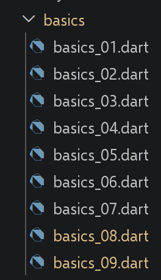
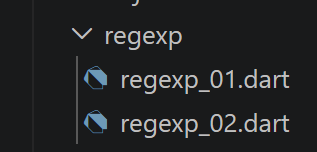

3. Los fundamentos

Este capítulo sigue, script por script, la progresión del capítulo [The Fundamentals] del curso de TypeScript: las mismas secciones, en el mismo orden, con un script Dart correspondiente a cada script TypeScript.
3.1. Lo básico de Dart
Esta primera sección cubre los fundamentos comunes a todos los programas Dart: variables, listas, bucles, funciones, ámbito de las variables, tipos básicos y conversiones.

3.1.1. Script [basics_01]
| // basics_01.dart
// Porta el script TypeScript basics-01.ts: variables, arreglos, bucles,
// desestructuración, funciones, tipado dinámico, operadores de comparación.
void main() {
// constante - en Dart, como en TypeScript, [const] declara una constante
// cuyo valor se conoce en TIEMPO DE COMPILACIÓN (una constante aún más estricta
// que el [const] de TypeScript, que solo exige un valor
// conocido en tiempo de ejecución y no reasignado)
const String name = "dupont";
// una salida en pantalla - [print] es el equivalente en Dart de [console.log]
print("name : $name");
// un arreglo (llamado "lista" en Dart) con elementos de distintos tipos
// [dynamic] porque esta lista mezcla deliberadamente varios tipos
// (demostración) - es el equivalente del [any] de TypeScript: Dart
// ya no realiza ninguna verificación de tipos en tiempo de compilación
// sobre los elementos de esta lista
final List<dynamic> array = ["one", "two", 3, 4];
// su número de elementos
int n = array.length;
// un bucle
for (var i = 0; i < n; i++) {
print("array[$i] = ${array[i]}");
}
// inicialización de 2 variables con el contenido de una lista
// Dart no tiene desestructuración de listas en la asignación como
// TypeScript (const [a, b] = array); desde Dart 3, un
// "patrón de lista" da el mismo resultado (véase dart3/*.dart
// para una presentación completa de los patrones)
final [string1, string2] = ["string1", "string2"];
// concatenación de las 2 cadenas
final String string3 = string1 + string2;
// mostrar el resultado
print([string1, string2, string3]);
// uso de una función
display(string1);
// el tipo de una variable se puede conocer con runtimeType
// (el equivalente en Dart del operador [typeof] de TypeScript)
displayType("n", n);
displayType("string1", string1);
displayType("array", array);
// [ADVERTENCIA, diferencia fundamental con TypeScript] en TypeScript, el
// tipo [any] permite que una variable cambie de tipo durante la ejecución
// (n = "has changed" después de n = 4 es válido). En Dart, el tipo de una
// variable queda fijado de una vez por todas por su declaración: [n] se
// declaró [int] más arriba, por lo que n = "has changed" es un ERROR DE
// COMPILACIÓN, no un simple descuido tolerado en tiempo de ejecución. Para
// obtener un comportamiento comparable al de [any], habría que declarar
// [dynamic n = array.length;] desde el principio - pero este script
// deliberadamente no lo hace, para resaltar la diferencia.
// La siguiente línea está por lo tanto COMENTADA: al descomentarla se produce un
// error de compilación.
// n = "has changed";
print('type[variable n]=${n.runtimeType} (Dart forbids assigning it '
'anything other than an int: see the comment above)');
// una función puede devolver un resultado
int res1 = f1(4);
print("res1=$res1");
// una función puede devolver varios valores: Dart no puede devolver
// directamente un arreglo JS heterogéneo en variables separadas con
// una sintaxis [let x, y, z; [x, y, z] = f()] como TypeScript. Se usa
// o bien un Record (véase dart3/, la solución moderna y tipada), o bien, aquí,
// para mantenernos cerca del script original, un valor que desestructuramos
// con un patrón (Dart 3):
final (res2, res3, res4) = f2();
print("(res2,res3,res4)=${[res2, res3, res4]}");
// también podríamos haber obtenido estos valores en una lista
final List<dynamic> t = f2ListAny();
for (var i = 0; i < t.length; i++) {
print("t[$i]=${t[i]}");
}
// algunas pruebas
for (var i = 0; i < t.length; i++) {
// muestra solo las cadenas - [is String] es el equivalente en Dart de
// [typeof(x) === "string"]
if (t[i] is String) {
print("t[$i]=${t[i]}");
}
}
// [ADVERTENCIA, diferencia fundamental con TypeScript/JavaScript] el
// operador [==] de Dart corresponde SIEMPRE al operador estricto [===] de
// JavaScript: Dart no tiene un operador de comparación con
// conversión implícita de tipos como el [==] no estricto de JavaScript.
// La comparación "2" == 2 es por lo tanto siempre falsa en Dart, sea cual sea
// el operador utilizado - el código siguiente tiene por ello deliberadamente
// una sola rama (sin sección "con ==" y luego "con ===" como
// en el script TypeScript original, ya que esta distinción no existe).
if ("2" == 2) {
print("the string 2 is equal to the integer 2");
} else {
print("in Dart, the string '2' is never equal to the integer 2 "
"(no implicit conversion like JS's non-strict ==)");
}
// otras pruebas
for (var i = 0; i < t.length; i++) {
// muestra solo los enteros >10
if (t[i] is int && t[i] > 10) {
print("t[$i]=${t[i]}");
}
}
// un bucle while
List<num> t2 = [8, 5, 0, -2, 3, 4];
var i = 0;
num sum = 0;
while (i < t2.length && t2[i] > 0) {
print("t2[$i]=${t2[i]}");
sum += t2[i];
i++;
}
print("sum=$sum");
}
// el programa principal se detiene aquí porque ya no hay más código ejecutable
// mostrar
// ----------------------------------
void display(String string) {
// muestra la cadena
print("string=$string");
}
// displayType
// ----------------------------------
void displayType(String name, dynamic variable) {
// muestra el tipo de la variable - [runtimeType] es el equivalente en Dart de
// [typeof]: a diferencia de [typeof], que devuelve una cadena genérica
// ("number", "string"...), [runtimeType] devuelve el nombre del tipo
// REAL de Dart del valor (int, String, List<dynamic>...)
print("type[variable $name]=${variable.runtimeType}");
}
// ----------------------------------
int f1(int param) {
// suma 10 al parámetro
return param + 10;
}
// ----------------------------------
// devuelve 3 valores como un Record (Dart 3) - el tipo de Dart moderno y tipado
// para lo que TypeScript haría con un arreglo heterogéneo [any[]]
(String, int, int) f2() {
return ("one", 0, 100);
}
// mismo resultado que f2(), pero como una lista [dynamic] para mantenerse
// lo más cerca posible del estilo [any[]] del script TypeScript original
List<dynamic> f2ListAny() {
return ["one", 0, 100];
}
|
Comentemos este código:
- Línea 9: [const String name]: en Dart, [const] exige un valor conocido en el momento de la COMPILACIÓN, una restricción más estricta que la de [const] en TypeScript, que solo exige un valor que no se reasigne en tiempo de ejecución.
- Línea 18: [List<dynamic> array]: Dart llama [list] al “array” de JavaScript, y [dynamic] desempeña el papel de [any] en TypeScript para desactivar la verificación de tipos sobre los elementos.
- Línea 31: [final [string1, string2] = [...]]: Dart no admite asignaciones por desestructuración como TypeScript; el PATRÓN DE LISTA de Dart 3, usado aquí, produce el mismo resultado (en el capítulo [Dart 3.x New Features] se ofrece una visión completa de los patrones).
- Línea 56: [n.runtimeType] reemplaza al operador [typeof] de TypeScript, con una diferencia: devuelve un nombre de tipo REAL de Dart ([int], [List<dynamic>]...), no solo una cadena genérica (["number"], ["string"]).
- La línea [n = "has changed";] está comentada intencionalmente: a diferencia de una variable de tipo [any] en TypeScript, una variable Dart conserva el tipo indicado en su declaración; esta asignación produciría un ERROR DE COMPILACIÓN.
- Línea 69: [final (res2, res3, res4) = f2();]: una función Dart no puede “devolver varios valores” en variables separadas como lo haría un arreglo heterogéneo de TypeScript; aquí [f2] devuelve un REGISTRO (Dart 3), que se desestructura de inmediato con un patrón de lista.
- Línea 94: [if ("2" == 2)]: el operador [] de Dart corresponde al [=] estricto de JavaScript; no existe en Dart un equivalente del [==] no estricto de JavaScript, así que aquí no hay un segundo caso que mostrar, a diferencia del script TypeScript original.
Como recordatorio, para ejecutar un script Dart se puede escribir el siguiente comando en una terminal:
dart run path_to_script.dart
Por ejemplo, como se muestra a continuación:
si su terminal está ubicada en la carpeta que contiene el script [basics_01.dart]. También puede hacer clic en el término [Run] del editor de texto, que aparece sobre la función [main]:

El resultado de la ejecución de [basics_01] es el siguiente:
| name : dupont
array[0] = one
array[1] = two
array[2] = 3
array[3] = 4
[string1, string2, string1string2]
string=string1
type[variable n]=int
type[variable string1]=String
type[variable array]=List<dynamic>
type[variable n]=int (Dart forbids assigning it anything other than an int: see the comment above)
res1=14
(res2,res3,res4)=[one, 0, 100]
t[0]=one
t[1]=0
t[2]=100
t[0]=one
in Dart, the string '2' is never equal to the integer 2 (no implicit conversion like JS's non-strict ==)
t[2]=100
t2[0]=8
t2[1]=5
sum=13
|
3.1.2. Script [basics_02]
| // basics_02.dart
// Porta basics-02.ts: var/let/const en TypeScript, var/final/const en Dart.
void main() {
// para inicializar una variable, se usa [var] (tipo inferido) o un
// tipo explícito (como [int] aquí) para variables MUTABLES -
// el equivalente del [let] de TypeScript
int x = 4;
x++;
print(x);
// [final] para una variable asignada UNA SOLA VEZ en tiempo de ejecución -
// el equivalente del [const] de TypeScript (un valor conocido solo en
// tiempo de ejecución, pero que no se puede reasignar después)
final int y = 10;
x += y;
// prohibido - x es mutable pero y no: y++ provoca un
// error de compilación, exactamente como en TypeScript
// y++;
// [NOVEDAD respecto a TypeScript] Dart ofrece una segunda palabra clave,
// [const], más estricta que [final]: una constante [const] debe
// conocerse en TIEMPO DE COMPILACIÓN (como al principio de basics_01.dart). No
// existe equivalente de esta distinción final/const en
// TypeScript, donde [const] solo significa "no reasignado".
const int z = 100; // conocido en tiempo de compilación: válido
print(z);
}
|
Analicemos este código:
- Una variable mutable se declara con un tipo explícito (o con [var]): equivale a [let] de TypeScript.
- [final] es el equivalente de [const] en TypeScript: un valor asignado una sola vez, pero cuyo valor no se conoce hasta el tiempo de ejecución.
- Línea 19: [NEW] Dart agrega una segunda palabra clave, [const], más estricta que [final]: un valor [const] debe conocerse en el momento de la COMPILACIÓN. TypeScript no tiene esta distinción de dos niveles.
El resultado de la ejecución es el siguiente:
3.1.3. Script [basics_03]
| // basics_03.dart
// Porta basics-03.ts: ámbito de las variables - una variable a nivel de archivo
// (ámbito "top-level", el equivalente en Dart del ámbito de módulo
// de TypeScript) es visible desde las funciones del mismo archivo.
// variable de nivel superior (fuera de cualquier función/clase), como el
// [let] de nivel superior del script TypeScript
int count = 1;
void doSomething() {
// count se conoce aquí: una función ve las variables de nivel superior del
// archivo que la contiene, exactamente como en TypeScript
print("count=$count");
}
void main() {
// llamada
doSomething();
}
|
Comentemos este código:
- Una variable declarada fuera de cualquier función (ámbito [top-level]) es visible desde todas las funciones del mismo archivo: exactamente el papel de una variable de ámbito de módulo en TypeScript.
El resultado de la ejecución es el siguiente:
3.1.4. Script [basics_04]
| // basics_04.dart
// Porta basics-04.ts: una variable local a una función oculta una variable
// de nivel superior con el mismo nombre - el mismo principio de ocultamiento (shadowing) que en
// TypeScript.
// variable de nivel superior
const int count = 1;
void doSomething() {
// la variable local oculta la variable de nivel superior
const count = 2;
print("count inside function=$count");
}
void main() {
// variable de nivel superior
print("count outside function=$count");
// variable local
doSomething();
}
|
Comentemos este código:
- Una variable local de una función, con el mismo nombre que una variable top-level, la OCULTA ([shadowing]) dentro de esa función: el mismo principio que en TypeScript.
El resultado de la ejecución es el siguiente:
| count outside function=1
count inside function=2
|
3.1.5. Script [basics_05]
| // basics_05.dart
// Porta basics-05.ts: una variable declarada dentro de una función
// no se conoce fuera de ella - mismo principio que en TypeScript.
void doSomething() {
// variable local a la función
const count = 2;
print("count inside function=$count");
}
void main() {
// count no se conoce aquí: la siguiente línea, si se descomentara,
// provocaría un error de compilación ("Undefined name 'count'"),
// exactamente como en TypeScript
// print("count outside function=$count");
doSomething();
}
|
Comentemos este código:
- Una variable declarada dentro de una función no es visible fuera de ella: hacer referencia a ella fuera de la función produce un error de compilación, igual que en TypeScript.
El resultado de la ejecución es el siguiente:
3.1.6. Script [basics_06]
Este script es más corto que su equivalente en TypeScript: véase el comentario al inicio del archivo para conocer el motivo.
| // basics_06.dart
// Porta basics-06.ts: ámbito de bloque.
//
// [ADVERTENCIA, diferencia fundamental con TypeScript/JavaScript] TypeScript tiene
// TRES palabras clave de declaración con ámbitos distintos: [let] y [const]
// tienen ámbito de BLOQUE, pero [var] (heredado de JavaScript) tiene
// ámbito de FUNCIÓN - una variable [var] declarada en un bloque {...} "se escapa"
// fuera de ese bloque, que es precisamente lo que muestra este script con [count3].
// Dart NO tiene equivalente de este [var]: [var], [final] y [const] son
// SIEMPRE de ámbito de bloque en Dart, sin excepción. Este script es por lo tanto
// más corto que el original: solo hay dos casos que mostrar, no tres,
// y ambos se comportan como los casos [let]/[const] de TypeScript.
void main() {
// [var] (tipo inferido) define una variable con ámbito de bloque
{
// la variable [count] solo se conoce en este bloque
var count = 1;
print("count=$count");
}
// la variable [count] no se conoce aquí: la siguiente línea, si se
// descomentara, provocaría un error de compilación
// count++;
// [final] define una variable (no reasignable) con ámbito de bloque
{
// la variable [count2] solo se conoce en este bloque
final count2 = 1;
print("count=$count2");
}
// la variable [count2] tampoco se conoce aquí
// count2++;
// no hay un 3.er caso en Dart: ninguna palabra clave de declaración
// permite que una variable "se escape" fuera del bloque donde se declara,
// a diferencia del [var] de TypeScript/JavaScript usado para [count3]
// en el script original.
}
|
Comentemos este código:
- [var] y [final] tienen SIEMPRE ámbito de BLOQUE en Dart, sin excepciones.
- Este script muestra solo los DOS casos, mientras que el script TypeScript mostraba tres: Dart no tiene un equivalente de [var] de JavaScript, cuyo ámbito es el de la FUNCIÓN (no el del bloque) y que “se escapa” de un bloque [{...}], una fuente clásica de errores en JavaScript, pero estructuralmente imposible en Dart.
El resultado de la ejecución es el siguiente:
3.1.7. Script [basics_07]
| // basics_07.dart
// Porta basics-07.ts: los principales tipos de datos básicos y su
// introspección con runtimeType (el equivalente en Dart de typeof).
void main() {
const int var1 = 10;
const String var2 = "abc";
const bool var3 = true;
const List<int> var4 = [1, 2, 3];
const Map<String, String> var5 = {'name': 'axèle'};
// una variable de tipo función - Dart tipa las funciones con la
// notación [ReturnType Function(parameters)]
int Function() var6 = () => 3;
// mostrar los tipos con runtimeType
print("var1.runtimeType=${var1.runtimeType}");
print("var2.runtimeType=${var2.runtimeType}");
print("var3.runtimeType=${var3.runtimeType}");
print("var4.runtimeType=${var4.runtimeType}");
print("var5.runtimeType=${var5.runtimeType}");
print("var6.runtimeType=${var6.runtimeType}");
}
|
Comentemos este código:
- Línea 12: [int Function() var6 = () => 3;]: en Dart, las funciones se definen con la notación [ReturnType Function(parameters)]; una función es un tipo como cualquier otro, asignable a una variable.
- Líneas 15–20: [runtimeType] muestra, para cada variable, su tipo Dart real ([int], [String], [List<int>], [Map<String, String>] (línea 9), [() => int]...).
El resultado de la ejecución es el siguiente:
| var1.runtimeType=int
var2.runtimeType=String
var3.runtimeType=bool
var4.runtimeType=List<int>
var5.runtimeType=_ConstMap<String, String>
var6.runtimeType=() => int
|
3.1.8. Script [basics_08]
Este script difiere por naturaleza de su equivalente en TypeScript: mientras que basics-08.ts ilustraba las conversiones IMPLÍCITAS de JavaScript, este script muestra las conversiones EXPLÍCITAS que hay que escribir en su lugar, ya que Dart no realiza ninguna de esas conversiones (véase el comentario al inicio del archivo para conocer los detalles de las tres reglas pertinentes).
| // basics_08.dart
// Porta basics-08.ts.
//
// [ADVERTENCIA, diferencia fundamental con TypeScript/JavaScript] este script
// cambia por completo de naturaleza respecto al original. JavaScript (y
// por lo tanto TypeScript, que solo añade tipos verificados en
// TIEMPO DE COMPILACIÓN pero conserva el comportamiento de JavaScript en TIEMPO DE EJECUCIÓN)
// realiza muchas conversiones de tipo IMPLÍCITAS en tiempo de ejecución:
// - en una prueba [if (data) ...], cualquier valor se convierte en un
// booleano ("" y 0 son "falsy", "abcd" y [1,2,3] son "truthy"...);
// - el operador [+] realiza una suma SI AMBOS operandos son
// números, de lo contrario una concatenación de cadenas ("12" * 1 es 12, pero
// "12" + 1 es "121");
// - true/false se convierten en 1/0 en un cálculo...
// Dart NO tiene NINGUNA de estas conversiones implícitas:
// - la condición de un [if] debe ser un [bool], punto: [if
// ("abcd")] es un ERROR DE COMPILACIÓN, no una conversión automática;
// - [+] exige operandos del MISMO tipo (String+String, o num+num): "12"
// + 1 es un error de compilación;
// - un [bool] nunca se convierte implícitamente en un número.
// Por lo tanto, a diferencia del script TypeScript original, este script muestra las
// conversiones EXPLÍCITAS que hay que escribir en lugar de cada una de estas
// conversiones implícitas.
void main() {
print("---------------[No implicit conversion to a boolean]------"
"------------------------------");
// en TypeScript, [showBool(value)] prueba directamente la "veracidad" (truthiness) de
// cualquier valor. En Dart, usted mismo debe escribir la prueba
// explícita que corresponda a lo que realmente quiere verificar: una cadena
// vacía, una lista vacía, un valor nulo... Por ello, [showBool] a continuación
// acepta deliberadamente solo un [Object?] (que admite nulos) y documenta,
// para cada familia de tipos, la conversión EXPLÍCITA equivalente
showBoolEquivalent("abcd", (v) => (v as String).isNotEmpty);
showBoolEquivalent("", (v) => (v as String).isNotEmpty);
showBoolEquivalent([1, 2, 3], (v) => (v as List).isNotEmpty);
showBoolEquivalent(<int>[], (v) => (v as List).isNotEmpty);
showBoolEquivalent(null, (v) => v != null);
showBoolEquivalent(0.0, (v) => (v as double) != 0.0);
showBoolEquivalent(0, (v) => (v as int) != 0);
showBoolEquivalent(4.6, (v) => (v as double) != 0.0);
print("---------------[Explicit conversion of a string to a number]"
"------------------------------");
showNumber("12");
showNumber("45.67");
showNumber("abcd");
print("---------------[Explicit conversion to a boolean]------------"
"------------------------------");
// a diferencia de Boolean(data) en JavaScript (que aplica las reglas de
// "veracidad"), no existe una función genérica equivalente en Dart:
// cada tipo debe ofrecer su propia noción de "vacío/no vacío" (mostrada
// más arriba con showBoolEquivalent)
print("---------------[Explicit conversion to a number]-------------"
"-----------------------------");
showNumber2("12.45");
showNumber2(true); // este caso se trata por separado más abajo
showNumber2(null);
print("---------------[Explicit conversion to a string]-------------"
"-----------------------------");
showString(5);
showString(6.7);
showString(false);
showString(null);
print("---------------[Other cases]------------------------------");
const String string1 = '1000.78';
// en Dart, [+] entre un String y un num es un error de compilación:
// uno de los dos operandos debe convertirse explícitamente
// conversión de string1 a número, luego suma
final double data1 = double.parse(string1) + 1.034;
print("data1=$data1 (explicit conversion required, unlike "
"'1000.78' + 1.034 in JS which concatenates into a string)");
// conversión inversa: el número a cadena, luego concatenación
final String data2 = (1.034).toString() + string1;
print("data2=$data2 (here we knowingly choose concatenation, by "
"converting the number)");
// true/false NUNCA se convierten implícitamente en número en Dart -
// usted mismo debe escribir la correspondencia deseada. [boolValue] es una
// variable (y no el literal [true] directamente): con un literal,
// dart analyze vería la rama [: 0.0] como código muerto (siempre
// falsa), ya que la condición se conocería entonces en tiempo de compilación.
// (deliberadamente [final], no [const]: un [const] seguiría siendo una constante
// de tiempo de compilación, y dart analyze aún detectaría el código muerto)
final bool boolValue = true;
final double data3 = boolValue ? 1.0 : 0.0;
print("data3=$data3 (explicit equivalent of JS's 'true * 1.18', "
"combined with the multiplication below)");
print("true converted then multiplied by 1.18 = ${data3 * 1.18}");
}
// muestra, para un valor dado, la conversión booleana EXPLÍCITA que
// reemplaza la conversión implícita de JavaScript - [tester] codifica la
// forma "correcta" de probar este valor en particular
void showBoolEquivalent(Object? data, bool Function(Object?) tester) {
print("[data=$data], [type(data)]=${data.runtimeType}, "
"[equivalent explicit test]=${tester(data)}");
}
void showNumber(String data) {
// a diferencia de [data * 1] en JS (que falla silenciosamente con NaN si
// data no es numérico), [double.parse] lanza una excepción explícita
// [FormatException] en caso de fallo - la capturamos aquí para ilustrar el
// caso "abcd" del script original
try {
final number = double.parse(data);
print("[data=$data], [number]=$number, [type(number)]="
"${number.runtimeType}");
} on FormatException {
print("[data=$data] : FormatException, this is not a valid number "
"(unlike Number('$data') in JS, which would return NaN without "
"throwing an error)");
}
}
void showNumber2(Object? data) {
// conversión explícita según el tipo real del dato - no existe
// una única función de Dart equivalente a Number(...) que acepte
// indistintamente un num, un bool o null
double? number;
if (data is num) {
number = data.toDouble();
} else if (data is String) {
number = double.tryParse(data);
} else if (data is bool) {
number = data ? 1.0 : 0.0;
}
print("[data=$data], [type(data)]=${data.runtimeType}, [number]=$number, "
"[type(number)]=${number.runtimeType}");
}
void showString(Object? data) {
// toString() existe en (casi) todos los objetos de Dart, incluido null
// (devuelve "null") - bastante cercano, aquí, al comportamiento de String(data)
final String string = data.toString();
print("[data=$data], [type(data)]=${data.runtimeType}, [string]=$string, "
"[type(string)]=${string.runtimeType}");
}
|
Analicemos este código:
- [showBoolEquivalent]: Dart no tiene conversión implícita a [bool]; una condición [if] requiere un [bool] REAL; cada familia de tipos (cadena, lista, número) debe proporcionar explícitamente su propia prueba de “vacío/no vacío”.
- Línea 126: [double.parse]/[double.tryParse] reemplazan la conversión implícita [Number(string)] de JavaScript: [parse] lanza una [FormatException] explícita en caso de fallo; [tryParse] devuelve [null], nunca un [NaN] silencioso.
- Línea 73: [double.parse(string1) + 1.034]: [+] entre un [String] y un [num] es un error de COMPILACIÓN en Dart, a diferencia de ['1000.78' + 1.034] en JavaScript, que concatena silenciosamente.
- [true ? 1.0 : 0.0]: en Dart, un [bool] no se convierte implícitamente en número; hay que escribir uno mismo la correspondencia deseada, mientras que [true * 1.18] es válido en JavaScript.
El resultado de la ejecución es el siguiente:
| ---------------[No implicit conversion to a boolean]------------------------------------
[data=abcd], [type(data)]=String, [equivalent explicit test]=true
[data=], [type(data)]=String, [equivalent explicit test]=false
[data=[1, 2, 3]], [type(data)]=List<int>, [equivalent explicit test]=true
[data=[]], [type(data)]=List<int>, [equivalent explicit test]=false
[data=null], [type(data)]=Null, [equivalent explicit test]=false
[data=0.0], [type(data)]=double, [equivalent explicit test]=false
[data=0], [type(data)]=int, [equivalent explicit test]=false
[data=4.6], [type(data)]=double, [equivalent explicit test]=true
---------------[Explicit conversion of a string to a number]------------------------------
[data=12], [number]=12.0, [type(number)]=double
[data=45.67], [number]=45.67, [type(number)]=double
[data=abcd] : FormatException, this is not a valid number (unlike Number('abcd') in JS, which would return NaN without throwing an error)
---------------[Explicit conversion to a boolean]------------------------------------------
---------------[Explicit conversion to a number]------------------------------------------
[data=12.45], [type(data)]=String, [number]=12.45, [type(number)]=double
[data=true], [type(data)]=bool, [number]=1.0, [type(number)]=double
[data=null], [type(data)]=Null, [number]=null, [type(number)]=Null
---------------[Explicit conversion to a string]------------------------------------------
[data=5], [type(data)]=int, [string]=5, [type(string)]=String
[data=6.7], [type(data)]=double, [string]=6.7, [type(string)]=String
[data=false], [type(data)]=bool, [string]=false, [type(string)]=String
[data=null], [type(data)]=Null, [string]=null, [type(string)]=String
---------------[Other cases]------------------------------
data1=1001.814 (explicit conversion required, unlike '1000.78' + 1.034 in JS which concatenates into a string)
data2=1.0341000.78 (here we knowingly choose concatenation, by converting the number)
data3=1.0 (explicit equivalent of JS's 'true * 1.18', combined with the multiplication below)
true converted then multiplied by 1.18 = 1.18
|
3.1.9. Script [basics_09]
A diferencia de las novedades de ECMAScript, que serán reemplazadas por el capítulo [Dart 3.x New Features], este script se conserva: la mayoría de estos operadores existen de forma nativa en Dart desde hace mucho tiempo, a veces mucho antes de 2020.
| // basics_09.dart
// Porta basics-09.ts (los operadores modernos de ECMAScript 2020-2021).
// A diferencia de las "novedades de ECMAScript", que se reemplazarán más adelante
// por el capítulo Novedades de Dart 3.x, este script se queda AQUÍ: la mayoría de
// estos operadores existen de forma nativa en Dart desde hace mucho tiempo (a veces
// desde Dart 2.0/2.12, mucho antes de 2020), por lo que forman parte de los
// fundamentos de Dart igual que el resto de este capítulo.
void main() {
// ------------------------------------------------------------------------
// 1) el operador de fusión de nulos [??] - existe en Dart desde hace
// mucho tiempo (Dart 2.0), y se comporta EXACTAMENTE como en TypeScript:
// solo activa el valor predeterminado si el valor es null (Dart
// no tiene un valor [undefined] separado de [null])
// ------------------------------------------------------------------------
// de tipo [int?] (que admite nulos), no [int]: con un tipo no nulo,
// dart analyze vería con razón que [?? 10] nunca puede
// activarse (el tipo ya garantiza que quantity1 no es null) - mientras que
// el objetivo aquí es precisamente comparar el comportamiento de [??] con
// un valor no nulo (quantity1) y con un valor nulo (quantity2)
const int? quantity1 = 0;
// en Dart no existe el operador [||] para este uso: el [||] lógico de Dart
// solo acepta operandos [bool], por lo que "quantity1 ||
// 10" sería un error de compilación - por lo tanto solo hay un
// operador que mostrar aquí, [??], sin el riesgo de error que ilustraba el
// script TypeScript original (0 es de todos modos un [int], nunca
// se interpreta como "false")
print("quantity1 ?? 10 = ${quantity1 ?? 10}"); // -> 0 (quantity1 no es null)
const int? quantity2 = null;
print("quantity2 ?? 10 = ${quantity2 ?? 10}"); // -> 10 (quantity2 es null)
// ------------------------------------------------------------------------
// 2) encadenamiento opcional [?.] - también existe en Dart desde hace mucho tiempo
// ------------------------------------------------------------------------
final person1 = PersonWithOptionalAddress(
name: "Dupont",
address: Address(city: "Nantes"),
);
final person2 = PersonWithOptionalAddress(name: "Martin"); // ¡sin dirección!
// [?.] detiene la evaluación y devuelve [null] en cuanto un paso es null,
// en lugar de lanzar una excepción "NoSuchMethodError" sobre null
print("person1 city = ${person1.address?.city}");
print("person2 city = ${person2.address?.city}"); // -> null, sin error
// [?.] y [??] se pueden combinar para proporcionar un valor de respaldo
print("person2 city (with default) = ${person2.address?.city ?? "unknown city"}");
// [?.] también funciona en llamadas a métodos...
final objectWithMethod = ObjectWithMethod();
print("existing method call : ${objectWithMethod.sayHello()}");
// ...y en el acceso a un elemento de una lista (mediante el operador [?[ ]])
final List<int>? listOrNull = null;
print("element of a missing list : ${listOrNull?[0]}"); // -> null
// ------------------------------------------------------------------------
// 3) los operadores de asignación lógica [??=]
// ------------------------------------------------------------------------
// [a ??= b] equivale a [a = a ?? b]: asigna b solo si a es null -
// este operador existe en Dart, con exactamente la misma sintaxis que en
// TypeScript
final config = Configuration(delay: 0, page: null);
config.delay ??= 1000; // delay ya es 0 (valor válido) -> permanece sin cambios
config.page ??= 1; // page es null -> pasa a ser 1
print("config after ??= : delay=${config.delay}, page=${config.page}");
// [ADVERTENCIA, diferencia fundamental con TypeScript] Dart NO TIENE
// los operadores [||=] y [&&=]: [||] y [&&] de Dart solo aceptan
// valores [bool] (como se vio en el punto 1), y no existe ningún atajo de
// asignación para este caso - la prueba debe escribirse explícitamente
String displayedMessage = "";
// equivalente explícito de [displayedMessage ||= "default message"]:
// en Dart, usted mismo debe escribir la prueba de "falso" que tenga sentido (aquí:
// cadena vacía) en lugar de apoyarse en una noción genérica de "falso"
if (displayedMessage.isEmpty) {
displayedMessage = "default message";
}
print("displayedMessage after the if equivalent to ||= : $displayedMessage");
// equivalente explícito de [a &&= b] (asigna b solo si a ya es
// "verdadero"): de nuevo, un simple if, debiendo [a] ser un booleano real
bool loggedInUser = true;
if (loggedInUser) {
loggedInUser = true; // la "b" de a &&= b
}
print("loggedInUser after the if equivalent to &&= : $loggedInUser");
// ------------------------------------------------------------------------
// 4) separadores numéricos [_] en los literales
// ------------------------------------------------------------------------
// [ADVERTENCIA, diferencia con TypeScript] Dart NO acepta el carácter [_]
// como separador visual en un literal numérico: "1_000_000"
// es un error de sintaxis en Dart. El número debe escribirse "completo",
// pudiendo darle formato para mostrarlo con el paquete [intl]
// (NumberFormat) si el objetivo es la legibilidad en pantalla.
const int oneMillion = 1000000;
print("oneMillion = $oneMillion");
// ------------------------------------------------------------------------
// 5) BigInt
// ------------------------------------------------------------------------
// [ADVERTENCIA, diferencia fundamental con TypeScript/JavaScript] el tipo
// [number] de JavaScript es un flotante de doble precisión, que pierde
// precisión a partir de aproximadamente 2^53 - de ahí la necesidad de un tipo
// [BigInt] aparte para enteros exactos muy grandes (números de tarjetas
// bancarias, identificadores...). El tipo [int] de Dart, en cambio, es un VERDADERO
// entero de 64 bits con signo en todas las plataformas nativas (VM, AOT): sigue siendo
// exacto hasta 2^63-1, mucho más allá de [Number.MAX_SAFE_INTEGER] de JavaScript
// (2^53-1) - la mayoría de los usos que requerirían un
// BigInt en JavaScript simplemente no lo necesitan en Dart.
print("the Dart equivalent of Number.MAX_SAFE_INTEGER does not exist: "
"int is exact up to 9223372036854775807 (2^63-1)");
const int bigNumber = 9007199254740993; // > 2^53, impreciso en JS, exacto aquí
print("bigNumber = $bigNumber (exact, whereas it would lose its "
"precision stored in a JavaScript Number)");
// para una necesidad realmente ilimitada (más allá de 64 bits, p. ej. cálculo
// criptográfico), Dart NO ofrece un tipo BigInt en su biblioteca
// estándar (dart:core): entonces hay que recurrir a un
// paquete de terceros como package:fixnum, o implementar su propio cálculo -
// una necesidad mucho más rara que en JavaScript, dado lo anterior.
}
// ------------------------------------------------------------------------
// clases utilitarias para la demostración del encadenamiento opcional
// ------------------------------------------------------------------------
class Address {
final String city;
Address({required this.city});
}
class PersonWithOptionalAddress {
final String name;
final Address? address; // address es opcional (admite nulos)
PersonWithOptionalAddress({required this.name, this.address});
}
class ObjectWithMethod {
String sayHello() => "hello!";
}
class Configuration {
int? delay;
int? page;
Configuration({this.delay, this.page});
}
|
Comentemos este código:
- [??] y [?.] (coalescencia nula, encadenamiento opcional) forman parte de Dart desde hace mucho tiempo y se comportan exactamente como en TypeScript.
- Línea 63: [config.delay ??= 1000;]: la asignación lógica [??=] existe en Dart, con la misma sintaxis que en TypeScript.
- Dart no tiene equivalente para los operadores [||=] y [&&=]: sus operadores [||]/[&&] solo aceptan [bool], de modo que no existe un concepto genérico de “falso” que eludir; un simple [if] explícito los reemplaza.
- [1_000_000] es un ERROR DE SINTAXIS en Dart: a diferencia de TypeScript, no se permiten separadores visuales en un literal numérico.
- [int] es un entero de 64 bits con signo EXACTO válido en cualquier plataforma nativa de Dart, hasta 2^63-1, mucho más allá de [Number.MAX_SAFE_INTEGER] (2^53-1): la mayoría de los casos de uso que requerirían un [BigInt] de JavaScript simplemente no lo necesitan en Dart, que, dicho sea de paso, no ofrece [BigInt] en su biblioteca estándar.
El resultado de la ejecución es el siguiente:
| quantity1 ?? 10 = 0
quantity2 ?? 10 = 10
person1 city = Nantes
person2 city = null
person2 city (with default) = unknown city
existing method call : hello!
element of a missing list : null
config after ??= : delay=0, page=1
displayedMessage after the if equivalent to ||= : default message
loggedInUser after the if equivalent to &&= : true
oneMillion = 1000000
the Dart equivalent of Number.MAX_SAFE_INTEGER does not exist: int is exact up to 9223372036854775807 (2^63-1)
bigNumber = 9007199254740993 (exact, whereas it would lose its precision stored in a JavaScript Number)
|
3.1.10. Conclusión
Esta primera sección sentó las bases: tipado estricto sin coerción implícita, la distinción entre [final] y [const], ámbito de bloque sistemático y ausencia de asignación por desestructuración (compensada por los patrones de Dart 3). Estas diferencias reaparecerán a lo largo del curso.
3.2. Arreglos

En Dart, un “arreglo” se llama [list] ([List]). Esta sección cubre las operaciones clásicas con listas: referencia frente a valor, iteración, métodos sobre los extremos, métodos funcionales y los métodos “inmutables” recientes de JavaScript.
3.2.1. Script [arr_01]
| // arr_01.dart
// Porta arr-01.ts: una lista es un objeto que se maneja mediante su referencia,
// exactamente como un arreglo de JavaScript/TypeScript.
void main() {
final List<int> arr1 = [1, 2, 3];
// copia de la REFERENCIA, no copia del contenido
final List<int> arr2 = arr1;
// arr1 y arr2 apuntan a la misma lista - [identical] es el equivalente en Dart
// de [===] aplicado a la IDENTIDAD del objeto (en lugar de [==], que para
// las listas compara el contenido; véase la observación más abajo)
print("identical(arr1, arr2) : ${identical(arr1, arr2)}");
// la lista se puede modificar a través de arr1 o de arr2
arr2[1] = 10;
print("arr1=$arr1");
print("arr2=$arr2");
// [Observación específica de Dart] a diferencia de JavaScript, donde [arr1 === arr2]
// y [arr1 == arr2] son equivalentes para los arreglos (comparación de referencia
// en ambos casos), el operador [==] de Dart sobre un objeto List
// también compara la REFERENCIA por defecto (no el contenido): []
// == [] es por lo tanto falso en Dart, como muestra la siguiente línea
print("[1, 2] == [1, 2] (two different lists) : ${[1, 2] == [1, 2]}");
}
|
Comentemos este código:
- Línea 7: [final List<int> arr2 = arr1;] copia la REFERENCIA, no su contenido: [arr1] y [arr2] se refieren a la misma lista, exactamente como en JavaScript.
- Línea 11: [identical(arr1, arr2)] es el equivalente en Dart de [===] aplicado a objetos (prueba de IDENTIDAD).
- Línea 22: [[1, 2] == [1, 2]] es FALSE en Dart: a diferencia de JavaScript, donde [===] y [] son equivalentes en los arreglos (comparación de referencia en ambos casos), el operador [] de Dart aplicado a una [List] TAMBIÉN compara, por defecto, la referencia y no el contenido.
El resultado de la ejecución es el siguiente:
| identical(arr1, arr2) : true
arr1=[1, 10, 3]
arr2=[1, 10, 3]
[1, 2] == [1, 2] (two different lists) : false
|
3.2.2. Script [arr_02]
Una diferencia importante que conviene señalar antes de este script: véase el comentario al inicio del archivo sobre la ausencia de listas dispersas en Dart.
| // arr_02.dart
// Porta arr-02.ts.
//
// [ADVERTENCIA, diferencia fundamental con TypeScript/JavaScript] un arreglo
// de JavaScript es "disperso": se puede escribir arr[3] = 100 en un arreglo
// vacío, lo que extiende automáticamente su longitud a 4, dejando
// "huecos" (índices sin valor, distintos de undefined). Una List de
// Dart NO es dispersa: sus índices válidos siempre van de 0 a length-1
// sin huecos, y escribir arr[3] en una lista de longitud 0 lanza un
// [RangeError] (índice fuera de rango) - la lista nunca crece por
// sí sola mediante una asignación indexada. Para hacerla crecer, use [add] (al final)
// o uno de los métodos de la siguiente sección (arr_03.dart, arr_04.dart).
void main() {
// [dynamic] porque esta lista contendrá valores de distintos tipos
final List<dynamic> arr = [];
print("arr=$arr, length=[${arr.length}]");
print("-------------------------------");
// no hay equivalente directo de arr[3] = 100 en una lista vacía: construimos
// el mismo resultado visual ("huecos") rellenando explícitamente con
// null hasta el índice deseado, lo que hace VISIBLES los huecos (nulls),
// mientras que JavaScript los deja invisibles (ni valor, ni
// undefined explícito)
while (arr.length <= 3) {
arr.add(null);
}
arr[3] = 100;
arr[1] = "eight";
print("arr=$arr, length=[${arr.length}]");
print("-------------------------------");
// toString
print("arr.toString=[${arr.toString()}]");
print("-------------------------------");
// las claves de una lista de Dart son siempre 0..length-1: no hay un método
// [keys()] aparte, los índices se usan directamente con un [for]
for (var key = 0; key < arr.length; key++) {
print("key=[$key], value=[${arr[key]}]");
}
print("-------------------------------");
// los valores de la lista - [arr] YA ES el iterable de sus valores,
// a diferencia de JavaScript, donde arr.values() devuelve un iterador aparte
for (var value in arr) {
print("value=[$value]");
}
}
|
Comentemos este código:
- Una lista de Dart NUNCA es dispersa: sus índices válidos siempre van de 0 a [length-1], sin huecos.
- Línea 10: escribir [arr[3]] en una lista vacía lanza un [RangeError], a diferencia de JavaScript, donde escribir [arr[3] = 100] en un arreglo vacío lo extiende automáticamente creando “huecos” invisibles.
- El script rellena explícitamente con valores [null] hasta el índice deseado para recrear, de forma VISIBLE, el mismo efecto visual que los huecos de JavaScript.
- Línea 45: [for (var value in arr)]: una [List] de Dart ya es un iterable sobre sus valores; no hace falta un método aparte como en JavaScript.
El resultado de la ejecución es el siguiente:
| arr=[], length=[0]
-------------------------------
arr=[null, eight, null, 100], length=[4]
-------------------------------
arr.toString=[[null, eight, null, 100]]
-------------------------------
key=[0], value=[null]
key=[1], value=[eight]
key=[2], value=[null]
key=[3], value=[100]
-------------------------------
value=[null]
value=[eight]
value=[null]
value=[100]
|
3.2.3. Script [arr_03]
| // arr_03.dart
// Porta arr-03.ts: iteración sobre una lista y sus métodos de manipulación
// en ambos extremos (pop/push/shift/unshift), así como splice.
void main() {
// una lista puede contener datos de distintos tipos
final List<dynamic> arr = [
1,
2,
"one",
"two",
true,
[10, 20],
{'prop1': 10, 'prop2': "abc"},
];
// print puede mostrar el contenido de una lista
show(1);
print("arr=$arr");
show(2);
// iteración sobre la lista con forEach
arr.forEach((element) {
print("element=$element ${element.runtimeType}");
});
show("2b");
// iteración con for-in, más idiomático en Dart que forEach para una
// iteración simple (forEach no acepta break/continue, for-in sí)
for (final element in arr) {
print("element=$element ${element.runtimeType}");
}
show(3);
// iteración sobre la lista con un for indexado clásico
for (var i = 0; i < arr.length; i++) {
print("i=$i arr[i]=${arr[i]}");
}
show(4);
// modificación de arr[i]
arr[5] = [];
print("arr=$arr");
show(5);
// se elimina el último elemento de la lista - removeLast() es
// el equivalente en Dart de pop()
var element = arr.removeLast();
print("element=$element arr=$arr");
show(6);
// se agrega un elemento al final de la lista - add() es el equivalente de
// push() (para un solo elemento)
arr.add('xyz');
print("arr=$arr");
show(7);
// se agrega un elemento al principio de la lista - insert(0, ...) es
// el equivalente de unshift()
arr.insert(0, 1000);
print("arr=$arr");
show(8);
// se elimina el 1.er elemento - removeAt(0) es el equivalente de shift()
element = arr.removeAt(0);
print("element=$element arr=$arr");
show(9);
// se elimina el elemento n.º 2 de la lista - no existe un método [splice]
// en Dart; primero se obtiene el subconjunto pertinente con
// [sublist], luego se elimina con [removeRange]
var elements = arr.sublist(2, 3);
arr.removeRange(2, 3);
print("element(s)=$elements arr=$arr");
show(10);
// se eliminan dos elementos de la lista a partir del elemento n.º 1
elements = arr.sublist(1, 3);
arr.removeRange(1, 3);
print("element(s)=$elements arr=$arr");
}
// función
void show(Object param) {
print("[$param :::::::::::::::::::::::::::::::::::::::::::::::::::::::::"
":::::::::::::: ]");
}
|
Comentemos este código:
- Línea 20: [arr.forEach(...)] existe, pero en Dart se prefiere [for (final element in arr)] (línea 26) para un bucle simple: a diferencia de [forEach], un [for-in] admite tanto [break] como [continue].
- Línea 41: [arr.removeLast()] reemplaza a [pop()]; [arr.add(...)] (línea 46) reemplaza a [push()] (para un solo elemento); [arr.insert(0, ...)] (línea 51) reemplaza a [unshift()], y [arr.removeAt(0)] (línea 55) reemplaza a [shift()].
- Dart no tiene un método llamado [splice]: primero se obtiene el subconjunto pertinente con [sublist] y luego se elimina con [removeRange]; dos pasos en lugar de una sola llamada.
El resultado de la ejecución es el siguiente:
| [1 ::::::::::::::::::::::::::::::::::::::::::::::::::::::::::::::::::::::: ]
arr=[1, 2, one, two, true, [10, 20], {prop1: 10, prop2: abc}]
[2 ::::::::::::::::::::::::::::::::::::::::::::::::::::::::::::::::::::::: ]
element=1 int
element=2 int
element=one String
element=two String
element=true bool
element=[10, 20] List<int>
element={prop1: 10, prop2: abc} _Map<String, Object>
[2b ::::::::::::::::::::::::::::::::::::::::::::::::::::::::::::::::::::::: ]
element=1 int
element=2 int
element=one String
element=two String
element=true bool
element=[10, 20] List<int>
element={prop1: 10, prop2: abc} _Map<String, Object>
[3 ::::::::::::::::::::::::::::::::::::::::::::::::::::::::::::::::::::::: ]
i=0 arr[i]=1
i=1 arr[i]=2
i=2 arr[i]=one
i=3 arr[i]=two
i=4 arr[i]=true
i=5 arr[i]=[10, 20]
i=6 arr[i]={prop1: 10, prop2: abc}
[4 ::::::::::::::::::::::::::::::::::::::::::::::::::::::::::::::::::::::: ]
arr=[1, 2, one, two, true, [], {prop1: 10, prop2: abc}]
[5 ::::::::::::::::::::::::::::::::::::::::::::::::::::::::::::::::::::::: ]
element={prop1: 10, prop2: abc} arr=[1, 2, one, two, true, []]
[6 ::::::::::::::::::::::::::::::::::::::::::::::::::::::::::::::::::::::: ]
arr=[1, 2, one, two, true, [], xyz]
[7 ::::::::::::::::::::::::::::::::::::::::::::::::::::::::::::::::::::::: ]
arr=[1000, 1, 2, one, two, true, [], xyz]
[8 ::::::::::::::::::::::::::::::::::::::::::::::::::::::::::::::::::::::: ]
element=1000 arr=[1, 2, one, two, true, [], xyz]
[9 ::::::::::::::::::::::::::::::::::::::::::::::::::::::::::::::::::::::: ]
element(s)=[one] arr=[1, 2, two, true, [], xyz]
[10 ::::::::::::::::::::::::::::::::::::::::::::::::::::::::::::::::::::::: ]
element(s)=[2, two] arr=[1, true, [], xyz]
|
3.2.4. Script [arr_04]
| // arr_04.dart
// Porta arr-04.ts: los métodos funcionales de manipulación de listas -
// map, reduce, filter (where), find (firstWhere), findIndex (indexWhere),
// indexOf, lastIndexOf, sort.
void main() {
// una lista
final List<int> arr = List.generate(10, (i) => i * 10);
print("arr=$arr");
// map - devuelve un Iterable (perezoso); .toList() lo materializa como lista,
// como siempre hace .map() de JavaScript
final arr2 = arr.map((element) => {'prop1': element, 'prop2': element * element}).toList();
print("arr=$arr");
print("arr2=$arr2");
// reduce SIN valor inicial - misma firma que en JavaScript
final sum = arr.reduce((accumulator, currentValue) => accumulator + currentValue);
print("sum arr=$sum");
// [ADVERTENCIA, diferencia con TypeScript] Dart no tiene reduce() CON un
// valor inicial: ese es el papel de un método aparte, [fold], cuyo
// 1.er parámetro es precisamente el valor inicial
final sum2 = arr.fold(10, (accumulator, currentValue) => accumulator + currentValue);
print("sum2 arr=$sum2");
// filter -> where (devuelve un Iterable; .toList() para obtener una lista)
final arr4 = arr.where((element) => element > 50).toList();
print("arr4=$arr4");
// find -> firstWhere
final element1 = arr.firstWhere((element) => element > 20);
print("element1=$element1");
// findIndex -> indexWhere
final index1 = arr.indexWhere((element) => element == 20);
print("index1 20=$index1");
// indexOf - idéntico a JavaScript
final index2 = arr.indexOf(30);
print("index2 30=$index2");
final index3 = arr.indexOf(31);
print("index3 31=$index3");
// lastIndexOf - idéntico a JavaScript
final index4 = [4, 5, 4, 2].lastIndexOf(4);
print("index4 4=$index4");
// sort - [ADVERTENCIA, diferencia con TypeScript] a diferencia del
// sort() de JavaScript, que devuelve el arreglo ordenado (además de modificarlo
// en su lugar), el sort() de Dart no devuelve NADA (void): solo
// modifica la lista en su lugar. Por lo tanto hay que ordenar Y LUEGO volver a leer la lista.
final arr5 = [4, 5, 4, 2];
arr5.sort();
print("arr5=$arr5");
// orden inverso, con un comparador - mismo principio que en JavaScript: el
// comparador devuelve un número negativo, cero o positivo
final arr6 = [4, 5, 4, 2];
arr6.sort((e1, e2) {
if (e1 > e2) {
return -1;
} else if (e1 == e2) {
return 0;
} else {
return 1;
}
});
print("arr6=$arr6");
}
|
Comentemos este código:
- Línea 12: [arr.map(...)] devuelve un [Iterable] PEREZOSO (evaluado bajo demanda); [.toList()] lo materializa como lista.
- Línea 17: [arr.reduce(...)] (sin valor inicial) tiene la misma firma que en JavaScript.
- [WARNING] El [reduce] de Dart NO acepta un valor inicial: ese es el papel de un método aparte, [fold], cuyo primer parámetro es precisamente ese valor inicial.
- [filter] -> [where], [find] -> [firstWhere], [findIndex] -> [indexWhere]; [where] devuelve, como [map], un [Iterable] perezoso.
- Línea 53: [WARNING] [arr5.sort()] no devuelve NADA ([void]): a diferencia de [sort()] de JavaScript, que devuelve el arreglo ordenado ADEMÁS de modificarlo en el lugar, el [sort()] de Dart simplemente modifica la lista en el lugar: hay que ordenar y LUEGO volver a leer la lista.
El resultado de la ejecución es el siguiente:
| arr=[0, 10, 20, 30, 40, 50, 60, 70, 80, 90]
arr=[0, 10, 20, 30, 40, 50, 60, 70, 80, 90]
arr2=[{prop1: 0, prop2: 0}, {prop1: 10, prop2: 100}, {prop1: 20, prop2: 400}, {prop1: 30, prop2: 900}, {prop1: 40, prop2: 1600}, {prop1: 50, prop2: 2500}, {prop1: 60, prop2: 3600}, {prop1: 70, prop2: 4900}, {prop1: 80, prop2: 6400}, {prop1: 90, prop2: 8100}]
sum arr=450
sum2 arr=460
arr4=[60, 70, 80, 90]
element1=30
index1 20=2
index2 30=3
index3 31=-1
index4 4=2
arr5=[2, 4, 4, 5]
arr6=[5, 4, 4, 2]
|
3.2.5. Script [arr_05]
El script TypeScript original contenía métodos de arreglos agregados entre 2022 y 2023 ([at], [findLast], [toSorted]...). Dart no siguió el mismo calendario: este script muestra el equivalente actual en Dart de cada uno.
| // arr_05.dart
// Porta arr-05.ts.
// El script TypeScript original presentaba métodos de arreglos
// AÑADIDOS a JavaScript entre 2022 y 2023 (at, findLast, toSorted...).
// Dart no siguió exactamente el mismo calendario de novedades: algunas
// de estas necesidades ya estaban cubiertas desde hacía mucho (de otra forma), otras no
// lo estaban en absoluto. Por lo tanto, este script muestra, para cada una, el equivalente actual en Dart.
void main() {
// ------------------------------------------------------------------------
// 1) acceso al último elemento: no hay un método [at(index)] con índice
// negativo en Dart, pero ya existen atajos dedicados
// ------------------------------------------------------------------------
final List<int> arr = [10, 20, 30, 40, 50];
print("arr[arr.length - 1] = ${arr[arr.length - 1]}"); // funciona como en JS
print("arr.last = ${arr.last}"); // -> último elemento, más legible (equivalente de at(-1))
print("arr[arr.length - 2] = ${arr[arr.length - 2]}"); // no hay atajo para el penúltimo
print("arr.first = ${arr.first}"); // -> equivalente a arr[0] / arr.at(0)
// no hay equivalente de "hello".at(-1) en String: se usa
// la indexación clásica
const string = "hello";
print("string[string.length - 1] = ${string[string.length - 1]}");
// ------------------------------------------------------------------------
// 2) findLast() y findLastIndex()
// ------------------------------------------------------------------------
// findLast() -> lastWhere(), que siempre ha existido en Dart (no es una
// adición reciente como en JavaScript)
final List<int> numbers = [5, 12, 8, 21, 3, 17];
final lastEven = numbers.lastWhere((n) => n % 2 == 0);
print("last even number = $lastEven"); // -> 8
// [ADVERTENCIA, diferencia con TypeScript] Dart no tiene un findLastIndex()
// ya hecho; lo reconstruimos con un bucle explícito hacia atrás
var lastEvenIndex = -1;
for (var i = numbers.length - 1; i >= 0; i--) {
if (numbers[i] % 2 == 0) {
lastEvenIndex = i;
break;
}
}
print("index of the last even number = $lastEvenIndex");
// ------------------------------------------------------------------------
// 3) los métodos "inmutables" (toSorted, toReversed, toSpliced, with)
// ------------------------------------------------------------------------
// sort() y removeRange()/insert() (véase arr_03.dart, arr_04.dart) modifican
// la lista en su lugar, exactamente como en JavaScript.
// [ADVERTENCIA, diferencia con TypeScript] Dart NO ofrece métodos dedicados
// "to...": se obtiene el mismo resultado copiando PRIMERO la lista
// (con [List.of] o [[...original]]), y aplicando luego la operación
// mutante a la COPIA - el principio sigue siendo simple, solo un
// poco más explícito que en JavaScript.
final List<Object> original = [4, 5, 4, 2];
// toSorted -> copiar y luego ordenar la copia
final sorted = List.of(original)..sort();
print("original = $original (unchanged)");
print("sorted = $sorted");
// toReversed -> .reversed ya es NO MUTANTE en Dart (devuelve un
// nuevo Iterable perezoso, a diferencia de reverse(), que ni siquiera existe
// en List en Dart): .toList() lo materializa
final reversed = original.reversed.toList();
print("reversed = $reversed, original still = $original");
// toSpliced -> copiar y luego aplicar removeRange + insertAll a la copia
final modified = List.of(original);
modified.removeRange(1, 3);
modified.insertAll(1, ["a", "b", "c"]);
print("modified = $modified, original still = $original");
// with(index, value) -> copiar y luego asignar el índice en la copia
final replaced = List.of(original);
replaced[0] = 999;
print("replaced = $replaced, original still = $original");
// ------------------------------------------------------------------------
// por qué es útil: el mismo argumento de JavaScript se aplica en
// Dart, en particular con Flutter, donde un [State] nunca debe modificarse
// en su lugar sino reemplazarse por un nuevo estado para provocar una nueva
// visualización.
// ------------------------------------------------------------------------
}
|
Comentemos este código:
- Línea 10: en Dart no existe un método [at(index)] con índice negativo, pero ya hay atajos dedicados: [arr.last] (equivalente a [at(-1)]) y [arr.first] (equivalente a [at(0)]).
- [findLast] -> [lastWhere], que siempre ha existido en Dart (no es una adición reciente como en JavaScript). No existe un equivalente ya hecho de [findLastIndex]: un recorrido inverso explícito lo reconstruye.
- [WARNING] Dart no ofrece métodos “inmutables” dedicados ([toSorted], [toSpliced], [with]): se obtiene el mismo resultado copiando la lista ([List.of(original)]) y aplicando luego la operación MUTANTE a la copia.
- Línea 63: [original.reversed] es una excepción: ya es NO MUTANTE en Dart (devuelve un nuevo [Iterable] perezoso), mientras que Dart ni siquiera ofrece un [reverse()] mutante para [List].
El resultado de la ejecución es el siguiente:
| arr[arr.length - 1] = 50
arr.last = 50
arr[arr.length - 2] = 40
arr.first = 10
string[string.length - 1] = o
last even number = 8
index of the last even number = 2
original = [4, 5, 4, 2] (unchanged)
sorted = [2, 4, 4, 5]
reversed = [2, 4, 5, 4], original still = [4, 5, 4, 2]
modified = [4, a, b, c, 2], original still = [4, 5, 4, 2]
replaced = [999, 5, 4, 2], original still = [4, 5, 4, 2]
|
3.2.6. Conclusión
Las listas de Dart se manipulan con nombres de métodos que a menudo difieren de sus equivalentes de JavaScript ([removeLast] en lugar de [pop], [where] en lugar de [filter]...), pero rigen los mismos principios: referencias compartidas, recorridos múltiples y la distinción entre operaciones mutantes y no mutantes.
3.3. Los objetos

Dart no tiene un equivalente directo del objeto literal de JavaScript, cuyas propiedades pueden crearse libremente en cualquier momento. Según si la FORMA del objeto se conoce de antemano o no, esta sección usa un [Map<String, dynamic>] (forma libre) o una verdadera clase de Dart (forma fija); una elección consciente que no existe en TypeScript.
3.3.1. Script [obj_01]
Véase el comentario al inicio del archivo: la diferencia fundamental entre un [Map] y una clase es la razón de ser de todo este script.
| // obj_01.dart
// Porta obj-01.ts.
//
// [ADVERTENCIA, diferencia fundamental con TypeScript/JavaScript] un literal de
// objeto de JavaScript puede recibir NUEVAS propiedades en cualquier momento
// (obj1.prop1 = "abcd"), que la interfaz de TypeScript solo anuncia
// de antemano. Una clase de Dart, en cambio, tiene un conjunto de campos FIJADO en
// tiempo de compilación: es imposible agregar un campo a una instancia después.
// Para un objeto cuyas propiedades se construyen dinámicamente (como
// aquí), el equivalente natural en Dart es por lo tanto un [Map<String, dynamic>], no
// una clase.
void main() {
// un Map vacío, con propiedades dinámicas ("claves")
final Map<String, dynamic> obj1 = {};
// las propiedades del objeto se pueden crear dinámicamente
obj1['prop1'] = "abcd";
print('obj1=$obj1');
// otra propiedad
obj1['prop2'] = [1, 2, 3];
print("obj1=$obj1");
// en Dart solo hay UNA notación para acceder a una propiedad
// de un Map (la de corchetes): no hay una notación "de punto" aparte
// (obj1.prop3) como en JavaScript, ya que precisamente un Map
// no es un objeto con campos fijos
obj1['prop3'] = true;
print("obj1=$obj1");
// obj1 es una referencia al Map (como un puntero), no el Map
// en sí
final Map<String, dynamic> obj2 = obj1;
// obj2 y obj1 apuntan al mismo Map
obj2['prop1'] = "xyzt";
print("obj1=$obj1");
print("obj2=$obj2");
// las claves pueden ser variables
const String var1 = 'prop1';
print('prop1=${obj1[var1]}');
}
|
Comentemos este código:
- Línea 14: [Map<String, dynamic> obj1 = {};]: para un objeto cuyas propiedades se construyen dinámicamente, el equivalente natural en Dart es un [Map], no una clase; una clase de Dart tiene un conjunto de campos FIJADO en tiempo de compilación.
- Línea 16: [obj1['prop1'] = "abcd";]: solo hay una notación para acceder a una propiedad de un [Map] (corchetes); no existe una notación de punto aparte ([obj1.prop1]) como en JavaScript.
- Línea 30: [obj2 = obj1;] copia la REFERENCIA: [obj1] y [obj2] se refieren al mismo [Map], siguiendo exactamente el mismo principio que con las listas (véase arr_01.dart).
El resultado de la ejecución es el siguiente:
| obj1={prop1: abcd}
obj1={prop1: abcd, prop2: [1, 2, 3]}
obj1={prop1: abcd, prop2: [1, 2, 3], prop3: true}
obj1={prop1: xyzt, prop2: [1, 2, 3], prop3: true}
obj2={prop1: xyzt, prop2: [1, 2, 3], prop3: true}
prop1=xyzt
|
3.3.2. Script [obj_02]
| // obj_02.dart
// Porta obj-02.ts: un objeto de varios niveles.
//
// [diferencia con obj_01.dart] aquí, a diferencia de obj-01, la FORMA del
// objeto se conoce y está fijada de antemano (nombre, edad, padre, madre siempre
// presentes): es exactamente el caso en que Dart prefiere una clase real a
// un Map - más seguro (el compilador verifica cada campo) y más legible
// (person.father.firstName en lugar de person['father']['firstName']).
import 'dart:convert';
class SubPerson {
final String firstName;
// no es final: el script modifica la edad de la madre más abajo
// (person.mother.age = 40), lo que requiere un campo mutable.
int age;
SubPerson({required this.firstName, required this.age});
factory SubPerson.fromJson(Map<String, dynamic> json) =>
SubPerson(firstName: json['firstName'] as String, age: json['age'] as int);
Map<String, dynamic> toJson() => {'firstName': firstName, 'age': age};
}
class PersonWithFamily {
final String firstName;
int age;
final SubPerson father;
SubPerson mother;
PersonWithFamily({
required this.firstName,
required this.age,
required this.father,
required this.mother,
});
factory PersonWithFamily.fromJson(Map<String, dynamic> json) => PersonWithFamily(
firstName: json['firstName'] as String,
age: json['age'] as int,
father: SubPerson.fromJson(json['father'] as Map<String, dynamic>),
mother: SubPerson.fromJson(json['mother'] as Map<String, dynamic>),
);
Map<String, dynamic> toJson() =>
{'firstName': firstName, 'age': age, 'father': father.toJson(), 'mother': mother.toJson()};
@override
String toString() => toJson().toString();
}
void main() {
final person = PersonWithFamily(
firstName: "martin",
age: 12,
father: SubPerson(firstName: "paul", age: 45),
mother: SubPerson(firstName: "micheline", age: 42),
);
// acceso a las propiedades
print("person first name=${person.firstName}");
print("mother first name=${person.mother.firstName}");
person.mother.age = 40;
print("mother age=${person.mother.age}");
// print puede mostrar un objeto SI se ha definido toString() (véase arriba)
// - a diferencia del console.log de JavaScript, que inspecciona la estructura
// de un objeto incluso sin un toString() personalizado
print("person=$person");
print("mother=${person.mother.toJson()}");
// también se puede mostrar la cadena JSON del objeto - jsonEncode/jsonDecode
// (del paquete estándar dart:convert) son los equivalentes en Dart de
// JSON.stringify/JSON.parse; exigen que el objeto proporcione un
// toJson() (véase arriba), a diferencia de JSON.stringify, que puede
// serializar cualquier objeto JavaScript sin configuración
final String json = jsonEncode(person);
print("jSON=$json");
// el JSON se puede volver a leer - jsonDecode devuelve un
// Map<String, dynamic> genérico (no directamente un PersonWithFamily): hay que
// pasar explícitamente de nuevo por fromJson, a diferencia de JSON.parse, que devuelve
// directamente un objeto JavaScript utilizable tal cual
final PersonWithFamily person2 = PersonWithFamily.fromJson(jsonDecode(json));
print("father=${person2.father.toJson()}");
}
|
Comentemos este código:
- Como la FORMA del objeto se conoce y está fijada de antemano, este script prefiere una clase real a un [Map]: es más seguro (cada campo se verifica en tiempo de compilación) y más legible ([person.father.firstName] en lugar de [person['father']['firstName']]).
- Línea 71: [jsonEncode(person)]/[jsonDecode(json)] (línea 77) (dart:convert) son equivalentes de [JSON.stringify]/[JSON.parse], pero exigen que la clase proporcione un [toJson()], a diferencia de [JSON.stringify], que serializa cualquier objeto JavaScript sin configuración.
- [jsonDecode] devuelve un [Map<String, dynamic>] genérico, nunca directamente un [PersonWithFamily]: hay que pasar explícitamente por [fromJson], a diferencia de [JSON.parse], que devuelve directamente un objeto JavaScript utilizable tal cual.
- Línea 63: [print("person=$person")] muestra algo útil SOLO porque se redefinió [toString()], a diferencia de [console.log], que inspecciona la estructura de un objeto incluso sin un [toString()] personalizado.
El resultado de la ejecución es el siguiente:
| person first name=martin
mother first name=micheline
mother age=40
person={firstName: martin, age: 12, father: {firstName: paul, age: 45}, mother: {firstName: micheline, age: 40}}
mother={firstName: micheline, age: 40}
jSON={"firstName":"martin","age":12,"father":{"firstName":"paul","age":45},"mother":{"firstName":"micheline","age":40}}
father={firstName: paul, age: 45}
|
3.3.3. Script [obj_03]
| // obj_03.dart
// Porta obj-03.ts: getters y setters.
// Aquí, un getter/setter de Dart se define exactamente como en una clase de
// TypeScript (palabras clave [get]/[set]) - la única diferencia es que en Dart
// necesariamente viven en una clase (nunca en un Map).
class PersonWithName {
String? _name;
// getter
String get name {
print("name getter");
return _name!;
}
// setter
set name(String aName) {
print("name setter");
_name = aName;
}
}
void main() {
final person = PersonWithName();
// setter
person.name = "Hercule";
// getter
print(person.name);
// [diferencia con TypeScript] el campo [_name] es REALMENTE privado aquí
// (el prefijo [_] es una regla real del lenguaje Dart, aplicada a nivel de
// ARCHIVO/biblioteca), mientras que el [_name] de obj-03.ts
// es solo una convención de nomenclatura: nada impedía, en TypeScript,
// escribir person._name = "xyz" desde fuera del objeto. En Dart,
// dentro de este mismo archivo, el acceso directo sigue siendo posible (estamos
// en la misma biblioteca):
person._name = "xyz";
print("person._name=${person._name}");
// ... pero desde OTRO archivo que importara esta clase,
// person._name sería inaccesible: solo el par get/set name
// seguiría siendo utilizable. Este punto se retoma y desarrolla en
// classes/class_05.dart (campos verdaderamente privados).
}
|
Comentemos este código:
- Un getter/setter de Dart se escribe con las mismas palabras clave [get]/[set] que en TypeScript; la única diferencia es que deben definirse dentro de una clase, nunca en un [Map].
- Línea 7: [String? _name;]: aquí el campo [_name] es privado; el prefijo [_] es una regla válida de Dart (a nivel de archivo/biblioteca), mientras que [_name] en TypeScript es solo una convención de nomenclatura sin efecto real.
- Línea 35: [person._name = "xyz";] sigue siendo posible AQUÍ dentro del mismo archivo (la misma biblioteca), pero sería inaccesible desde OTRO archivo que importe esta clase (se explora en detalle en classes/class_05.dart).
El resultado de la ejecución es el siguiente:
| name setter
name getter
Hercule
person._name=xyz
|
3.3.4. Script [obj_04]
| // obj_04.dart
// Porta obj-04.ts: notación del nombre de propiedades y notación abreviada.
class FullName {
final String lastName;
final String firstName;
const FullName({required this.lastName, required this.firstName});
}
void main() {
// [diferencia con TypeScript] una clase de Dart tiene una sola notación
// para sus campos (nunca entre comillas simples o dobles como
// las propiedades de un literal de objeto de JavaScript): este punto del
// script original solo se aplica por lo tanto a los [Map], mostrados a continuación.
const obj1 = FullName(lastName: "martin", firstName: "jean");
print("firstName=${obj1.firstName}");
// en un Map, en cambio, la clave es siempre una cadena de caracteres,
// entre comillas simples o dobles - no hay notación "literal"
// como {lastName: "martin"} sin comillas en un Map de Dart
final Map<String, String> obj2 = {'lastName': "martin", 'firstName': "jean"};
print("lastName=${obj2['lastName']}");
final Map<String, String> obj3 = {"lastName": "martin", "firstName": "jean"};
// solo hay una notación posible para acceder a una clave de un Map (corchetes)
// - no hay una notación "de punto" aparte (obj3.lastName)
print("lastName=${obj3["lastName"]}");
// [diferencia con TypeScript] Dart no tiene una notación abreviada
// equivalente a {obj1, obj2} para construir un Map a partir de variables
// con el mismo nombre que las claves deseadas: la clave siempre debe escribirse
// explícitamente
final obj4 = {'obj1': obj1, 'obj2': obj2};
// obj1 se mostrará como "Instance of 'FullName'": sin un toString()
// personalizado (véase obj_02.dart), Dart solo muestra el nombre de la
// clase, mientras que console.log de JavaScript habría inspeccionado cada detalle
print("obj4=$obj4");
}
|
Comentemos este código:
- Una clase de Dart tiene una sola notación para sus campos, nunca entre comillas; por eso este punto del script original se reduce a UNA sola notación.
- En un [Map], la clave es siempre una cadena entre comillas: no existe una notación literal sin comillas, como [{lastName: "martin"}] en JavaScript.
- Dart no tiene una notación abreviada equivalente a [{obj1, obj2}] para construir un [Map] a partir de variables con los mismos nombres que las claves deseadas: siempre hay que escribir la clave explícitamente.
El resultado de la ejecución es el siguiente:
| firstName=jean
lastName=martin
lastName=martin
obj4={obj1: Instance of 'FullName', obj2: {lastName: martin, firstName: jean}}
|
3.3.5. Script [obj_05]
| // obj_05.dart
// Porta obj-05.ts: un objeto puede tener un método (toString).
import 'dart:convert';
class PersonWithToString {
final String firstName;
final int age;
final Map<String, dynamic> father;
final Map<String, dynamic> mother;
PersonWithToString({
required this.firstName,
required this.age,
required this.father,
required this.mother,
});
// método - en Dart, la redefinición de toString() se hace con la palabra clave
// [override], que documenta explícitamente que se redefine un método
// heredado de la clase [Object] (el ancestro común de todas las clases
// de Dart) - no hay equivalente de esta anotación en TypeScript
@override
String toString() => jsonEncode({
'firstName': firstName,
'age': age,
'father': father,
'mother': mother,
});
}
void main() {
final person = PersonWithToString(
firstName: "martin",
age: 12,
father: {'firstName': "paul", 'age': 45},
mother: {'firstName': "micheline", 'age': 42},
);
// uso - print() llama automáticamente a toString(), igual que lo haría
// una interpolación de cadenas "$person"
print("person=$person");
print("person.toString=${person.toString()}");
}
|
Comentemos este código:
- [@override String toString() => ...]: la redefinición de [toString()] se hace con la palabra clave [@override], que documenta explícitamente que se está redefiniendo un método heredado de [Object] (el ancestro común de todas las clases de Dart); no existe un equivalente de esta anotación en TypeScript.
- Línea 41: [print("person=$person")] llama automáticamente a [toString()], como lo haría cualquier interpolación de cadena en ["$person"].
El resultado de la ejecución es el siguiente:
| person={"firstName":"martin","age":12,"father":{"firstName":"paul","age":45},"mother":{"firstName":"micheline","age":42}}
person.toString={"firstName":"martin","age":12,"father":{"firstName":"paul","age":45},"mother":{"firstName":"micheline","age":42}}
|
3.3.6. Script [obj_06]
Este script solo tiene sentido en Dart para un [Map]: una clase de Dart tiene campos fijos, conocidos en tiempo de compilación, y por lo tanto nunca necesita recorrerse dinámicamente.
| // obj_06.dart
// Porta obj-06.ts: iteración dinámica sobre las propiedades de un objeto.
//
// [diferencia con TypeScript] este script solo tiene sentido, en Dart, para un
// [Map]: una clase de Dart tiene campos fijos, conocidos en tiempo de compilación, y
// por lo tanto nunca necesita ser "recorrida" dinámicamente como un objeto
// de JavaScript. Aquí volvemos a un Map<String, dynamic>, como en obj_01.
void main() {
final Map<String, dynamic> person = {
'firstName': "martin",
'age': 12,
'father': {'firstName': "paul", 'age': 45},
'mother': {'firstName': "micheline", 'age': 42},
};
print(person);
print("-----------------------");
// [diferencia con TypeScript] un Map de Dart no tiene "cadena de
// prototipos" como un objeto de JavaScript: TODAS sus claves son
// propias, por lo que no existe el riesgo equivalente de
// iterar sobre una propiedad HEREDADA (que hasOwnProperty evita en
// JavaScript). Basta un simple for-in sobre .entries, sin ninguna
// prueba adicional:
for (final entry in person.entries) {
print("${entry.key} = ${entry.value}");
}
// otra sintaxis equivalente, con forEach
print("-----------------------");
person.forEach((key, value) {
print("$key = $value");
});
// o también, si solo queremos las claves (equivalente de Object.keys)
print("-----------------------");
for (final key in person.keys) {
print("$key = ${person[key]}");
}
}
|
Comentemos este código:
- Línea 25: [for (final entry in person.entries)]: un [Map] de Dart no tiene una “cadena de prototipos” como un objeto JavaScript; todas sus claves le pertenecen directamente, por lo que no existe el riesgo de iterar sobre una propiedad HEREDADA (que [hasOwnProperty] evita en JavaScript).
- Línea 31: [person.forEach((key, value) => ...)] y [person.keys] (línea 37) (equivalente a [Object.keys]) ofrecen los mismos recorridos, sin necesidad de pruebas adicionales.
El resultado de la ejecución es el siguiente:
| {firstName: martin, age: 12, father: {firstName: paul, age: 45}, mother: {firstName: micheline, age: 42}}
-----------------------
firstName = martin
age = 12
father = {firstName: paul, age: 45}
mother = {firstName: micheline, age: 42}
-----------------------
firstName = martin
age = 12
father = {firstName: paul, age: 45}
mother = {firstName: micheline, age: 42}
-----------------------
firstName = martin
age = 12
father = {firstName: paul, age: 45}
mother = {firstName: micheline, age: 42}
|
3.3.7. Script [obj_07]
| // obj_07.dart
// Porta obj-07.ts: desestructuración.
// [NOVEDAD, Dart 3] la desestructuración de objetos ("patrones de objeto") es una
// característica RECIENTE en Dart (3.0, 2023) - desarrollada en el capítulo
// Novedades de Dart 3.x (dart3/patterns.dart). La usamos aquí, antes de
// ese capítulo, ya que es el equivalente directo de lo que hace este
// script TypeScript.
class FullName {
final String lastName;
final String firstName;
const FullName({required this.lastName, required this.firstName});
}
void main() {
const obj1 = FullName(lastName: "martin", firstName: "jean");
// desestructuración de obj1 en las variables [n, p]: la sintaxis
// [:lastName] significa "extraer el campo lastName y llamarlo lastName"; luego se puede
// renombrar con un [alias] como aquí
final FullName(lastName: n, firstName: p) = obj1;
print("n=$n p=$p");
// [diferencia con TypeScript] los PARÁMETROS de una función de Dart no
// admiten directamente escribir un patrón (a diferencia de
// TypeScript, donde function f({lastName, firstName}: FullName) desestructura
// directamente en la lista de parámetros). La desestructuración debe hacerse en
// el CUERPO de la función, con una declaración de variable de patrón:
void f(FullName obj) {
final FullName(lastName: n2, firstName: p2) = obj;
print("f-n2=$n2 f-p2=$p2");
}
f(obj1);
// notación abreviada [:lastName] (equivalente a [lastName: lastName]) - el nombre
// del patrón pasa directamente a ser el nombre de la variable creada, exactamente
// como la notación abreviada {lastName, firstName} de TypeScript
void h(FullName obj) {
final FullName(:lastName, :firstName) = obj;
print("h-lastName=$lastName h-firstName=$firstName");
}
h(obj1);
}
|
Comentemos este código:
- Línea 20: [final FullName(lastName: n, firstName: p) = obj1;]: la extracción de patrón de objeto es una característica de Dart (3.0, 2023), usada aquí antes del capítulo [Dart 3.x New Features] porque corresponde directamente a lo que hace este script TypeScript.
- [WARNING] Los PARÁMETROS de una función de Dart NO admiten directamente un patrón, a diferencia de TypeScript ([function f({lastName, firstName})]): hay que desestructurar dentro del CUERPO de la función.
- Línea 39: [final FullName(:lastName, :firstName) = obj;]: la notación abreviada [:lastName] (equivalente a [lastName: lastName]) hace que el nombre del campo sea directamente el nombre de la variable creada; el equivalente exacto de la notación abreviada [{lastName, firstName}] de TypeScript.
El resultado de la ejecución es el siguiente:
| n=martin p=jean
f-n2=martin f-p2=jean
h-lastName=martin h-firstName=jean
|
3.3.8. Script [obj_08]
| // obj_08.dart
// Porta obj-08.ts: clonación superficial con el operador spread.
void main() {
// el operador spread [...] existe en Dart, pero SOLO en un
// literal de colección (List, Set o Map) - nunca para "esparcir" los
// campos de una instancia arbitraria de una clase (por cierto, no existe
// la noción de "campos enumerables" en Dart, a diferencia de JavaScript).
// En un Map, en cambio, se comporta exactamente como en JavaScript:
final Map<String, String> obj1 = {'lastName': "martin", 'firstName': "jean"};
// clon superficial de obj1 con el operador spread
final Map<String, String> obj2 = {...obj1};
// verificaciones - identical() es el equivalente en Dart de === aplicado a la
// identidad del objeto (véase arr_01.dart); obj2 apunta a una COPIA de obj1
print("identical(obj1, obj2) : ${identical(obj1, obj2)}");
print("obj2=$obj2");
// -------------------------------------------------------------------
// [Complemento específico de Dart] para una CLASE (en lugar de un Map), el
// modismo de Dart para clonar con modificaciones es un método [copyWith]
// escrito a mano (muy usado con Flutter, para no modificar nunca un estado
// en su lugar - véase arr_05.dart):
// -------------------------------------------------------------------
final p1 = _FullName(lastName: "martin", firstName: "jean");
final p2 = p1.copyWith(firstName: "paul"); // copia de p1, con el nombre cambiado
print("p1=$p1, p2=$p2");
}
class _FullName {
final String lastName;
final String firstName;
const _FullName({required this.lastName, required this.firstName});
_FullName copyWith({String? lastName, String? firstName}) =>
_FullName(lastName: lastName ?? this.lastName, firstName: firstName ?? this.firstName);
@override
String toString() => '{lastName: $lastName, firstName: $firstName}';
}
|
Analicemos este código:
- El operador de propagación [...] existe en Dart, pero SOLO dentro de un literal de colección ([List], [Set] o [Map]); nunca para propagar los campos de una instancia de clase cualquiera (Dart no tiene el concepto de “campos enumerables”).
- Línea 12: [{...obj1}] clona superficialmente un [Map], exactamente como en JavaScript; [identical(obj1, obj2)] (línea 16) confirma que [obj2] apunta a una COPIA.
- Para una CLASE, el modismo de Dart para “clonar con modificación” es un método [copyWith] escrito a mano (muy usado con Flutter); no existe un equivalente genérico del operador de propagación para las clases.
El resultado de la ejecución es el siguiente:
| identical(obj1, obj2) : false
obj2={lastName: martin, firstName: jean}
p1={lastName: martin, firstName: jean}, p2={lastName: martin, firstName: paul}
|
3.3.9. Script [obj_09]
| // obj_09.dart
// Porta obj-09.ts.
import 'dart:convert';
void main() {
// ------------------------------------------------------------------------
// 1) Object.hasOwn(object, property)
// ------------------------------------------------------------------------
// [diferencia con TypeScript] como se explicó en obj_06.dart, un Map de Dart
// no tiene cadena de prototipos: cualquier clave presente en el Map
// le pertenece necesariamente como "propia". Por lo tanto, [containsKey] siempre ha
// sido la única prueba necesaria - no hizo falta agregar un
// [Map.hasOwn] tardío como el [Object.hasOwn] de JavaScript de 2022.
final Map<String, dynamic> person = {'lastName': "Dupont", 'firstName': "Jean"};
print("person.containsKey('lastName') = ${person.containsKey('lastName')}");
print("person.containsKey('age') = ${person.containsKey('age')}");
// uso típico en una iteración sobre propiedades
print("-----------------------");
for (final key in person.keys) {
print("$key = ${person[key]}");
}
// ------------------------------------------------------------------------
// 2) clonación profunda
// ------------------------------------------------------------------------
// obj_08.dart muestra la clonación superficial con el
// operador spread [...obj] - pero un spread solo clona el 1.er nivel: ¡los
// sub-Maps siguen compartidos!
final Map<String, dynamic> original = {
'lastName': "Dupont",
'address': {'city': "Nantes", 'postalCode': "44000"},
};
// clonación superficial con spread
final Map<String, dynamic> shallowCopy = {...original};
(shallowCopy['address'] as Map)['city'] = "Angers"; // ¡también modifica la dirección de [original]!
print("shallow copy modified the original : "
"${(original['address'] as Map)['city'] == "Angers"}");
// restablecer para la siguiente prueba
(original['address'] as Map)['city'] = "Nantes";
// [diferencia con TypeScript] Dart no tiene una función nativa structuredClone().
// Para una estructura formada enteramente por tipos "JSON"
// (Map, List, String, num, bool, null - exactamente el caso aquí), el modismo más simple
// de Dart es un viaje de ida y vuelta por jsonEncode/jsonDecode:
// esto fuerza una copia completa, en todos los niveles
final Map<String, dynamic> deepCopy = jsonDecode(jsonEncode(original));
(deepCopy['address'] as Map)['city'] = "Angers";
print("deep copy did not modify the original : "
"${(original['address'] as Map)['city'] == "Nantes"}");
print("original = $original");
print("deepCopy = $deepCopy");
// NB: este rodeo por jsonEncode/jsonDecode solo funciona con datos
// "serializables a JSON"; para clonar en profundidad una clase
// arbitraria, hay que escribir su propia clonación (p. ej. un
// copyWith recursivo, véase obj_08.dart), ya que Dart no ofrece un equivalente genérico.
// ------------------------------------------------------------------------
// 3) encadenamiento opcional + nullish en accesos anidados
// ------------------------------------------------------------------------
// una combinación muy frecuente en la práctica para leer una configuración
// parcial - idéntica a TypeScript, ya que estos dos operadores existen en
// Dart desde hace mucho tiempo (véase basics_09.dart)
displayTheme(null);
displayTheme({'appearance': {'theme': "dark"}});
displayTheme({'appearance': <String, dynamic>{}});
displayTheme(<String, dynamic>{});
}
void displayTheme(Map<String, dynamic>? configuration) {
// si configuration, configuration['appearance'] o
// configuration['appearance']['theme'] no existe, se usa "light" como respaldo
// sin fallar nunca
final theme = (configuration?['appearance'] as Map?)?['theme'] ?? "light";
print("theme = $theme");
}
|
Comentemos este código:
- Línea 16: [person.containsKey('lastName')]: igual que con [Map], Dart no tiene cadena de prototipos (véase obj_06.dart), [containsKey] siempre ha sido la única prueba necesaria; no hace falta un equivalente posterior de [Object.hasOwn] de JavaScript, de 2022.
- Línea 50: [jsonDecode(jsonEncode(original))]: Dart no tiene una función nativa [structuredClone()]. Para una estructura enteramente “JSON” ([Map], [List], [String], [num], [bool], [null]), este ciclo de ida y vuelta fuerza una copia completa en todos los niveles, a diferencia de la propagación superficial de obj_08.dart, que clona solo el primer nivel.
- Línea 77: [configuration?['appearance'] as Map?)?['theme'] ?? "light"]: el encadenamiento opcional [?.]/[?[ ]] combinado con [??] funciona exactamente como en TypeScript; estos dos operadores existen en Dart desde hace mucho tiempo (véase basics_09.dart).
El resultado de la ejecución es el siguiente:
| person.containsKey('lastName') = true
person.containsKey('age') = false
-----------------------
lastName = Dupont
firstName = Jean
shallow copy modified the original : true
deep copy did not modify the original : true
original = {lastName: Dupont, address: {city: Nantes, postalCode: 44000}}
deepCopy = {lastName: Dupont, address: {city: Angers, postalCode: 44000}}
theme = light
theme = dark
theme = light
theme = light
|
3.3.10. Conclusión
La elección entre [Map] y una clase es la cuestión central de esta sección: use [Map<String, dynamic>] para una estructura libre o desconocida (como un objeto JavaScript corriente) y una clase para una estructura fija verificada por el compilador. Los patrones de Dart 3 (obj_07.dart) ya demuestran que esta elección no impide conservar la mayor parte de la comodidad de la desestructuración de TypeScript.
3.4. Cadenas de caracteres
3.4.1.
3.4.2. Script [str_01]
| // str_01.dart
// Porta str-01.ts: las cadenas son de solo lectura.
void main() {
// una cadena
const String string1 = "abcd ";
// tipo - runtimeType es el equivalente en Dart de typeof
print("string1.runtimeType=${string1.runtimeType}");
// carácter n.º 2 - la indexación con [] funciona como en TypeScript
print("string1[2]=${string1[2]}");
// provoca un error: un String de Dart, como una cadena de TypeScript,
// solo ofrece indexación con [] para LECTURA. A diferencia de TypeScript,
// ni siquiera existe un operador []= para String: la siguiente línea es
// un error de COMPILACIÓN ("The operator '[]=' isn't defined for the
// class 'String'"), ya sea que se intente o no antes tipar
// dinámicamente.
// string1[2] = "0";
}
|
Analicemos este código:
- [string1[2]]: la indexación con corchetes funciona igual que en TypeScript, pero solo para LECTURA.
- [WARNING] Dart ni siquiera tiene un operador [[]=] para [String]: [string1[2] = "0";] es un ERROR DE COMPILACIÓN ([The operator '[]=' isn't defined for the class 'String']), mientras que en TypeScript simplemente produce un error de tipo al escribir mediante índice.
El resultado de la ejecución es el siguiente:
| string1.runtimeType=String
string1[2]=c
|
3.4.3. Script [str_02]
Véase el comentario al inicio del archivo: este script es más corto que el original porque no existe un equivalente de la distinción entre primitivo y objeto de JavaScript.
| // str_02.dart
// Porta str-02.ts.
//
// [ADVERTENCIA, diferencia fundamental con TypeScript/JavaScript] JavaScript tiene
// DOS formas de representar una cadena: el tipo primitivo [string]
// (literal "xyzt"), y el tipo objeto [String] (construido con [new
// String("xyzt")]), que es un objeto real, distinto de su valor (`new
// String("a") === new String("a")` ¡es en realidad false!). Dart tiene
// un SOLO tipo [String]: no hay una variante "boxed" separada
// para comparar con el tipo primitivo. Por lo tanto, este script es más corto que el
// original; el único punto común que se muestra es que toString (aquí Dart solo tiene
// "length") funciona igual en todos los casos.
void main() {
// un literal de cadena
const String string1 = "abcd ";
print("string1.runtimeType=${string1.runtimeType}");
// no hay equivalente de "new String(...)": una cadena construida explícitamente
// sigue siendo del mismo tipo String, con el mismo valor
final String string2 = String.fromCharCodes("xyzt".codeUnits);
print("string2.runtimeType=${string2.runtimeType}");
// otra sintaxis (sin new) - sigue siendo el mismo tipo
const String string3 = "12 34";
print("string3.runtimeType=${string3.runtimeType}");
// las longitudes se comportan de forma idéntica en todos los casos,
// ya que en Dart se trata de un único y mismo tipo
print("string1.length=${string1.length}");
print("string2.length=${string2.length}");
}
|
Comentemos este código:
- Dart tiene un ÚNICO tipo de cadena: no hay distinción entre un tipo primitivo [string] y un tipo objeto [String] construido con [new String(...)], como en JavaScript.
- Línea 20: [String.fromCharCodes(...)] construye explícitamente una cadena, pero sigue siendo el mismo tipo único [String], con el mismo valor; no existe un equivalente de la trampa [new String("a") === new String("a")] (false en JavaScript).
El resultado de la ejecución es el siguiente:
| string1.runtimeType=String
string2.runtimeType=String
string3.runtimeType=String
string1.length=5
string2.length=4
|
3.4.4. Script [str_03]
| // str_03.dart
// Porta str-03.ts: interpolación de cadenas y extracción de una subcadena.
void main() {
const String string = "Introduction to Dart by example";
// Dart tiene, como TypeScript, interpolación de cadenas nativa (sin necesidad de una
// biblioteca de terceros) - con $variable o ${expression}
// (a diferencia de TypeScript, que reserva `` para las plantillas y mantiene ""
// o '' para las cadenas simples, $"..." Dart siempre acepta $/${})
//
// [diferencia con TypeScript] substr(start, length) es un método ANTIGUO y
// obsoleto de JavaScript (obsoleto mucho antes de que
// TypeScript lo use aquí, para ser fiel al script original).
// Dart nunca lo tuvo: su equivalente es substring(start, end) - el
// 2.º parámetro es una posición FINAL, no una LONGITUD.
final String str =
"[$string].substring(3, 5)=" + string.substring(3, 5); // 2 caracteres a partir del n.º 3
print(str);
}
|
Analicemos este código:
- La interpolación de cadenas ([$variable], [${expression}]) es nativa de Dart, igual que de TypeScript, pero funciona indistintamente con ["..."] y ['...']; no hay una sintaxis reservada [
...] como en JavaScript.
- Línea 16: [string.substring(3, 5)]: Dart nunca ha tenido un [substr(start, length)] (método obsoleto de JavaScript); su equivalente es [substring(start, end)], cuyo segundo parámetro es una posición FINAL, no una LONGITUD.
El resultado de la ejecución es el siguiente:
[Introduction to Dart by example].substring(3, 5)=ro
3.4.5. Script [str_04]
| // str_04.dart
// Porta str-04.ts: uso de un paquete externo para obtener una
// función sprintf - el paquete [sprintf] (pub.dev/packages/sprintf) es
// el equivalente en Dart del paquete npm [sprintf-js] usado en el lado de TypeScript.
// Declaración de esta dependencia: véase pubspec.yaml (dependencies: sprintf).
import 'package:sprintf/sprintf.dart';
void main() {
const String string = "Introduction to Dart by example";
// método - substring(3, 5) es el equivalente de substr(3, 2) (véase str_03.dart)
print(sprintf("[%s].substring(3,5)=[%s]", [string, string.substring(3, 5)]));
}
|
Analicemos este código:
- Línea 6: [import 'package:sprintf/sprintf.dart';]: el paquete [sprintf] (pub.dev) es el equivalente en Dart del paquete npm [sprintf-js] usado por TypeScript; una dependencia externa que debe declararse en [pubspec.yaml].
El resultado de la ejecución es el siguiente:
[Introduction to Dart by example].substring(3,5)=[ro]
3.4.6. Script [str_05]
| // str_05.dart
// Porta str-05.ts: los especificadores de formato clásicos de sprintf.
import 'dart:convert';
import 'package:sprintf/sprintf.dart';
void main() {
const String string = "Dart";
// cadenas de caracteres
print(sprintf("[%s, %%s]=>[%s]", [string, string]));
print(sprintf("[%s, %%20s]=>[%20s]", [string, string]));
print(sprintf("[%s, %%-20s]=>[%-20s]", [string, string]));
// enteros
print(sprintf("[%d, %%d]=>[%d]", [10, 10]));
print(sprintf("[%d, %%4d]=>[%4d]", [10, 10]));
print(sprintf("[%d, %%-4d]=>[%-4d]", [10, 10]));
print(sprintf("[%d, %%04d]=>[%04d]", [10, 10]));
// reales
print(sprintf("[%f, %%f]=>[%f]", [-10.5, -10.5]));
print(sprintf("[%f, %%10.2f]=>[%10.2f]", [-10.5, -10.5]));
print(sprintf("[%f, %%-10.2f]=>[%-10.2f]", [-10.5, -10.5]));
print(sprintf("[%f, %%010.3f]=>[%010.3f]", [-10.5, -10.5]));
// [diferencia con TypeScript] el paquete npm [sprintf-js] agrega
// especificadores propios de JavaScript, ausentes en el sprintf "clásico":
// %j (JSON), %T (tipo), %t (booleano). El paquete [sprintf] de Dart solo
// admite los especificadores estándar de C/POSIX (%s, %d, %f...) - se
// obtiene el mismo resultado para %j y %T con las herramientas equivalentes de Dart
// (jsonEncode, runtimeType), combinadas con %s:
final person = {'name': "mathieu", 'age': 34};
// json (equivalente de %j de sprintf-js)
print(sprintf("person (%%j equivalent)=%s", [jsonEncode(person)]));
// tipo (equivalente de %T de sprintf-js)
print(sprintf("person type (%%T equivalent)=%s", [person.runtimeType]));
// booleano (equivalente de %t de sprintf-js - %s basta, un bool de Dart
// ya se muestra como "true"/"false", exactamente el formato esperado)
print(sprintf("boolean (%%t equivalent)=%s", [4 == 4]));
}
|
Comentemos este código:
- Los especificadores de formato estándar de C/POSIX ([%s], [%d], [%f], ancho, alineación, ceros a la izquierda) funcionan exactamente igual que sus equivalentes de [sprintf-js].
- [WARNING]: el paquete [sprintf] de Dart NO incluye las extensiones propias de [sprintf-js] ([%j], [%T], [%t]): se obtiene el mismo resultado combinando [%s] con las herramientas equivalentes de Dart: [jsonEncode] para [%j], [.runtimeType] para [%T] y un simple booleano (ya mostrado como [true]/[false]) para [%t].
El resultado de la ejecución es el siguiente:
| [Dart, %s]=>[Dart]
[Dart, %20s]=>[ Dart]
[Dart, %-20s]=>[Dart ]
[10, %d]=>[10]
[10, %4d]=>[ 10]
[10, %-4d]=>[10 ]
[10, %04d]=>[0010]
[-10.500000, %f]=>[-10.500000]
[-10.500000, %10.2f]=>[ -10.50]
[-10.500000, %-10.2f]=>[-10.50 ]
[-10.500000, %010.3f]=>[-00010.500]
person (%j equivalent)={"name":"mathieu","age":34}
person type (%T equivalent)=_Map<String, Object>
boolean (%t equivalent)=true
|
3.4.7. Script [str_06]
| // str_06.dart
// Porta str-06.ts: los métodos habituales de manipulación de cadenas.
import 'package:sprintf/sprintf.dart';
void main() {
const String string = " Introduction to Dart ";
// substring(10, 12): 2 caracteres a partir del n.º 10 (substring(start,
// end), no substr(start, length) - véase str_03.dart)
print(sprintf("[%s].substring(10,12)=[%s]", [string, string.substring(10, 12)]));
// trim: eliminación de espacios en blanco al inicio y al final - idéntico a
// TypeScript
print(sprintf("[%s].trim()=[%s]", [string, string.trim()]));
// toLowerCase: conversión a minúsculas
print(sprintf("[%s].toLowerCase=[%s]", [string, string.toLowerCase()]));
// toUpperCase: conversión a mayúsculas
print(sprintf("[%s].toUpperCase=[%s]", [string, string.toUpperCase()]));
// indexOf: posición de una cadena buscada dentro de la cadena, -1 si no está
print(sprintf("[%s].indexOf('Dart')=[%s]", [string, string.indexOf('Dart')]));
print(sprintf("[%s].trim().indexOf('abcd')=[%s]", [string, string.indexOf('abcd')]));
// includes -> contains: true si la cadena buscada está en la cadena
print(sprintf("[%s].contains('Dart')=[%s]", [string, string.contains('Dart')]));
// length: longitud de la cadena - una propiedad, como en TypeScript
print(sprintf("[%s].length=[%s]", [string, string.length]));
// slice(7,10) -> substring(7,10): los mismos parámetros (start, end) tienen
// exactamente el mismo significado aquí que en slice, a diferencia de substr (véase
// str_03.dart)
print(sprintf("[%s].substring(7,10)=[%s]", [string, string.substring(7, 10)]));
// match: RegExp.firstMatch(string) es el equivalente en Dart de
// string.match(/regexp/) - "intro" en mayúsculas o minúsculas
// (caseSensitive: false es el equivalente de la bandera /i/)
final RegExp pattern = RegExp('intro', caseSensitive: false);
print(sprintf("[%s].match(intro,i)=[%s]", [string, pattern.firstMatch(string)?.group(0)]));
// replace: reemplaza string1 por string2 en string
// replaceFirst: solo reemplaza la 1.ª aparición de i por x
print(sprintf("[%s].replaceFirst('i','x')=[%s]", [string, string.replaceFirst('i', 'x')]));
// [diferencia con TypeScript] replaceAll YA REEMPLAZA TODAS las
// apariciones en Dart, y siempre lo ha hecho (no hace falta una expresión
// regular con una bandera /g/ como el replace(/i/g,'x') de str-06.ts, ni
// esperar a ECMAScript 2021 como en JavaScript puro - véase str_07.dart)
print(sprintf("[%s].replaceAll('i','x')=[%s]", [string, string.replaceAll('i', 'x')]));
// split: divide la cadena en palabras separadas por el parámetro de split -
// devuelve la lista de esas palabras
// RegExp(r'\s*'): palabras separadas por 0 o más espacios
print(sprintf("[%s].split(RegExp(r'\\s*'))=[%s]", [string, string.split(RegExp(r'\s*'))]));
// RegExp(r'\s+'): palabras separadas por uno o más espacios
print(sprintf("[%s].split(RegExp(r'\\s+'))=[%s]", [string, string.split(RegExp(r'\s+'))]));
}
|
Analicemos este código:
- Línea 9: [string.substring(10, 12)], [.trim()], [.toLowerCase()] (línea 14), [.toUpperCase()] (línea 16), [.indexOf(...)], [.length] (línea 23) se comportan como sus equivalentes de TypeScript.
- Línea 21: [string.contains('Dart')] reemplaza a [includes]; [string.substring(7, 10)] (línea 27) reemplaza a [slice(7, 10)]: los parámetros (inicio, fin) tienen aquí exactamente el mismo significado que en [slice], a diferencia de [substr].
- Líneas 31–32: [RegExp('intro', caseSensitive: false).firstMatch(string)]: el equivalente en Dart de [string.match(/regexp/i)], donde la opción [caseSensitive: false] cumple la misma función que el indicador [/i/].
- Línea 40: [WARNING] [string.replaceAll('i', 'x')] YA reemplaza TODAS las apariciones en Dart, y siempre ha sido así; no hace falta una expresión regular con un indicador como [/g/] de JavaScript, ni esperar a una versión reciente del lenguaje (véase str_07.dart).
El resultado de la ejecución es el siguiente:
| [ Introduction to Dart ].substring(10,12)=[ti]
[ Introduction to Dart ].trim()=[Introduction to Dart]
[ Introduction to Dart ].toLowerCase=[ introduction to dart ]
[ Introduction to Dart ].toUpperCase=[ INTRODUCTION TO DART ]
[ Introduction to Dart ].indexOf('Dart')=[18]
[ Introduction to Dart ].trim().indexOf('abcd')=[-1]
[ Introduction to Dart ].contains('Dart')=[true]
[ Introduction to Dart ].length=[23]
[ Introduction to Dart ].substring(7,10)=[duc]
[ Introduction to Dart ].match(intro,i)=[Intro]
[ Introduction to Dart ].replaceFirst('i','x')=[ Introductxon to Dart ]
[ Introduction to Dart ].replaceAll('i','x')=[ Introductxon to Dart ]
[ Introduction to Dart ].split(RegExp(r'\s*'))=[[, I, n, t, r, o, d, u, c, t, i, o, n, t, o, D, a, r, t, ]]
[ Introduction to Dart ].split(RegExp(r'\s+'))=[[, Introduction, to, Dart, ]]
|
3.4.8. Script [str_07]
| // str_07.dart
// Porta str-07.ts.
void main() {
// ------------------------------------------------------------------------
// 1) replaceAll(search, replace)
// ------------------------------------------------------------------------
// [diferencia con TypeScript] como se señaló en str_06.dart, replaceAll()
// ya reemplaza TODAS las apariciones en Dart, sin que esto haya
// requerido nunca una adición al lenguaje (a diferencia de ECMAScript 2021, donde
// hubo que agregar este método para evitar el rodeo por una
// expresión regular con la bandera /g/)
const String string = "one cat, two cats, three cats";
print("replaceFirst (only 1 occurrence) : ${string.replaceFirst("cat", "dog")}");
print("replaceAll (all the occurrences) : ${string.replaceAll("cat", "dog")}");
// replaceAll también acepta una expresión regular (sin necesidad de
// ninguna bandera particular, a diferencia de la /g/ obligatoria de JavaScript)
print("replaceAll with regexp : ${string.replaceAll(RegExp('cat'), "dog")}");
// ------------------------------------------------------------------------
// 2) allMatches(string) - el equivalente en Dart, presente desde el principio, de
// matchAll() agregado a JavaScript en 2020
// ------------------------------------------------------------------------
const String text = "Jean is 30 years old, Marie is 25 years old, Paul is 40 years old";
final RegExp pattern = RegExp(r'(\w+) is (\d+) years old');
// allMatches devuelve un Iterable<RegExpMatch>, cada uno con acceso a los
// grupos capturados Y a su posición - exactamente como matchAll()
print("-----------------------");
for (final result in pattern.allMatches(text)) {
print("name = ${result.group(1)}, age = ${result.group(2)}, "
"position = ${result.start}");
}
// el Iterable se puede convertir en una List con .toList()
final allResults = pattern.allMatches(text).toList();
print("number of matches = ${allResults.length}");
// ------------------------------------------------------------------------
// 3) isWellFormed() / toWellFormed()
// ------------------------------------------------------------------------
// [diferencia con TypeScript] Dart no tiene un equivalente directo de estos
// dos métodos de ECMAScript 2024. Un String de Dart es, como una cadena de
// JavaScript, una secuencia de unidades de código UTF-16 (por lo tanto, son
// teóricamente posibles las mismas "medias
// unidades" aisladas), pero el problema surge mucho menos a menudo en la práctica: las cadenas de Dart
// casi siempre provienen de una decodificación UTF-8 ya validada (archivos fuente .dart,
// dart:convert.utf8.decode...), que precisamente rechaza las secuencias mal
// formadas en el origen, en lugar de dejar pasar un
// carácter inválido como puede hacerlo una división ingenua en
// JavaScript. La preocupación cotidiana más cercana en Dart, por cierto,
// no es "bien formado en el sentido de UTF-16" sino "un único
// carácter mostrado (grafema) puede ocupar VARIAS unidades de código" (emojis,
// acentos combinados...) - un tema distinto, tratado por el paquete
// [characters] (pub.dev/packages/characters), fuera del alcance de este
// script.
const String validString = "café ☕";
print("validString.runes.length (number of code points) = "
"${validString.runes.length}");
}
|
Comentemos este código:
- [string.replaceAll(...)] también acepta una expresión regular sin requerir indicadores específicos, lo que confirma el punto planteado en str_06.dart.
- [pattern.allMatches(text)] es el equivalente en Dart, disponible SIEMPRE, de [matchAll()], agregado a JavaScript en 2020: devuelve un [Iterable<RegExpMatch>], cada uno de los cuales da acceso a los grupos capturados Y a sus posiciones respectivas.
- [WARNING] Dart no tiene un equivalente directo de [isWellFormed()]/[toWellFormed()] (ECMAScript 2024): este problema surge mucho menos en la práctica, ya que las cadenas de Dart casi siempre provienen de una decodificación UTF-8 previamente validada; véase el comentario al inicio del archivo sobre la distinción relativa al paquete [characters].
El resultado de la ejecución es el siguiente:
| replaceFirst (only 1 occurrence) : one dog, two cats, three cats
replaceAll (all the occurrences) : one dog, two dogs, three dogs
replaceAll with regexp : one dog, two dogs, three dogs
-----------------------
name = Jean, age = 30, position = 0
name = Marie, age = 25, position = 22
name = Paul, age = 40, position = 45
number of matches = 3
validString.runes.length (number of code points) = 6
|
3.4.9. Conclusión
La manipulación de cadenas en Dart se parece a la de sus equivalentes en TypeScript, con nombres de métodos a veces distintos ([substring] en lugar de [substr]/[slice], [contains] en lugar de [includes]) y una ausencia constante de las trampas asociadas a los cambios recientes de JavaScript ([replaceAll], [matchAll]), ya que Dart tomó estas decisiones desde el principio.
3.5. Expresiones regulares

La sintaxis de las expresiones regulares es idéntica a la de JavaScript (Dart usa, como JavaScript, la sintaxis PCRE/ECMA-262): solo cambia la API para usarlas desde el código.
3.5.1. Script [regexp_01]
| // regexp_01.dart
// Porta regexp-01.ts: expresiones regulares en Dart - obtención de los
// diferentes campos de una cadena con grupos capturados.
void main() {
// el patrón: una secuencia de dígitos rodeada de caracteres cualesquiera
// solo queremos obtener la secuencia de dígitos - la sintaxis de las
// expresiones regulares en sí es idéntica a la de JavaScript
// (Dart usa, como JavaScript, la sintaxis PCRE/ECMA-262)
RegExp pattern = RegExp(r'(\d+)');
print("type of a regular expression : ${pattern.runtimeType}");
// comparamos la cadena con el patrón
comparePatternToString(pattern, "xyz1234abcd");
comparePatternToString(pattern, "12 34");
comparePatternToString(pattern, "abcd");
// el patrón: una secuencia de dígitos rodeada de caracteres cualesquiera
// queremos la secuencia de dígitos así como los campos que la siguen y la preceden
pattern = RegExp(r'^(.*?)(\d+)(.*?)$');
comparePatternToString(pattern, "xyz1234abcd");
comparePatternToString(pattern, "12 34");
comparePatternToString(pattern, "abcd");
// el patrón - una fecha en formato dd/mm/aa
pattern = RegExp(r'^\s*(\d\d)/(\d\d)/(\d\d)\s*$');
comparePatternToString(pattern, "10/05/97");
comparePatternToString(pattern, " 04/04/01 ");
comparePatternToString(pattern, "5/1/01");
// el patrón - un número decimal
pattern = RegExp(r'^\s*([+|-]?)\s*(\d+\.\d*|\.\d+|\d+)\s*$');
comparePatternToString(pattern, "187.8");
comparePatternToString(pattern, "-0.6");
comparePatternToString(pattern, "4");
comparePatternToString(pattern, ".6");
comparePatternToString(pattern, "4.");
comparePatternToString(pattern, " + 4");
}
// --------------------------------------------------------------------------
void comparePatternToString(RegExp pattern, String string) {
// compara la cadena [string] con el patrón [pattern]
print("----------- string=$string, pattern=$pattern");
// [diferencia con TypeScript] Dart tiene un SOLO método para obtener el primer
// resultado detallado (grupos capturados): [firstMatch] - no hay
// distinción entre un método del lado de RegExp (exec) y un
// método del lado de String (match) como en JavaScript, ya que la API de Dart está
// organizada únicamente en torno a RegExp
final RegExpMatch? result = pattern.firstMatch(string);
if (result == null) {
print("comparison with firstMatch= no match");
} else {
// reconstruye la lista de grupos, como el arreglo devuelto por exec()
final groups = List.generate(
result.groupCount + 1,
(i) => result.group(i),
);
print("comparison with firstMatch= $groups (position=${result.start})");
}
}
|
Comentemos este código:
- Línea 9: [RegExp(r'(\d+)')]: la sintaxis del patrón es idéntica a la de JavaScript; el prefijo [r] (cadena RAW, o literal) evita tener que duplicar las barras invertidas, una comodidad adicional exclusiva de Dart.
- Línea 48: [pattern.firstMatch(string)]: Dart tiene un único método para obtener el primer resultado detallado; no hay distinción, como en JavaScript, entre un método del lado de [RegExp] ([exec]) y uno del lado de [String] ([match]), ya que Dart se organiza únicamente en torno a [RegExp].
- Línea 55: [result.group(i)]/[result.groupCount] (línea 54) reconstruyen la lista de grupos capturados, como el arreglo devuelto por [exec()].
El resultado de la ejecución es el siguiente:
| type of a regular expression : _RegExp
----------- string=xyz1234abcd, pattern=RegExp: pattern=(\d+) flags=
comparison with firstMatch= [1234, 1234] (position=3)
----------- string=12 34, pattern=RegExp: pattern=(\d+) flags=
comparison with firstMatch= [12, 12] (position=0)
----------- string=abcd, pattern=RegExp: pattern=(\d+) flags=
comparison with firstMatch= no match
----------- string=xyz1234abcd, pattern=RegExp: pattern=^(.*?)(\d+)(.*?)$ flags=
comparison with firstMatch= [xyz1234abcd, xyz, 1234, abcd] (position=0)
----------- string=12 34, pattern=RegExp: pattern=^(.*?)(\d+)(.*?)$ flags=
comparison with firstMatch= [12 34, , 12, 34] (position=0)
----------- string=abcd, pattern=RegExp: pattern=^(.*?)(\d+)(.*?)$ flags=
comparison with firstMatch= no match
----------- string=10/05/97, pattern=RegExp: pattern=^\s*(\d\d)/(\d\d)/(\d\d)\s*$ flags=
comparison with firstMatch= [10/05/97, 10, 05, 97] (position=0)
----------- string= 04/04/01 , pattern=RegExp: pattern=^\s*(\d\d)/(\d\d)/(\d\d)\s*$ flags=
comparison with firstMatch= [ 04/04/01 , 04, 04, 01] (position=0)
----------- string=5/1/01, pattern=RegExp: pattern=^\s*(\d\d)/(\d\d)/(\d\d)\s*$ flags=
comparison with firstMatch= no match
----------- string=187.8, pattern=RegExp: pattern=^\s*([+|-]?)\s*(\d+\.\d*|\.\d+|\d+)\s*$ flags=
comparison with firstMatch= [187.8, , 187.8] (position=0)
----------- string=-0.6, pattern=RegExp: pattern=^\s*([+|-]?)\s*(\d+\.\d*|\.\d+|\d+)\s*$ flags=
comparison with firstMatch= [-0.6, -, 0.6] (position=0)
----------- string=4, pattern=RegExp: pattern=^\s*([+|-]?)\s*(\d+\.\d*|\.\d+|\d+)\s*$ flags=
comparison with firstMatch= [4, , 4] (position=0)
----------- string=.6, pattern=RegExp: pattern=^\s*([+|-]?)\s*(\d+\.\d*|\.\d+|\d+)\s*$ flags=
comparison with firstMatch= [.6, , .6] (position=0)
----------- string=4., pattern=RegExp: pattern=^\s*([+|-]?)\s*(\d+\.\d*|\.\d+|\d+)\s*$ flags=
comparison with firstMatch= [4., , 4.] (position=0)
----------- string= + 4, pattern=RegExp: pattern=^\s*([+|-]?)\s*(\d+\.\d*|\.\d+|\d+)\s*$ flags=
comparison with firstMatch= [ + 4, +, 4] (position=0)
|
3.5.2. Script [regexp_02]
| // regexp_02.dart
// Porta regexp-02.ts: la prueba booleana de una expresión regular.
void main() {
RegExp pattern = RegExp(r'\d+');
print("type of a regular expression : ${pattern.runtimeType}");
comparePatternToString(pattern, "xyz1234abcd");
comparePatternToString(pattern, "12 34");
comparePatternToString(pattern, "abcd");
pattern = RegExp(r'^.*?\d+.*?$');
comparePatternToString(pattern, "xyz1234abcd");
comparePatternToString(pattern, "12 34");
comparePatternToString(pattern, "abcd");
pattern = RegExp(r'^\s*\d\d/\d\d/\d\d\s*$');
comparePatternToString(pattern, "10/05/97");
comparePatternToString(pattern, " 04/04/01 ");
comparePatternToString(pattern, "5/1/01");
pattern = RegExp(r'^\s*[+|-]?\s*\d+\.\d*|\.\d+|\d+\s*$');
comparePatternToString(pattern, "187.8");
comparePatternToString(pattern, "-0.6");
comparePatternToString(pattern, "4");
comparePatternToString(pattern, ".6");
comparePatternToString(pattern, "4.");
comparePatternToString(pattern, " + 4");
}
// --------------------------------------------------------------------------
void comparePatternToString(RegExp pattern, String string) {
// test - [hasMatch] es el equivalente en Dart del método [test] de
// JavaScript: mismo principio, un simple booleano sin el detalle de los
// grupos capturados
final bool matches = pattern.hasMatch(string);
print("----------- string=$string, pattern=$pattern, matches=$matches");
}
|
Comentemos este código:
- Línea 34: [pattern.hasMatch(string)] es el equivalente en Dart del método [test] de JavaScript: un simple booleano, sin el detalle de los grupos capturados.
El resultado de la ejecución es el siguiente:
| type of a regular expression : _RegExp
----------- string=xyz1234abcd, pattern=RegExp: pattern=\d+ flags=, matches=true
----------- string=12 34, pattern=RegExp: pattern=\d+ flags=, matches=true
----------- string=abcd, pattern=RegExp: pattern=\d+ flags=, matches=false
----------- string=xyz1234abcd, pattern=RegExp: pattern=^.*?\d+.*?$ flags=, matches=true
----------- string=12 34, pattern=RegExp: pattern=^.*?\d+.*?$ flags=, matches=true
----------- string=abcd, pattern=RegExp: pattern=^.*?\d+.*?$ flags=, matches=false
----------- string=10/05/97, pattern=RegExp: pattern=^\s*\d\d/\d\d/\d\d\s*$ flags=, matches=true
----------- string= 04/04/01 , pattern=RegExp: pattern=^\s*\d\d/\d\d/\d\d\s*$ flags=, matches=true
----------- string=5/1/01, pattern=RegExp: pattern=^\s*\d\d/\d\d/\d\d\s*$ flags=, matches=false
----------- string=187.8, pattern=RegExp: pattern=^\s*[+|-]?\s*\d+\.\d*|\.\d+|\d+\s*$ flags=, matches=true
----------- string=-0.6, pattern=RegExp: pattern=^\s*[+|-]?\s*\d+\.\d*|\.\d+|\d+\s*$ flags=, matches=true
----------- string=4, pattern=RegExp: pattern=^\s*[+|-]?\s*\d+\.\d*|\.\d+|\d+\s*$ flags=, matches=true
----------- string=.6, pattern=RegExp: pattern=^\s*[+|-]?\s*\d+\.\d*|\.\d+|\d+\s*$ flags=, matches=true
----------- string=4., pattern=RegExp: pattern=^\s*[+|-]?\s*\d+\.\d*|\.\d+|\d+\s*$ flags=, matches=true
----------- string= + 4, pattern=RegExp: pattern=^\s*[+|-]?\s*\d+\.\d*|\.\d+|\d+\s*$ flags=, matches=true
|
3.5.3. Conclusión
Las expresiones regulares se escriben igual en Dart que en TypeScript; solo difiere, de manera más coherente que en JavaScript, la API que se usa para procesarlas ([firstMatch], [allMatches], [hasMatch], las tres compatibles con [RegExp]).
3.6. Las funciones
3.6.1.
3.6.2. Script [func_01]
| // func_01.dart
// Porta func-01.ts: cómo se pasan los parámetros a una función.
// El principio general es el mismo que en TypeScript: un tipo "primitivo"
// (int, String, bool - inmutable) PARECE pasarse por valor (modificarlo en
// la función no cambia la variable del llamador), mientras que un objeto
// mutable (List, Map, instancia de clase) se pasa por REFERENCIA (
// modificarlo en la función SÍ es visible para el llamador). En realidad, Dart
// (como JavaScript) pasa SIEMPRE la referencia misma por valor: lo único que
// cambia es que reasignar el PARÁMETRO local (param =
// otra cosa) nunca afecta la variable del llamador, mientras que
// MODIFICAR el objeto apuntado (param.push(...), param[i] = ...) siempre
// lo afecta, si ese objeto es mutable.
void main() {
// - number - parece pasarse por valor (inmutable)
// [ADVERTENCIA, diferencia con TypeScript/JavaScript] una función anidada de Dart
// NO puede referenciar una variable local declarada más abajo en
// el mismo bloque, aunque la llamada ocurra después de esa declaración: a diferencia de
// JavaScript, donde el ámbito de una clausura se resuelve en tiempo de ejecución, Dart
// exige que la variable ya esté declarada en el punto en que el compilador lee
// la referencia. Por lo tanto, declaramos [count] ANTES de la función que la usa.
int count = 10;
void doSomethingWithNumber(int param) {
param++;
print("[param inside function]=$param [type]=${param.runtimeType} "
"[same variable as the caller]=${identical(param, count)}");
}
doSomethingWithNumber(count);
print("[count outside function]=$count");
// - string - parece pasarse por valor (inmutable)
void doSomethingWithString(String param) {
param += " xyz";
print("[param inside function]=$param [type]=${param.runtimeType}");
}
String text = "abcd";
doSomethingWithString(text);
print("[text outside function]=$text");
// - boolean - parece pasarse por valor (inmutable)
void doSomethingWithBoolean(bool param) {
param = !param;
print("[param inside function]=$param [type]=${param.runtimeType}");
}
bool boolean = true;
doSomethingWithBoolean(boolean);
print("boolean [outside function]=$boolean");
// - list - se pasa por referencia (mutable)
// misma observación que arriba: [arr] se declara antes de la función que
// la referencia en su cuerpo.
final List<int> arr = [10, 20, 30];
void doSomethingWithList(List<int> param) {
param.add(1000);
print("[param inside function]=$param [type]=${param.runtimeType} "
"[same list as the caller]=${identical(param, arr)}");
}
doSomethingWithList(arr);
print("[arr outside function]=$arr");
// - object (Map) - se pasa por referencia (mutable)
// misma observación que arriba: [obj] se declara antes de la función que
// lo referencia en su cuerpo.
final Map<String, dynamic> obj = {};
void doSomethingWithMap(Map<String, dynamic> param) {
param['aNewProperty'] = "xyz";
print("[param inside function]=$param [type]=${param.runtimeType} "
"[same Map as the caller]=${identical(param, obj)}");
}
doSomethingWithMap(obj);
print("[obj outside function]=$obj");
// - function
// [ADVERTENCIA, diferencia fundamental con TypeScript/JavaScript] una función de JavaScript
// ES un objeto: se le pueden asignar propiedades nuevas dinámicamente
// (f.aNewProperty = "xyz"), que es lo que hace el
// script original. Una función de Dart NO ES un objeto extensible:
// es imposible asociar una propiedad a una variable de tipo
// función. Lo que SÍ es posible, y logra un resultado comparable
// (recordar un estado asociado a una función), es una CLAUSURA,
// es decir, una función que "captura" una variable externa.
int callCounter = 0;
int Function() f = () {
callCounter++; // captura [callCounter] por referencia
return callCounter;
};
print("f() = ${f()}, callCounter = $callCounter");
print("f() = ${f()}, callCounter = $callCounter");
}
|
Comentemos este código:
- El principio general es el mismo que en TypeScript: un tipo inmutable ([int], [String], [bool]) PARECE pasarse por valor, y un objeto mutable ([List], [Map], instancia de clase) se pasa por REFERENCIA.
- Línea 58: [identical(param, arr)] confirma que [param], dentro de la función, se refiere a la misma lista que [arr] en el llamador: modificar [param] ([.add(...)] (línea 56)) ES visible para el llamador.
- [WARNING] una función de JavaScript ES un objeto, extensible con nuevas propiedades; una función de Dart NO lo es. El equivalente en Dart para almacenar un estado asociado a una función es una CLAUSURA: la variable [callCounter] es capturada POR REFERENCIA por la función [f].
El resultado de la ejecución es el siguiente:
| [param inside function]=11 [type]=int [same variable as the caller]=false
[count outside function]=10
[param inside function]=abcd xyz [type]=String
[text outside function]=abcd
[param inside function]=false [type]=bool
boolean [outside function]=true
[param inside function]=[10, 20, 30, 1000] [type]=List<int> [same list as the caller]=true
[arr outside function]=[10, 20, 30, 1000]
[param inside function]={aNewProperty: xyz} [type]=_Map<String, dynamic> [same Map as the caller]=true
[obj outside function]={aNewProperty: xyz}
f() = 1, callCounter = 1
f() = 2, callCounter = 2
|
3.6.3. Script [func_02]
| // func_02.dart
// Porta func-02.ts: una función se puede asignar a una variable.
void main() {
// una función anónima se puede asignar a una variable - la sintaxis del tipo
// [int Function(int, int)] se lee "una función que recibe dos int
// y devuelve un int", el equivalente en Dart de la firma de flecha
// [(a: number, b: number) => number] de TypeScript
int Function(int, int) variable1 = (a, b) {
return a + b;
};
print("variable1.runtimeType=${variable1.runtimeType}");
// la variable se usa luego como una función
print("variable1(10,12)=${variable1(10, 12)}");
// en Dart, una función con cuerpo { ... } también se puede escribir con una
// flecha [=>] SI su cuerpo es una sola expresión - la sintaxis de flecha
// es por lo tanto, como en TypeScript, solo una abreviatura
int Function(int, int, int) variable2 = (a, b, c) {
return a - b + c;
};
print("variable2(10,12,14)=${variable2(10, 12, 14)}");
// abreviatura con =>, cuando solo hay una expresión en el
// código de la función - esta expresión es entonces el valor devuelto
int Function(int, int, int) variable3 = (a, b, c) => a + b + c;
print("variable3(10,12,14)=${variable3(10, 12, 14)}");
}
|
Comentemos este código:
- Líneas 8–10: [int Function(int, int) variable1 = (a, b) { ... };]: la notación [ReturnType Function(parameters)] describe el tipo de una función; el equivalente en Dart de la firma de flecha [(a: number, b: number) => number] de TypeScript.
- Línea 25: [(a, b, c) => a + b + c]: la sintaxis de flecha existe en Dart siempre que una función tenga como cuerpo una única expresión; exactamente el mismo principio que en TypeScript.
El resultado de la ejecución es el siguiente:
| variable1.runtimeType=(int, int) => int
variable1(10,12)=22
variable2(10,12,14)=12
variable3(10,12,14)=36
|
3.6.4. Script [func_03]
| // func_03.dart
// Porta func-03.ts: una función puede recibir una función como parámetro.
void main() {
// función g con una función f como parámetro - el tipo [int Function(int,
// int)] denota el tipo de una función, exactamente como la firma
// [(a: number, b: number) => number] de TypeScript
int g(int param1, int param2, int Function(int, int) f) {
return f(param1, param2) + 100;
}
// usos de g
print(g(0, 10, f1));
print(g(0, 10, f2));
// el parámetro real de tipo función se puede pasar directamente -
// notación de flecha
print(g(0, 10, (param1, param2) {
return param1 + param2 + 30;
}));
// o, de forma equivalente, con el cuerpo entre llaves
print(g(0, 10, (param1, param2) {
return param1 + param2 + 40;
}));
}
// función f1
int f1(int param1, int param2) {
return param1 + param2 + 10;
}
// función f2
int f2(int param1, int param2) {
return param1 + param2 + 20;
}
|
Comentemos este código:
- Línea 7: [int g(int param1, int param2, int Function(int, int) f)]: una función puede aceptar otra función como parámetro, tipada con la misma notación [Function(...)].
- [g(0, 10, (param1, param2) { ... })]: un parámetro real de tipo función puede pasarse directamente en notación literal, con o sin llaves, como en TypeScript.
El resultado de la ejecución es el siguiente:
3.6.5. Script [func_04]
Véase el comentario al inicio del archivo: este script ilustra la ausencia de funciones-objeto en Dart, como ya se mencionó en func_01.dart, y el modismo que se usa en su lugar.
| // func_04.dart
// Porta func-04.ts.
//
// [ADVERTENCIA, diferencia fundamental con TypeScript/JavaScript] en JavaScript,
// una función ES un objeto: se le pueden asignar propiedades después de
// creada (f.prop1 = ...), y una función usada con [new] desempeña el papel
// de un constructor, denotando [this] el objeto recién creado. Una función de Dart
// NUNCA es un objeto extensible (véase func_01.dart) y por lo tanto no puede
// desempeñar este papel. El modismo de Dart que más se acerca es
// exactamente lo contrario: una CLASE cuyas INSTANCIAS se comportan como
// funciones, gracias a un método especial llamado [call] - esto se llama
// una "clase invocable" (callable class).
void main() {
// una "clase invocable" equivalente a la función f del script original:
// [f] lleva un estado (prop1), en lugar de recibirlo desde fuera
// después de creada
final f = _WithStateAndDisplay("val1");
// f(...) llama en realidad a f.call(...) - Dart traduce automáticamente
// "instance(arguments)" en "instance.call(arguments)"
f.show();
// una clase g que, como un constructor de JavaScript, inicializa su
// propio estado - este es exactamente el papel normal de un
// CONSTRUCTOR de Dart, aquí no hace falta ningún truco: "new (g as any)()" en
// TypeScript es simplemente un constructor clásico de Dart
final g = _LikeAClass();
g.show();
}
class _WithStateAndDisplay {
final String prop1;
const _WithStateAndDisplay(this.prop1);
// método especial [call]: una instancia de esta clase puede
// "llamarse" como una función (aquí sin parámetros, un poco como
// lo haría "f()" en JavaScript una vez que show se ha asociado a f)
void call() => show();
void show() => print(prop1);
}
class _LikeAClass {
final String prop2 = "val2";
void show() => print(prop2);
}
|
Comentemos este código:
- Línea 37: [void call() => show();]: el método especial [call] hace que una INSTANCIA sea invocable como una función ([f()] pasa a ser automáticamente [f.call()]); esta es la “clase invocable”, el modismo de Dart más cercano a una función-objeto de JavaScript.
- [_LikeAClass]: a diferencia de un constructor de JavaScript (una función llamada con [new]), un constructor de Dart no requiere ningún truco especial; ese es su papel normal.
El resultado de la ejecución es el siguiente:
3.6.6. Script [func_05]
| // func_05.dart
// Porta func-05.ts (el operador "rest" ...otherArgs).
//
// [ADVERTENCIA, diferencia fundamental con TypeScript/JavaScript] Dart NO TIENE
// un operador "rest" que permita reunir un número arbitrario de argumentos
// POSICIONALES sobrantes en una lista (a diferencia de
// (arg1, ...otherArgs) en TypeScript). Por lo tanto, quien llama debe construir y pasar
// explícitamente una lista, en lugar de "esparcir" sus argumentos
// individualmente al final de la llamada.
void main() {
// llamada - reunimos "los demás argumentos" nosotros mismos en una lista
// [dynamic] (son de distintos tipos aquí, como en el script
// original)
f(1, ["two", "three", {'x': 2, 'y': 3}]);
}
void f(int arg1, List<dynamic> otherArgs) {
// 1.er argumento
print("arg1=$arg1");
// los demás argumentos
var i = 0;
for (final element in otherArgs) {
print("otherArguments[$i]=$element");
i++;
}
}
// [adición] para un número variable de parámetros NOMBRADOS (en lugar de
// posicionales), Dart sí ofrece un mecanismo dedicado real: los
// parámetros nombrados opcionales, entre llaves - void f2({int? a, int?
// b}) - pero estos deben DECLARARSE uno por uno en la firma
// (por lo que su número tampoco es arbitrario, a diferencia de un operador
// rest).
|
Comentemos este código:
- Línea 14: [f(1, ["two", "three", {...}]);]: Dart NO tiene un operador “rest” para agrupar un número arbitrario de argumentos ([...otherArgs]); quien llama debe construir y pasar la lista por sí mismo.
- Además (esto no se muestra en este script), Dart ofrece un verdadero mecanismo para un número variable de parámetros NOMBRADOS (parámetros nombrados opcionales encerrados entre llaves), pero estos deben declararse uno por uno en la firma.
El resultado de la ejecución es el siguiente:
| arg1=1
otherArguments[0]=two
otherArguments[1]=three
otherArguments[2]={x: 2, y: 3}
|
3.6.7. Conclusión
El tipado de las funciones de Dart ([ReturnType Function(parameters)]) es muy similar a las firmas de funciones de flecha de TypeScript. La diferencia fundamental está en otro lado: una función de Dart nunca es un objeto extensible, lo que descarta todo un conjunto de patrones de JavaScript (función con propiedades, función constructora, operador rest) en favor de equivalentes propios de Dart (clausuras, clases invocables, parámetros nombrados).
3.7. Errores y excepciones
3.7.1.
3.7.2. Script [excep_01]
| // excep_01.dart
// Porta excep-01.ts: el principio de try / catch / finally.
import 'package:intl/intl.dart';
void main() {
final DateFormat formatter = DateFormat("HH:mm:ss.SSS");
for (var i = 0; i < 10; i++) {
// fecha - hora del momento actual
final DateTime now = DateTime.now();
// formateo de la hora para obtener los milisegundos
final String time = formatter.format(now);
// los milisegundos
final int milli = now.millisecond;
// mostrar
print("--------------------iteration no. $i at $time");
try {
// número aleatorio (aquí, derivado de los milisegundos actuales)
final int number = milli % 2;
if (number == 0) {
// lanzar un mensaje de error - en Dart, [throw] puede lanzar cualquier
// objeto, exactamente como en JavaScript (véase excep_02.dart)
throw "error";
}
// si llegamos aquí, no hubo ningún error
print("no error");
} catch (error) {
// si llegamos aquí, hubo un error
print("error1=$error");
} finally {
// se ejecuta en todos los casos, haya error o no
print("finally");
}
}
}
|
Comentemos este código:
- Líneas 16–23: [try { ... } catch (error) { ... } finally { ... }]: el mismo mecanismo, con la misma sintaxis, que en TypeScript.
- Línea 22: [throw "error";]: en Dart, [throw] puede lanzar CUALQUIER objeto, exactamente como en JavaScript (se explica con más detalle en excep_02.dart).
- Línea 3: [import 'package:intl/intl.dart';]/[DateFormat] (línea 6) proporcionan el formateo de fechas que se usa para variar el ejemplo de una iteración a otra; el equivalente en Dart de [moment.js] (ya visto en el curso de TypeScript).
El resultado de la ejecución es el siguiente:
| --------------------iteration no. 0 at 18:05:15.553
no error
finally
--------------------iteration no. 1 at 18:05:15.557
no error
finally
--------------------iteration no. 2 at 18:05:15.557
no error
finally
--------------------iteration no. 3 at 18:05:15.557
no error
finally
--------------------iteration no. 4 at 18:05:15.557
no error
finally
--------------------iteration no. 5 at 18:05:15.557
no error
finally
--------------------iteration no. 6 at 18:05:15.557
no error
finally
--------------------iteration no. 7 at 18:05:15.557
no error
finally
--------------------iteration no. 8 at 18:05:15.557
no error
finally
--------------------iteration no. 9 at 18:05:15.557
no error
finally
|
3.7.3. Script [excep_02]
| // excep_02.dart
// Porta excep-02.ts: se puede "lanzar" casi cualquier cosa
// para señalar un error - cierto en Dart como en JavaScript.
void main() {
var i = 0;
print("--------------------attempt no. $i");
// lanzar una cadena de caracteres
try {
throw "error msg";
} catch (error) {
// hubo un error
print("error=[$error], type=${error.runtimeType}");
}
// lanzar una lista
i++;
print("--------------------attempt no. $i");
try {
throw [1, 2, 3];
} catch (error) {
print("error=[$error], type=${error.runtimeType}");
}
// lanzar un Map
i++;
print("--------------------attempt no. $i");
try {
throw {'name': "hercule", 'country': "ancient greece"};
} catch (error) {
print("error=[$error], type=${error.runtimeType}");
}
// lanzar una Exception - dart:core ofrece [Exception], la forma
// idiomática de señalar un error "normal" (recuperable), el análogo del
// [Error] de JavaScript usado en el script original
i++;
print("--------------------attempt no. $i");
try {
throw Exception("network connection error");
} catch (error) {
print("error=[$error], type=${error.runtimeType}");
}
// el mismo error, pero leyendo directamente su mensaje
i++;
print("--------------------attempt no. $i");
try {
throw Exception("network connection error");
} catch (error) {
// el mensaje está en [error.message] - a diferencia de TypeScript, donde
// el tipo de una variable de catch es [unknown] por defecto, [catch
// (error)] sin tipo explícito en Dart ya tipa [error] como
// [Object], sin necesidad de escribir [catch (error as any)];
// pero acceder a .message todavía requiere saber que se trata de
// una Exception (aquí lo sabemos, véase el throw más arriba)
if (error is Exception) {
print("error.toString=[$error], type(error)=${error.runtimeType}");
}
}
}
|
Analicemos este código:
- Línea 9: [throw "error msg";], [throw [1, 2, 3];] (línea 19), [throw {...};] (línea 28): una cadena, una lista y un [Map] pueden lanzarse tal cual; Dart no restringe el tipo del objeto lanzado, igual que JavaScript.
- [throw Exception("...")]: [Exception] (dart:core) es la manera idiomática de señalar un error “normal” (recuperable), análogo a [Error] en JavaScript.
- Línea 49: [catch (error)] sin tipo explícito; [error] ya es de tipo [Object], a diferencia de TypeScript, donde el tipo de una variable [catch] es [unknown] (línea 51) por defecto y requiere una conversión explícita de tipo para poder usarse.
El resultado de la ejecución es el siguiente:
| --------------------attempt no. 0
error=[error msg], type=String
--------------------attempt no. 1
error=[[1, 2, 3]], type=List<int>
--------------------attempt no. 2
error=[{name: hercule, country: ancient greece}], type=_Map<String, String>
--------------------attempt no. 3
error=[Exception: network connection error], type=_Exception
--------------------attempt no. 4
error.toString=[Exception: network connection error], type(error)=_Exception
|
3.7.4. Script [excep_03]
| // excep_03.dart
// Porta excep-03.ts: diferenciar el tipo de error recibido en un [catch].
void main() {
// diferenciar el tipo de error recibido en un [catch]
for (var i = 0; i < 10; i++) {
final DateTime now = DateTime.now();
final int milli = now.millisecond;
print("--------------------iteration no. $i");
try {
// número aleatorio (derivado de los milisegundos actuales)
final int number = milli % 3;
// Dart ya tiene, en dart:core, varios tipos de error listos para usar
// comparables a ReferenceError/RangeError/EvalError de JavaScript
// a saber [StateError], [RangeError], [FormatException]
switch (number) {
case 0:
throw StateError("error 1");
case 1:
throw RangeError("error 2");
default:
throw const FormatException("error 3");
}
} catch (error) {
// hubo un error - [is] es el equivalente en Dart de [instanceof]
if (error is StateError) {
print("StateError : ${error.message}");
} else if (error is RangeError) {
print("RangeError : ${error.message}");
} else if (error is FormatException) {
print("FormatException : ${error.message}");
}
}
}
}
|
Comentemos este código:
- [StateError], [RangeError], [FormatException] (dart:core) son tipos de error predefinidos, similares a [ReferenceError]/[RangeError]/[EvalError] de JavaScript.
- Línea 25: [if (error is StateError)]: [is] es el equivalente en Dart de [instanceof], usado aquí para distinguir el tipo de error recibido en un único [catch].
El resultado de la ejecución es el siguiente:
| --------------------iteration no. 0
RangeError : error 2
--------------------iteration no. 1
StateError : error 1
--------------------iteration no. 2
StateError : error 1
--------------------iteration no. 3
StateError : error 1
--------------------iteration no. 4
RangeError : error 2
--------------------iteration no. 5
RangeError : error 2
--------------------iteration no. 6
RangeError : error 2
--------------------iteration no. 7
RangeError : error 2
--------------------iteration no. 8
RangeError : error 2
--------------------iteration no. 9
RangeError : error 2
|
3.7.5. Script [excep_04]
| // excep_04.dart
// Porta excep-04.ts (la propiedad [cause] de un error, ECMAScript 2022) y
// las clases de error personalizadas.
//
// [ADVERTENCIA, diferencia fundamental con TypeScript/JavaScript] Dart NO
// ofrece un campo estándar [cause] en sus clases de error
// (Exception/Error de dart:core no tienen uno). Para asociar un error original
// a un nuevo error (la misma necesidad que en 2022 en el lado
// de JavaScript), usted mismo debe agregarlo como un campo ordinario de su
// propia clase de excepción - que es lo que hace este script.
// es común capturar un error técnico (de bajo nivel) y
// volver a lanzarlo como un error más explícito (de alto nivel)
void readConfiguration() {
// simula un error técnico de bajo nivel (p. ej.: archivo no encontrado)
throw Exception("ENOENT: file 'config.json' not found");
}
// clase de error personalizada con un campo [cause] propio - implementamos
// [Exception] (la interfaz marcadora de dart:core), como lo haría
// "extends Error" en el lado de TypeScript
class StartupError implements Exception {
final String message;
final Object? cause;
const StartupError(this.message, {this.cause});
@override
String toString() => "StartupError: $message";
}
void startApplication() {
try {
readConfiguration();
} catch (technicalError) {
// el parámetro nombrado [cause] permite asociar el error original al nuevo
// error, sin perder la información
throw StartupError("unable to start the application", cause: technicalError);
}
}
// ------------------------------------------------------------------------
// otra clase de error personalizada, con un campo de negocio adicional
// (fieldInError) - siempre posible en Dart, sin
// ninguna noción particular de "versión del lenguaje" (a diferencia de
// TypeScript, que fecha esta práctica en 2015 con las clases de ES2015)
// ------------------------------------------------------------------------
class ValidationError implements Exception {
final String message;
final String fieldInError;
const ValidationError(this.message, this.fieldInError);
@override
String toString() => "ValidationError: $message";
}
bool validate(Object? age) {
if (age is! int) {
throw const ValidationError("the age must be a number", "age");
}
if (age < 0 || age > 130) {
throw const ValidationError("the age must be between 0 and 130", "age");
}
return true;
}
void main() {
try {
startApplication();
} catch (error) {
if (error is StartupError) {
print("error=${error.message}");
// error.cause da acceso al error original, muy útil para
// la depuración
print("cause=${error.cause}");
}
}
// algunos intentos con distintos valores
for (final Object? value in [25, -5, "thirty", 200]) {
try {
validate(value);
print("value [$value] : validation OK");
} catch (error) {
// podemos distinguir nuestros errores de negocio de los demás errores gracias a [is]
if (error is ValidationError) {
print("value [$value] : validation error on "
"[${error.fieldInError}] - ${error.message}");
} else {
// un error inesperado, no previsto por nuestro código
rethrow;
}
}
}
}
|
Comentemos este código:
- Línea 23: [class StartupError implements Exception]: implementar [Exception] (la interfaz marcadora de dart:core) equivale a [extends Error] en TypeScript.
- Línea 5: [WARNING] Dart no ofrece el campo estándar [cause] en sus clases de error (a diferencia de ECMAScript 2022): el campo [cause] de [StartupError] se escribe manualmente, como un campo normal de la clase.
- Línea 48: [class ValidationError implements Exception] con un campo de negocio [fieldInError]: esto siempre ha sido posible en Dart, sin necesidad de conocer ninguna “versión del lenguaje” específica.
- Línea 91: [rethrow;]: vuelve a lanzar el error capturado tal cual cuando no es del tipo esperado, para evitar que un error inesperado se trague silenciosamente.
El resultado de la ejecución es el siguiente:
| error=unable to start the application
cause=Exception: ENOENT: file 'config.json' not found
value [25] : validation OK
value [-5] : validation error on [age] - the age must be between 0 and 130
value [thirty] : validation error on [age] - the age must be a number
value [200] : validation error on [age] - the age must be between 0 and 130
|
3.7.6. Conclusión
El manejo de excepciones de Dart adopta tal cual el trío [try]/[catch]/[finally] de TypeScript. Hay dos puntos clave por destacar: el tipo [Object] implícito de un [catch] sin anotación (más cómodo que el [unknown] de TypeScript) y la ausencia de un campo estándar [cause], que deberá recrear usted mismo cuando surja la necesidad.
3.8. Los módulos

Los módulos ES y TypeScript distinguen una exportación POR DEFECTO (una por módulo, importable con cualquier nombre) de las exportaciones NOMBRADAS (varias por módulo). Dart no hace esta distinción: toda declaración de nivel superior de un archivo [.dart] se exporta automáticamente con su propio nombre. Por lo tanto, los tres scripts [export-01/02/03.ts] del curso de TypeScript se reducen, en Dart, a un único archivo, [module_data.dart], importado de tres maneras distintas por los tres scripts siguientes.
3.8.1. Scripts [module_data, import_01]
| // module_data.dart
// Porta, por sí solo, los tres scripts export-01.ts / export-02.ts /
// export-03.ts.
//
// [ADVERTENCIA, diferencia fundamental con TypeScript/JavaScript] los módulos ES
// distinguen una "exportación predeterminada" (solo una por módulo, importable con
// cualquier nombre) y "exportaciones con nombre" (varias por módulo,
// importadas por su nombre exacto, posiblemente renombradas con [as]). Dart NO tiene
// esta distinción: TODA declaración de nivel superior (clase, función,
// variable) de un archivo .dart SE exporta automáticamente, y siempre con
// su propio nombre - no existe la noción de "exportación predeterminada" anónima en
// Dart. Las tres variantes del script TypeScript original
// (exportación predeterminada anónima, exportación predeterminada con nombre,
// varias exportaciones con nombre) se reducen por lo tanto, en Dart, a este mismo y único archivo.
class Module {
final int data;
const Module(this.data);
void doSomething() {
print(data);
}
}
// una instancia de nivel superior, que desempeña el papel de la exportación
// predeterminada anónima del script export-01.ts
const Module data = Module(2);
// una función de nivel superior, que desempeña el papel de la 2.ª
// exportación con nombre de export-03.ts
void doSomething() {
print("doSomething");
}
|
Analicemos este código:
- Línea 26: [const Module data = Module(2);] cumple el papel de exportación por defecto (ANÓNIMA) de [export-01.ts]; [void doSomething() { ... }] sirve como segunda exportación nombrada de [export-03.ts].
- En Dart no existe el concepto de “exportación por defecto” anónima: toda declaración de nivel superior se exporta con su propio nombre.
[import_01.dart], que importa este módulo sin prefijo:
| // import_01.dart
// Porta import-01.ts.
// import SIN prefijo: las declaraciones de module_data.dart (data,
// doSomething, Module) pasan a ser directamente utilizables con su propio
// nombre - el caso más común.
import 'module_data.dart';
void main() {
// uso del objeto importado
data.doSomething();
// [diferencia con TypeScript] a diferencia de "import data from
// './export-01.js'", que puede renombrar libremente una exportación
// predeterminada al importarla, Dart importa [data] CON SU NOMBRE ORIGINAL: para darle
// otro nombre localmente, hay que pasar por un ALIAS DE VARIABLE
// (véase más abajo), no por el import en sí
final myVariable = data;
print(myVariable.data);
}
|
Comentemos este código:
- Línea 6: [import 'module_data.dart';] SIN prefijo: las declaraciones pasan a ser utilizables directamente con sus propios nombres; el caso más común.
- Línea 16: [final myVariable = data;]: a diferencia de [import data from './export-01.js'], que puede renombrar libremente una exportación por defecto al importarla, Dart importa [data] CON SU NOMBRE ORIGINAL; para renombrarla localmente hay que usar un alias de variable.
El resultado de la ejecución es el siguiente:
3.8.2. Script [import_02]
| // import_02.dart
// Porta import-02.ts.
// import CON prefijo (as module1): esta es la forma de Dart de "renombrar"
// una importación en su conjunto - el punto de entrada más cercano al
// "importar una exportación predeterminada con cualquier nombre" de TypeScript,
// aunque aquí lo que se renombra es el MÓDULO completo, no un solo valor
import 'module_data.dart' as module1;
void main() {
// uso del objeto importado, mediante el prefijo
module1.data.doSomething();
// todas las declaraciones de module_data.dart son accesibles detrás
// del prefijo [module1] - útil para evitar colisiones de nombres entre
// dos módulos que importan cada uno, por ejemplo, una función [doSomething]
print(module1.data.data);
module1.doSomething();
}
|
Analicemos este código:
- Línea 7: [import 'module_data.dart' as module1;]: el prefijo [as] es la manera que tiene Dart de “renombrar” una importación, pero aquí lo que se renombra es el MÓDULO COMPLETO, no un valor específico como en TypeScript.
- Línea 11: [module1.data.doSomething();]: todas las declaraciones del módulo son accesibles detrás del prefijo, lo cual es útil para evitar colisiones de nombres entre dos módulos que importan, por ejemplo, cada uno una función llamada [doSomething].
El resultado de la ejecución es el siguiente:
3.8.3. Script [import_03]
| // import_03.dart
// Porta import-03.ts.
// importación selectiva con [show]: solo los nombres listados se hacen accesibles,
// sin prefijo - el equivalente en Dart de "import {data, doSomething} from
// './export-03.js'"
import 'module_data.dart' show data, doSomething;
// importación de todo el módulo, bajo un prefijo - el equivalente en Dart de
// "import * as module from './export-03.js'"
import 'module_data.dart' as module;
void main() {
// uso de las importaciones selectivas (sin prefijo)
data.doSomething();
doSomething();
// uso del prefijo [module] - da acceso a TODAS las declaraciones
// de module_data.dart, incluidas las que no estaban listadas en el
// [show] anterior (aquí, la propia clase Module)
print(module.data.data);
module.doSomething();
// [adición de Dart] también existe el combinador inverso [hide], que
// importa todo EXCEPTO los nombres listados - sin equivalente directo en
// los módulos ES/TypeScript
}
|
Analicemos este código:
- Línea 6: [import 'module_data.dart' show data, doSomething;]: el equivalente en Dart de [import {data, doSomething} from './export-03.js']; solo los nombres listados pasan a ser accesibles sin prefijo.
- Línea 10: [import 'module_data.dart' as module;] combinado con el [show] anterior: el equivalente de [import * as module from './export-03.js'], accesible en paralelo.
- Línea 23: Dart también ofrece el combinador inverso [hide] (importa todos los nombres EXCEPTO los indicados), sin un equivalente directo en el lado de los módulos ES/TypeScript.
El resultado de la ejecución es el siguiente:
| 2
doSomething
2
doSomething
|
3.8.4. script [remote_config]
| // remote_config.dart
// Porta remote-config.ts.
//
// [ADVERTENCIA, diferencia fundamental con TypeScript/JavaScript] Dart NO TIENE
// "await de nivel superior": es imposible usar [await] en el nivel
// superior de un archivo .dart, fuera de cualquier función. Por lo tanto, este script no puede,
// como su equivalente TypeScript, ejecutar por sí mismo una llamada asíncrona
// en cuanto se carga y exportar directamente el RESULTADO ya resuelto:
// en su lugar expone una FUNCIÓN asíncrona, que el código llamador (import_04.dart)
// tendrá que esperar explícitamente con [await].
// Así es, por cierto, como ya funcionaba async/async_06.dart,
// ANTES de que ECMAScript 2022 introdujera el await de nivel superior en el lado
// de JavaScript - Dart nunca necesitó apartarse de ello, bastando una función
// async explícita para todos los casos.
class Configuration {
final String applicationName;
final String version;
const Configuration({required this.applicationName, required this.version});
@override
String toString() => '{applicationName: $applicationName, version: $version}';
}
// una función que simula una llamada asíncrona (p. ej.: lectura de un archivo
// de configuración remoto)
Future<Configuration> loadFromNetwork() async {
print("[remote_config] loading the configuration...");
await Future.delayed(const Duration(milliseconds: 300));
print("[remote_config] configuration loaded");
return const Configuration(applicationName: "Dart course", version: "2026");
}
|
Analicemos este código:
- Línea 4: [WARNING] Dart no admite el "top-level await": NO es posible usar [await] en el nivel superior de un archivo, fuera de cualquier función.
- Líneas 26–31: [Future<Configuration> loadFromNetwork() async { ... }] expone, por lo tanto, una FUNCIÓN asíncrona que debe esperarse explícitamente con await, en lugar de ejecutar la llamada en cuanto se carga el archivo y exportar directamente el resultado resuelto.
3.8.5. script [import_04]
| // import_04.dart
// Porta import-04.ts.
// Como se explicó en remote_config.dart, Dart no tiene await de nivel
// superior: el programa principal de un script de Dart es SIEMPRE la función
// [main], que basta con declarar [async] para poder usar [await] en ella
// - exactamente el papel que ya desempeñaba una función "main" explícita
// en JavaScript antes de 2022 (véase async/async_06.dart).
import 'remote_config.dart';
Future<void> main() async {
print("[import_04] before calling loadFromNetwork()");
// a diferencia del script TypeScript original, donde el propio IMPORT
// desencadenaba la carga (await de nivel superior OCULTO en
// remote-config.js), aquí la espera es explícita y VISIBLE en la llamada:
final Configuration configuration = await loadFromNetwork();
print("[import_04] after the call: the configuration is already available");
print("configuration = $configuration");
// por supuesto, podemos usar [await] normalmente en [main], ya que
// se declaró [async] más arriba
print("[import_04] waiting 200ms...");
await Future.delayed(const Duration(milliseconds: 200));
print("[import_04] finished");
}
|
Comentemos este código:
- líneas 10–26: [Future<void> main() async { ... }]: el programa principal de un script de Dart es SIEMPRE la función [main], que solo necesita declararse [async] para usar [await]; exactamente el papel de una función [main] explícita en JavaScript ANTES de la introducción del
await de nivel superior en 2022.
- Línea 16: [final Configuration configuration = await loadFromNetwork();]: el await es explícito y VISIBLE, a diferencia del await de nivel superior OCULTO en la importación del script TypeScript original.
El resultado de la ejecución es el siguiente:
| [import_04] before calling loadFromNetwork()
[remote_config] loading the configuration...
[remote_config] configuration loaded
[import_04] after the call: the configuration is already available
configuration = {applicationName: Dart course, version: 2026}
[import_04] waiting 200ms...
[import_04] finished
|
3.8.6. Conclusión
El sistema de módulos de Dart es más simple que el de TypeScript: no existe distinción entre exportaciones por defecto y exportaciones con nombre, y hay un único mecanismo de importación (que puede llevar prefijo y filtrarse con [show]/[hide]). El precio de esta simplicidad es la ausencia de await de nivel superior, lo que obliga a exponer funciones asíncronas explícitas en lugar de valores ya resueltos en el momento de la carga.
3.9. Programación orientada a eventos y funciones asíncronas

3.9.1. script [async_01]
| // async_01.dart
// Porta async-01.ts: el principio de una acción asíncrona con un temporizador.
import 'dart:async';
import 'package:intl/intl.dart';
final DateFormat _formatter = DateFormat("HH:mm:ss.SSS");
void main() {
// inicio
final DateTime scriptStart = DateTime.now();
print("[start of the script], ${time()}");
// Timer (dart:core, mediante dart:async) es el equivalente en Dart de setTimeout:
// arma un temporizador de 1000 ms y devuelve inmediatamente un objeto [Timer]
// (el equivalente del número de temporizador devuelto por setTimeout); cuando ha transcurrido
// el retraso, el entorno de ejecución de Dart coloca la función en la
// cola de microtareas/eventos, exactamente como lo haría Node.js
Timer(const Duration(milliseconds: 1000), () {
// este código se ejecutará cuando el temporizador haya llegado al valor 0
print("[end of the asynchronous action Timer], ${time(scriptStart)}");
});
// se mostrará antes del mensaje de la función interna del temporizador
print("[end of the main code of the script], ${time(scriptStart)}");
}
// utilidad que muestra la hora y la duración
String time([DateTime? start]) {
final DateTime now = DateTime.now();
String result = "time=${_formatter.format(now)}";
if (start != null) {
final int duration = now.difference(start).inMilliseconds;
final int milliseconds = duration % 1000;
final int seconds = duration ~/ 1000;
result = "$result, duration= $seconds second(s) and $milliseconds milliseconds";
}
return result;
}
|
Comentemos este código:
- Líneas 18–21: [Timer(const Duration(milliseconds: 1000), () { ... })] (dart:async) es el equivalente en Dart de [setTimeout]: inicia un temporizador y devuelve de inmediato un objeto [Timer] (el equivalente del número de temporizador devuelto por [setTimeout]).
- Línea 24: El mensaje [[end of the main code of the script]] se muestra ANTES del mensaje del temporizador: Dart es, como JavaScript, monohilo para la ejecución del código de usuario; la función de devolución de llamada (callback) de [Timer] se pone en cola solo después de que el código principal ha terminado.
El resultado de la ejecución es el siguiente:
| [start of the script], time=18:15:45.149
[end of the main code of the script], time=18:15:45.163, duration= 0 second(s) and 14 milliseconds
[end of the asynchronous action Timer], time=18:15:46.180, duration= 1 second(s) and 32 milliseconds
|
3.9.2. script [async_02]
Vea el comentario al inicio del archivo: Dart no tiene un equivalente directo de [EventEmitter], de ahí la elección de dos [StreamController] distintos, uno por cada “categoría de evento” del script original.
| // async_02.dart
// Porta async-02.ts.
//
// [ADVERTENCIA, diferencia fundamental con TypeScript/JavaScript] Node.js tiene una
// clase genérica [EventEmitter], a la que se suscriben los manejadores
// por NOMBRE de evento (cadena de caracteres). Dart no tiene un
// equivalente directo en dart:async: el modismo de Dart para un flujo
// de eventos es un [Stream] (posiblemente "broadcast", para permitir
// varios suscriptores), uno por CATEGORÍA de evento en lugar de un emisor
// genérico que multiplexa nombres de cadena. Aquí creamos dos
// StreamControllers, uno para cada "evento con nombre" del script original.
import 'dart:async';
import 'package:intl/intl.dart';
final DateFormat _formatter = DateFormat("HH:mm:ss.SSS");
void main() {
final DateTime scriptStart = DateTime.now();
print("[start of the script], ${time()}");
// dos "emisores de eventos" de un solo evento - el equivalente, puestos
// uno tras otro, de eventEmitter.on('timer1Success', ...) y
// eventEmitter.on('timer1Failure', ...)
final StreamController<Map<String, int>> timer1Success = StreamController.broadcast();
final StreamController<Map<String, int>> timer1Failure = StreamController.broadcast();
// nos suscribimos al evento [timer1Success] - .listen() es el equivalente de .on()
timer1Success.stream.listen((result) {
print("the timer's asynchronous function returned the result [$result], "
"${time(scriptStart)}, via the [timer1Success] stream");
});
// nos suscribimos al evento [timer1Failure]
timer1Failure.stream.listen((result) {
print("the timer's asynchronous function returned the result [$result], "
"${time(scriptStart)}, via the [timer1Failure] stream");
});
// Timer arma un temporizador de 1000 ms y devuelve el control inmediatamente
Timer(const Duration(milliseconds: 1000), () {
print("[Timer, end of the 1 s timer], ${time(scriptStart)}");
// emitimos un evento para indicar que hay un resultado disponible
timer1Success.add({'success': 4});
// emitimos otro evento para indicar que hay otro resultado disponible
timer1Failure.add({'failure': 6});
});
// se mostrará antes de los mensajes de los eventos emitidos por la función asociada
// al temporizador
print("[end of the main code of the script], ${time(scriptStart)}");
}
String time([DateTime? start]) {
final DateTime now = DateTime.now();
String result = "time=${_formatter.format(now)}";
if (start != null) {
final int duration = now.difference(start).inMilliseconds;
final int milliseconds = duration % 1000;
final int seconds = duration ~/ 1000;
result = "$result, duration= $seconds second(s) and $milliseconds milliseconds";
}
return result;
}
|
Comentemos este código:
- líneas 24–25: [StreamController<Map<String, int>>.broadcast()] es el modismo de Dart para un flujo de eventos: un [Stream] por CATEGORÍA de evento, en lugar de un emisor genérico que multiplexa nombres de cadena como el [EventEmitter] de Node.js.
- Línea 28: [timer1Success.stream.listen((result) => ...)]: [.listen()] equivale a [.on(...)]; [.add(...)] (definido en [StreamController], no en [Stream]) dispara un evento equivalente a [eventEmitter.emit(...)].
El resultado de la ejecución es el siguiente:
| [start of the script], time=18:16:41.213
[end of the main code of the script], time=18:16:41.231, duration= 0 second(s) and 18 milliseconds
[Timer, end of the 1 s timer], time=18:16:42.237, duration= 1 second(s) and 24 milliseconds
the timer's asynchronous function returned the result [{success: 4}], time=18:16:42.246, duration= 1 second(s) and 33 milliseconds, via the [timer1Success] stream
the timer's asynchronous function returned the result [{failure: 6}], time=18:16:42.254, duration= 1 second(s) and 41 milliseconds, via the [timer1Failure] stream
|
3.9.3. script [async_03]
| // async_03.dart
// Porta async-03.ts: retoma async_02.dart agregando código SÍNCRONO costoso
// entre el armado del temporizador y el fin del código principal -
// exactamente como en JavaScript, este código bloquea la ejecución del temporizador
// (Dart es, como JavaScript, de un solo hilo en lo que respecta a la ejecución
// del código "de usuario": un bucle síncrono largo retrasa en la misma medida el
// procesamiento de los Timers y los Streams, que solo se ejecutan una vez que la
// pila de llamadas está de nuevo en reposo).
import 'dart:async';
import 'package:intl/intl.dart';
final DateFormat _formatter = DateFormat("HH:mm:ss.SSS");
void main() {
final DateTime scriptStart = DateTime.now();
print("[start of the script], ${time()}");
final StreamController<Map<String, int>> timer1Success = StreamController.broadcast();
final StreamController<Map<String, int>> timer1Failure = StreamController.broadcast();
timer1Success.stream.listen((result) {
print("the timer's asynchronous function returned the result [$result], "
"${time(scriptStart)}, via the [timer1Success] stream");
});
timer1Failure.stream.listen((result) {
print("the timer's asynchronous function returned the result [$result], "
"${time(scriptStart)}, via the [timer1Failure] stream");
});
Timer(const Duration(milliseconds: 1000), () {
print("[Timer, end of the 1 s timer], ${time(scriptStart)}");
timer1Success.add({'success': 4});
timer1Failure.add({'failure': 6});
});
// código síncrono algo intensivo, que impide que el código principal
// termine antes del fin del temporizador
for (var i = 0; i < 1000000; i++) {
for (var j = 0; j < 10000; j++) {
i + i ^ 2 + i ^ 3;
}
}
// se mostrará antes de los mensajes de los eventos emitidos por la función asociada
// al temporizador
print("[end of the main code of the script], ${time(scriptStart)}");
}
String time([DateTime? start]) {
final DateTime now = DateTime.now();
String result = "time=${_formatter.format(now)}";
if (start != null) {
final int duration = now.difference(start).inMilliseconds;
final int milliseconds = duration % 1000;
final int seconds = duration ~/ 1000;
result = "$result, duration= $seconds second(s) and $milliseconds milliseconds";
}
return result;
}
|
Analicemos este código:
- Un doble bucle síncrono costoso, insertado entre el establecimiento del temporizador y el final del código principal, retrasa el procesamiento de [Timer] y [Stream]: consecuencia directa de la naturaleza monohilo de Dart, como se mencionó antes en async_01.dart.
El resultado de la ejecución es el siguiente:
| [start of the script], time=18:17:34.039
[end of the main code of the script], time=18:17:37.224, duration= 3 second(s) and 186 milliseconds
[Timer, end of the 1 s timer], time=18:17:37.232, duration= 3 second(s) and 194 milliseconds
the timer's asynchronous function returned the result [{success: 4}], time=18:17:37.243, duration= 3 second(s) and 205 milliseconds, via the [timer1Success] stream
the timer's asynchronous function returned the result [{failure: 6}], time=18:17:37.248, duration= 3 second(s) and 210 milliseconds, via the [timer1Failure] stream
|
3.9.4. El mecanismo Future
[Future<T>] es la clase de Dart equivalente a [Promise<T>]: un objeto que representa el resultado (que puede no estar disponible todavía) de una operación asíncrona. Mientras que TypeScript construye una [Promise] mediante un [executor] pasado directamente al constructor ([resolve]/[reject]), Dart separa esta construcción en una clase aparte, [Completer<T>]: [completer.complete(value)] cumple la función de [resolve], [completer.completeError(error)] la de [reject], y [completer.future] da acceso al propio [Future], para distribuirlo a quien desee recibir el resultado.
3.9.5. script [async_04]
| // async_04.dart
// Porta async-04.ts: obtención del resultado de una acción asíncrona sin
// pasar explícitamente por eventos, gracias a un [Future] - la clase de Dart
// equivalente a [Promise], que también usa eventos de forma implícita
// entre bastidores.
import 'dart:async';
import 'package:intl/intl.dart';
final DateFormat _formatter = DateFormat("HH:mm:ss.SSS");
void main() {
final DateTime scriptStart = DateTime.now();
print("[start of the script], ${time(scriptStart)}");
// definición de una tarea asíncrona mediante un Future - construido
// con [Completer], la clase de Dart que desempeña el papel del "ejecutor"
// (resolve, reject) pasado al constructor de Promise en JavaScript
final DateTime future1Start = DateTime.now();
final Completer<String> completer1 = Completer<String>();
print("[start of the asynchronous function of future1], ${time(future1Start)}");
Timer(const Duration(milliseconds: 1000), () {
// este código se ejecuta después de un retraso de 1 segundo
print("[end of the asynchronous function of future1], ${time(future1Start)}");
// la tarea asíncrona devuelve un resultado con [complete] - el Future
// es entonces exitoso (el equivalente en Dart de [resolve])
completer1.complete('[success]');
});
final Future<String> future1 = completer1.future;
// podemos conocer el resultado del Future [future1] una vez que ha
// terminado (con éxito o con error) - .then() se suscribe al éxito,
// .catchError() al fallo, .whenComplete() se ejecuta en todos los casos
// (el equivalente de then/catch/finally de la clase Promise)
future1
.then((result) {
print("[future1.then], ${time(future1Start)}, result=$result");
}).catchError((result) {
print("[future1.catchError], ${time(future1Start)}, result=$result");
}).whenComplete(() {
print("[future1.whenComplete] ${time(future1Start)}");
});
// definición de una segunda tarea asíncrona
final DateTime future2Start = DateTime.now();
final Completer<String> completer2 = Completer<String>();
print("[start of the asynchronous function of future2], ${time(future2Start)}");
Timer(const Duration(milliseconds: 2000), () {
print("[end of the asynchronous function of future2], ${time(future2Start)}");
// la tarea asíncrona devuelve un error con [completeError] -
// el equivalente en Dart de [reject]
completer2.completeError('[failure]');
});
final Future<String> future2 = completer2.future;
future2.then((result) {
print("[future2.then], ${time(future2Start)}, result=$result");
}).catchError((result) {
print("[future2.catchError], ${time(future2Start)}, result=$result");
}).whenComplete(() {
print("[future2.whenComplete], ${time(future2Start)}");
});
// se mostrará antes de los mensajes de las funciones asíncronas y de los
// futures asociados
print("[end of the main code of the script], ${time(scriptStart)}");
}
String time([DateTime? start]) {
final DateTime now = DateTime.now();
String result = "time=${_formatter.format(now)}";
if (start != null) {
final int duration = now.difference(start).inMilliseconds;
final int milliseconds = duration % 1000;
final int seconds = duration ~/ 1000;
result = "$result, duration= $seconds second(s) and $milliseconds milliseconds";
}
return result;
}
|
Comentemos este código:
- línea 19: [Completer<String> completer1 = Completer<String>();]: la clase de Dart que cumple el papel del [executor] ([resolve]/[reject]) pasado al constructor de [Promise] en JavaScript.
- Línea 26: [completer1.complete('[success]');]/[completer2.completeError('[failure]');] (línea 51): el equivalente en Dart de [resolve]/[reject].
- [future1.then(...).catchError(...).whenComplete(...)]: la misma secuencia que [then]/[catch]/[finally] de una [Promise] de TypeScript, con los mismos nombres de método salvo [whenComplete] (equivalente de [finally]).
El resultado de la ejecución es el siguiente:
| [start of the script], time=18:18:56.240, duration= 0 second(s) and 0 milliseconds
[start of the asynchronous function of future1], time=18:18:56.247, duration= 0 second(s) and 1 milliseconds
[start of the asynchronous function of future2], time=18:18:56.251, duration= 0 second(s) and 0 milliseconds
[end of the main code of the script], time=18:18:56.251, duration= 0 second(s) and 12 milliseconds
[end of the asynchronous function of future1], time=18:18:57.268, duration= 1 second(s) and 22 milliseconds
[future1.then], time=18:18:57.270, duration= 1 second(s) and 24 milliseconds, result=[success]
[future1.whenComplete] time=18:18:57.271, duration= 1 second(s) and 25 milliseconds
[end of the asynchronous function of future2], time=18:18:58.264, duration= 2 second(s) and 13 milliseconds
[future2.catchError], time=18:18:58.267, duration= 2 second(s) and 16 milliseconds, result=[failure]
[future2.whenComplete], time=18:18:58.267, duration= 2 second(s) and 16 milliseconds
|
3.9.6. script [async_05]
| // async_05.dart
// Porta async-05.ts: funciones [async] que devuelven un [Future], y
// [Future.wait] - el equivalente en Dart de [Promise.all].
import 'dart:async';
import 'package:intl/intl.dart';
final DateFormat _formatter = DateFormat("HH:mm:ss.SSS");
// forma del resultado devuelto por async01 y async02
class AsyncResult {
final List<int> prop1;
final String prop2;
final int prop3;
const AsyncResult(this.prop1, this.prop2, this.prop3);
@override
String toString() => '{prop1: $prop1, prop2: $prop2, prop3: $prop3}';
}
// una función asíncrona puede devolver un Future y luego tener la palabra clave
// [async] - exactamente como en TypeScript, salvo que aquí el [Future] se
// construye con un [Completer] en lugar de un "ejecutor" pasado al
// constructor (véase async_04.dart)
Future<AsyncResult> async01(int p1) async {
final Completer<AsyncResult> completer = Completer();
print("[start of the asynchronous task async01]");
final DateTime async01Start = DateTime.now();
Timer(const Duration(milliseconds: 1000), () {
print("[end of the asynchronous task async01], ${time(async01Start)}");
completer.complete(AsyncResult([10, 20, 30], "abcd", p1));
});
return completer.future;
}
Future<AsyncResult> async02(int p1, int p2) async {
final Completer<AsyncResult> completer = Completer();
print("[start of the asynchronous task async02]");
final DateTime async02Start = DateTime.now();
Timer(const Duration(milliseconds: 2000), () {
print("[end of the asynchronous task async02], ${time(async02Start)}");
completer.complete(AsyncResult([11, 21, 31], "xyzt", p1 + p2));
});
return completer.future;
}
void main() {
final DateTime scriptStart = DateTime.now();
print("[start of the script], ${time()}");
// lanzamos las dos funciones asíncronas en paralelo y esperamos
// hasta que ambas hayan terminado - Future.wait solo se completa
// si TODAS tienen éxito (como Promise.all), y falla en cuanto una de las
// dos falla
Future.wait([async01(10), async02(10, 20)]).then((result) {
// el resultado es una List [result1, result2]
print("[future-wait success], ${time(scriptStart)}, result=$result");
}).catchError((error) {
print("[future-wait error], ${time(scriptStart)}, error=$error");
}).whenComplete(() {
print("[future-wait whenComplete], ${time(scriptStart)}");
});
// se mostrará antes de los mensajes de las funciones asíncronas y de los
// futures asociados
print("[end of the main code of the script], ${time(scriptStart)}");
}
String time([DateTime? start]) {
final DateTime now = DateTime.now();
String result = "time=${_formatter.format(now)}";
if (start != null) {
final int duration = now.difference(start).inMilliseconds;
final int milliseconds = duration % 1000;
final int seconds = duration ~/ 1000;
result = "$result, duration= $seconds second(s) and $milliseconds milliseconds";
}
return result;
}
|
Comentemos este código:
- líneas 23–28: [Future<AsyncResult> async01(int p1) async { ... }]: una función asíncrona puede declararse como [async] y devolver un [Future<T>], igual que en TypeScript, salvo que aquí el [Future] se construye con un [Completer] interno en lugar de un [executor] pasado al constructor.
- Línea 53: [Future.wait([async01(10), async02(10, 20)])] es el equivalente en Dart de [Promise.all]: termina solo si TODAS las tareas tienen éxito, y falla en cuanto una cualquiera de ellas falla.
El resultado de la ejecución es el siguiente:
| [start of the script], time=18:19:55.850
[start of the asynchronous task async01]
[start of the asynchronous task async02]
[end of the main code of the script], time=18:19:55.863, duration= 0 second(s) and 14 milliseconds
[end of the asynchronous task async01], time=18:19:56.868, duration= 1 second(s) and 10 milliseconds
[end of the asynchronous task async02], time=18:19:57.877, duration= 2 second(s) and 16 milliseconds
[future-wait success], time=18:19:57.879, duration= 2 second(s) and 29 milliseconds, result=[{prop1: [10, 20, 30], prop2: abcd, prop3: 10}, {prop1: [11, 21, 31], prop2: xyzt, prop3: 30}]
[future-wait whenComplete], time=18:19:57.893, duration= 2 second(s) and 43 milliseconds
|
3.9.7. script [async_06]
| // async_06.dart
// Porta async-06.ts: ejecución en paralelo o secuencial de varias
// tareas asíncronas con async / await - una sintaxis prácticamente
// idéntica a la de TypeScript.
import 'dart:async';
import 'package:intl/intl.dart';
final DateFormat _formatter = DateFormat("HH:mm:ss.SSS");
class AsyncResult {
final List<int> prop1;
final String prop2;
const AsyncResult(this.prop1, this.prop2);
@override
String toString() => '{prop1: $prop1, prop2: $prop2}';
}
// una función asíncrona que devuelve un Future
Future<AsyncResult> async01(DateTime async01Start) async {
final Completer<AsyncResult> completer = Completer();
print("[start of the asynchronous function async01], ${time()}");
Timer(const Duration(milliseconds: 1000), () {
print("[end of the asynchronous function async01], ${time(async01Start)}");
completer.complete(const AsyncResult([11, 21, 31], "abcd"));
});
return completer.future;
}
Future<AsyncResult> async02(DateTime async02Start) async {
print("[start of the asynchronous function async02], ${time()}");
final Completer<AsyncResult> completer = Completer();
Timer(const Duration(milliseconds: 2000), () {
print("[end of the asynchronous function async02], ${time(async02Start)}");
completer.complete(const AsyncResult([12, 22, 32], "xyzt"));
});
return completer.future;
}
Future<AsyncResult> async03(DateTime async03Start) async {
print("[start of the asynchronous function async03], ${time()}");
final Completer<AsyncResult> completer = Completer();
Timer(const Duration(milliseconds: 3000), () {
print("[end of the asynchronous function async03], ${time(async03Start)}");
// la acción asíncrona falla - completeError() es el equivalente en Dart
// de reject()
completer.completeError(const AsyncResult([13, 23, 33], "failure"));
});
return completer.future;
}
// función asíncrona - con async / await, sintaxis idéntica a
// TypeScript
Future<void> runSequentiallyAndInParallel() async {
final DateTime sequentialStart = DateTime.now();
print("------------ sequential execution of the asynchronous tasks started "
"------------------------");
try {
// ejecución de [async01], esperándola
final DateTime async01Start = DateTime.now();
final result1 = await async01(async01Start);
print("[async01 result]=$result1");
// ejecución de [async02], esperándola
final DateTime async02Start = DateTime.now();
print("start async02-------------${time()}");
final result2 = await async02(async02Start);
print("[async02 result]=$result2");
// ejecución de [async03], esperándola
final DateTime async03Start = DateTime.now();
print("start async03-------------${time()}");
final result3 = await async03(async03Start);
print("[async03 result]=$result3");
} catch (error) {
// una de las acciones asíncronas falló
print("[sequential error]= $error, ${time(sequentialStart)}");
} finally {
print("[end of the sequential execution of the asynchronous tasks], ${time(sequentialStart)}");
}
final DateTime parallelStart = DateTime.now();
print("------------ parallel execution of the asynchronous tasks started "
"------------------------");
try {
final result = await Future.wait([
async01(parallelStart),
async02(parallelStart),
async03(parallelStart),
]);
print("[parallel success], ${time(parallelStart)}, result=$result");
} catch (error) {
print("[parallel error], ${time(parallelStart)}, error=$error");
} finally {
print("[end of the parallel execution of the asynchronous tasks], ${time(parallelStart)}");
}
print("[end of the function runSequentiallyAndInParallel], "
"${time(sequentialStart)}");
}
void main() {
final DateTime scriptStart = DateTime.now();
print("[start of the main code of the script], ${time()}");
// [difference with TypeScript] igual que "main();" en TypeScript,
// que ejecuta una función async SIN esperarla (continúa en
// segundo plano), la llamada de Dart a continuación hace exactamente lo mismo:
// runSequentiallyAndInParallel() se lanza, pero [main]
// no la espera (aquí no hay [await]) - el comportamiento es por lo tanto
// idéntico
runSequentiallyAndInParallel();
// se mostrará antes de los diversos mensajes de las funciones asíncronas y de
// sus futures
print("[end of the main code of the script], ${time(scriptStart)}");
}
String time([DateTime? start]) {
final DateTime now = DateTime.now();
String result = "time=${_formatter.format(now)}";
if (start != null) {
final int duration = now.difference(start).inMilliseconds;
final int milliseconds = duration % 1000;
final int seconds = duration ~/ 1000;
result = "$result, duration= $seconds second(s) and $milliseconds milliseconds";
}
return result;
}
|
Comentemos este código:
- La sintaxis [async]/[await] es prácticamente idéntica a la de TypeScript: [final result1 = await async01(async01Start);] suspende la ejecución hasta que el [Future] se resuelve.
- Línea 46: [completer.completeError(...)] dentro de [async03] provoca una excepción que es capturada por el [try]/[catch] circundante; el mismo comportamiento que una [Promise] rechazada ante un [try]/[catch] alrededor de un [await].
- Línea 109: [runSequentiallyAndInParallel();] se llama SIN [await] desde [main]: igual que [main();] en TypeScript, la función se lanza, pero [main] no la espera; es el mismo comportamiento, sin diferencias que señalar aquí.
El resultado de la ejecución es el siguiente:
| [start of the main code of the script], time=18:20:55.541
------------ sequential execution of the asynchronous tasks started ------------------------
[start of the asynchronous function async01], time=18:20:55.567
[end of the main code of the script], time=18:20:55.588, duration= 0 second(s) and 47 milliseconds
[end of the asynchronous function async01], time=18:20:56.589, duration= 1 second(s) and 28 milliseconds
[async01 result]={prop1: [11, 21, 31], prop2: abcd}
start async02-------------time=18:20:56.598
[start of the asynchronous function async02], time=18:20:56.599
[end of the asynchronous function async02], time=18:20:58.600, duration= 2 second(s) and 2 milliseconds
[async02 result]={prop1: [12, 22, 32], prop2: xyzt}
start async03-------------time=18:20:58.601
[start of the asynchronous function async03], time=18:20:58.601
[end of the asynchronous function async03], time=18:21:01.607, duration= 3 second(s) and 6 milliseconds
[sequential error]= {prop1: [13, 23, 33], prop2: failure}, time=18:21:01.612, duration= 6 second(s) and 53 milliseconds
[end of the sequential execution of the asynchronous tasks], time=18:21:01.613, duration= 6 second(s) and 54 milliseconds
------------ parallel execution of the asynchronous tasks started ------------------------
[start of the asynchronous function async01], time=18:21:01.613
[start of the asynchronous function async02], time=18:21:01.613
[start of the asynchronous function async03], time=18:21:01.613
[end of the asynchronous function async01], time=18:21:02.624, duration= 1 second(s) and 10 milliseconds
[end of the asynchronous function async02], time=18:21:03.627, duration= 2 second(s) and 13 milliseconds
[end of the asynchronous function async03], time=18:21:04.624, duration= 3 second(s) and 10 milliseconds
[parallel error], time=18:21:04.627, duration= 3 second(s) and 13 milliseconds, error={prop1: [13, 23, 33], prop2: failure}
[end of the parallel execution of the asynchronous tasks], time=18:21:04.627, duration= 3 second(s) and 13 milliseconds
[end of the function runSequentiallyAndInParallel], time=18:21:04.627, duration= 9 second(s) and 67 milliseconds
|
3.9.8. script [async_07]
| // async_07.dart
// Porta async-07.ts (adiciones a la clase Promise). Dart tiene un equivalente
// directo para algunas de estas adiciones (Completer, Future.any - con
// una semántica distinta, ver más abajo), pero no para otras
// (allSettled, el "verdadero" any que espera un primer ÉXITO): este script
// las reconstruye a mano, lo que también es una oportunidad para entender mejor lo que
// hacen realmente estos métodos.
import 'dart:async';
// pequeña función utilitaria: devuelve un Future que se completa con éxito o falla
// después de [delay]
Future<String> task(String name, int delayMs, bool succeeds) {
final Completer<String> completer = Completer();
Timer(Duration(milliseconds: delayMs), () {
if (succeeds) {
completer.complete("result of $name");
} else {
completer.completeError("failure of $name");
}
});
return completer.future;
}
// ------------------------------------------------------------------------
// 1) el equivalente de Promise.allSettled()
// ------------------------------------------------------------------------
// [WARNING, difference with TypeScript] el Future.wait() de Dart, como
// Promise.all(), SE RINDE ante el primer error (por defecto): perdemos
// el resultado de los demás Futures que, por su parte, habrían tenido éxito. No hay
// ningún Future.allSettled() en dart:async; lo reconstruimos
// "capturando" cada error ANTES de reunirlos con Future.wait (que,
// de este modo, ya nunca ve un error: cada Future que le entregamos
// siempre tiene éxito, con un resultado de "éxito" o de "fallo")
class Result<T> {
final bool succeeded;
final T? value;
final Object? error;
Result.success(this.value)
: succeeded = true,
error = null;
Result.failure(this.error)
: succeeded = false,
value = null;
}
Future<Result<T>> _capture<T>(Future<T> future) {
return future.then((v) => Result<T>.success(v)).catchError((e) => Result<T>.failure(e));
}
Future<void> demoAllSettled() async {
print("--- equivalent of Promise.allSettled ---");
final results = await Future.wait([
_capture(task("task1", 300, true)),
_capture(task("task2", 200, false)),
_capture(task("task3", 100, true)),
]);
for (var i = 0; i < results.length; i++) {
final r = results[i];
if (r.succeeded) {
print("task${i + 1} succeeded : ${r.value}");
} else {
print("task${i + 1} failed : ${r.error}");
}
}
}
// ------------------------------------------------------------------------
// 2) el equivalente de Promise.any()
// ------------------------------------------------------------------------
// [WARNING, fundamental difference with TypeScript] Future.any() EXISTE en
// Dart, pero con una semántica DISTINTA de la de Promise.any(): Future.any()
// se completa con el PRIMER resultado, sea un éxito O
// un error (una especie de "race" puro), mientras que Promise.any()
// espera específicamente un primer ÉXITO, ignorando los fallos mientras
// quede al menos un Future en carrera. Para reproducir el comportamiento de
// JavaScript, hay que escribirlo uno mismo, con un Completer y un
// contador de fallos:
Future<String> promiseAny(List<Future<String>> futures) {
final Completer<String> result = Completer();
var failureCount = 0;
final errors = List<Object?>.filled(futures.length, null);
for (var i = 0; i < futures.length; i++) {
futures[i].then((value) {
if (!result.isCompleted) {
result.complete(value);
}
}).catchError((error) {
errors[i] = error;
failureCount++;
if (failureCount == futures.length && !result.isCompleted) {
// todas las tareas fallaron
result.completeError(errors);
}
});
}
return result.future;
}
Future<void> demoAny() async {
print("--- equivalent of Promise.any ---");
try {
final result = await promiseAny([
task("slow-mirror", 500, true),
task("fast-mirror", 100, true),
task("broken-mirror", 50, false),
]);
print("first available mirror : $result");
} catch (globalError) {
// globalError contiene la lista de todos los errores individuales
print("all the mirrors failed : $globalError");
}
}
// ------------------------------------------------------------------------
// 3) el equivalente de Promise.withResolvers()
// ------------------------------------------------------------------------
// [difference with TypeScript] Dart no necesitó esperar hasta 2024 para
// tener esta funcionalidad: la clase [Completer], vista a lo largo de
// TODO este capítulo sobre async (ver async_04.dart y siguientes), hace exactamente
// lo que hace Promise.withResolvers() - "extraer" las
// funciones resolve/reject (aquí .complete/.completeError) del constructor, desde
// el inicio, sin una variable intermedia artificial.
Future<String> demoCompleter() {
print("--- Completer (native, long-standing equivalent of "
"Promise.withResolvers) ---");
final Completer<String> completer = Completer();
// podemos resolver el Future desde cualquier lugar, por ejemplo en otro
// callback
Timer(const Duration(milliseconds: 200), () {
print("[external callback] we trigger the resolution of the Future");
completer.complete("value passed from an external callback");
});
return completer.future;
}
// ------------------------------------------------------------------------
// 4) cancelar una operación asíncrona
// ------------------------------------------------------------------------
// [difference with TypeScript] Dart no tiene un AbortController genérico
// en dart:core/dart:async (el paquete http, por su parte, ofrece su propio
// enfoque - ver el capítulo "Dart's HTTP functions"). Podemos
// reproducir el mismo principio con un simple Completer que hace de
// señal de cancelación, enfrentado a la tarea misma gracias a
// Future.any() - que, aquí, es perfectamente adecuado: queremos justamente el
// PRIMER resultado, sea el fin normal de la tarea o
// la cancelación (ver la observación en el punto 2 anterior).
Future<String> cancellableTask(int delayMs, Future<void> cancellationSignal) {
final Completer<String> completer = Completer();
final Timer timer = Timer(Duration(milliseconds: delayMs), () {
if (!completer.isCompleted) {
completer.complete("finished normally");
}
});
// si la señal de cancelación se activa primero, detenemos todo y
// completamos con un error
cancellationSignal.then((_) {
timer.cancel();
if (!completer.isCompleted) {
completer.completeError(Exception("operation cancelled"));
}
});
return completer.future;
}
Future<void> demoCancellation() async {
print("--- cancellation with a Completer used as a signal ---");
final Completer<void> cancellationSignal = Completer();
// programamos la cancelación a los 100 ms, antes del fin normal de la
// tarea (500 ms)
Timer(const Duration(milliseconds: 100), () => cancellationSignal.complete());
try {
final result = await cancellableTask(500, cancellationSignal.future);
print("result = $result");
} catch (error) {
print("error : $error");
}
}
// ejecución sucesiva de las demostraciones
Future<void> main() async {
await demoAllSettled();
await demoAny();
print("--- Completer, result --- ${await demoCompleter()}");
await demoCancellation();
}
|
Comentemos este código:
- [WARNING] Dart NO tiene [Future.allSettled]: [Future.wait], igual que [Promise.all], SE RINDE ante el primer error; la clase [Result<T>] y la función [_capture] reconstruyen el equivalente capturando cada error ANTES de combinar los [Future] con [Future.wait].
- Línea 70: [WARNING, key difference] [Future.any()] EXISTE en Dart pero con una SEMÁNTICA DISTINTA a la de [Promise.any()]: [Future.any()] devuelve el PRIMER resultado (éxito O error), mientras que [Promise.any()] espera específicamente un primer ÉXITO e ignora los fallos; [promiseAny()] recrea este comportamiento manualmente, mediante un [Completer] y un contador de fallos.
- [Completer] ha cumplido siempre de forma nativa el papel de [Promise.withResolvers()] (agregado en 2024 a JavaScript): [demoCompleter()] “saca” [complete]/[completeError] del constructor desde el principio, sin ningún truco adicional.
- Para cancelar una operación asíncrona (en Dart no existe un [AbortController] genérico), [cancellableTask] inicia la tarea y usa un [Completer] como señal de cancelación, mediante [Future.any()], lo que funciona perfectamente AQUÍ, ya que lo que se quiere es precisamente el primero de los dos eventos, sea cual sea.
El resultado de la ejecución es el siguiente:
| --- equivalent of Promise.allSettled ---
task1 succeeded : result of task1
task2 failed : failure of task2
task3 succeeded : result of task3
--- equivalent of Promise.any ---
first available mirror : result of fast-mirror
--- Completer (native, long-standing equivalent of Promise.withResolvers) ---
[external callback] we trigger the resolution of the Future
--- Completer, result --- value passed from an external callback
--- cancellation with a Completer used as a signal ---
error : Exception: operation cancelled
|
3.9.9. Conclusión
[Future] y [Completer] juntos cubren todo lo que cubren [Promise] y su [executor] en TypeScript, con una construcción en dos pasos en lugar de un único constructor. Las diferencias más notables conciernen a las incorporaciones recientes de la clase [Promise]: algunas nunca han sido necesarias en Dart ([Completer] siempre ha cubierto [withResolvers]), mientras que otras no tienen equivalente y deben escribirse a mano ([allSettled], el [any] “verdadero”).
3.10. Las clases

3.10.1. script [class_00]
Este script sirve de transición entre el capítulo anterior y este, y muestra la clase de Dart más simple posible; compárela con el rodeo mediante una función que toma JavaScript.
| // class_00.dart
// Porta class-00.ts.
// Este script de TypeScript es deliberadamente una COPIA de func-04.ts (ya
// portado en functions/func_04.dart): sirve de transición entre el capítulo
// "Functions" y el capítulo "Classes", mostrando que
// JavaScript SIMULA una clase con una simple función (palabra clave [new] +
// [this] en el cuerpo de la función).
//
// [fundamental difference with TypeScript/JavaScript] Dart nunca necesitó
// esta simulación: una función de Dart NO puede hacer el papel de
// constructor (ver func_04.dart), así que simplemente no hay nada que
// "simular" - escribimos directamente una clase REAL, que es lo que hace el resto
// de este capítulo (class_01.dart y siguientes). Por lo tanto, este script solo
// muestra, lado a lado, la clase Dart más simple posible.
class AVerySimpleClass {
String prop2 = "val2";
void show() {
print(prop2);
}
}
void main() {
// instanciación - un constructor de Dart generado automáticamente (aquí, sin
// parámetros) es suficiente; no hay una palabra clave especial para "hacer que una función
// haga el papel de una clase" como en JavaScript
final instance = AVerySimpleClass();
instance.show();
// para la variante de "asignar propiedades/métodos después" (el
// 1.er ejemplo de class-00.ts, con la función [f]), ver directamente
// functions/func_04.dart, que la detalla con "clases invocables".
}
|
Comentemos este código:
- línea 27: [final instance = AVerySimpleClass();]: basta con un constructor de Dart generado automáticamente (aquí sin parámetros); no se necesita ninguna palabra clave especial para “hacer que una función actúe como clase”, como en JavaScript.
- Dart nunca ha necesitado simular una clase con una función (vea func_04.dart): una función de Dart no puede actuar como constructor, así que simplemente no hay nada que simular.
El resultado de la ejecución es el siguiente:
3.10.2. script [class_01]
| // class_01.dart
// Porta class-01.ts: una clase con constructor, getters/setters y
// toString().
//
// [fundamental difference with TypeScript] el script original simula la
// encapsulación mediante una CONVENCIÓN de nombres: un campo [_lastName] (con un
// guion bajo), al que se accede mediante un getter/setter [lastName] - pero nada impide,
// en TypeScript, escribir person._lastName = "xyz" desde fuera de la
// clase (ver el comentario en obj_03.dart). En Dart, el prefijo [_] NO ES
// una convención: es una REGLA DEL LENGUAJE que hace que el campo sea
// realmente privado, inaccesible fuera del ARCHIVO (la biblioteca) donde
// está declarado. Aquí, la clase y su uso están en el mismo
// archivo, así que _lastName sigue siendo visible en este archivo - pero ya no lo sería
// desde otro archivo que importara esta clase (ver
// person.dart/teacher.dart, separados en archivos distintos
// precisamente para ilustrar este punto).
class Person {
String? _lastName;
String? _firstName;
int? _age;
// constructor - la sintaxis "this.xxx" como parámetro con nombre/posicional
// es solo un atajo de Dart para asignar directamente un campo; aquí
// preferimos pasar por los setters, para mantenernos fieles al script original
Person(String lastName, String firstName, int age) {
this.lastName = lastName;
this.firstName = firstName;
this.age = age;
}
// getters y setters
String get lastName => _lastName!;
set lastName(String value) => _lastName = value;
String get firstName => _firstName!;
set firstName(String value) => _firstName = value;
int get age => _age!;
set age(int value) => _age = value;
// toString - el equivalente en Dart de "JSON.stringify(this)" requiere una
// exportación explícita de los campos (ver obj_02.dart): no existe
// introspección automática de los campos de una clase de Dart, a diferencia de
// un objeto de JavaScript
@override
String toString() => '{"lastName":"$lastName","firstName":"$firstName","age":$age}';
}
// uso de la clase
void main() {
final person = Person("Poirot", "Hercule", 66);
// [difference with TypeScript] "person instanceof Person" se convierte en
// "person is Person" en Dart (ver arr_01.dart para identical(), ya
// visto, que no debe confundirse con [is], que prueba el TIPO, no
// la identidad)
// [expected] dart analyze informa "unnecessary_type_check" aquí (el
// tipo estático de [person] ya es [Person]): es deliberado, para
// mostrar la sintaxis de [is] - una advertencia, no un error.
print("person=${person.toString()} ${person.runtimeType} "
"${person is Person}");
}
|
Comentemos este código:
- línea 18: [String? _lastName;]: el prefijo [_] NO es una convención en Dart; es una REGLA DEL LENGUAJE que hace realmente privado el campo, inaccesible fuera del ARCHIVO (la biblioteca) donde se declara, a diferencia de [_lastName] en TypeScript, que es una mera convención sin efecto real (vea obj_03.dart).
- [person is Person]: el equivalente en Dart de [person instanceof Person]; no debe confundirse con [identical()], que comprueba la IDENTIDAD, no el TIPO.
- [toString()] debe escribirse explícitamente: a diferencia de [JSON.stringify(this)], no existe introspección automática de los campos de una clase de Dart.
El resultado de la ejecución es el siguiente:
person={"lastName":"Poirot","firstName":"Hercule","age":66} Person true
3.10.3. scripts [person, teacher]
Este archivo extrae la clase [Person] de class_01.dart a su propio archivo, para reutilizarla mediante herencia, exactamente como [classes/Person.ts] es reutilizado por [classes/Teacher.ts] en el curso de TypeScript.
| // person.dart
// Porta classes/Person.ts: la misma clase que class_01.dart, pero
// extraída a su propio archivo para reutilizarla mediante herencia
// (teacher.dart) - exactamente como classes/Person.ts es
// reutilizada por classes/Teacher.ts.
//
// [fundamental difference with TypeScript] A PARTIR DE AQUÍ, el campo [_lastName]
// (así como _firstName y _age) pasa a ser REALMENTE inaccesible desde cualquier
// otro archivo .dart que importe esta clase - incluso desde
// teacher.dart, que sin embargo hereda de ella (ver la observación al respecto en
// teacher.dart). Esta es la diferencia concreta, y ya no meramente
// teórica, con la convención _name de TypeScript.
class Person {
String? _lastName;
String? _firstName;
int? _age;
Person(String lastName, String firstName, int age) {
this.lastName = lastName;
this.firstName = firstName;
this.age = age;
}
String get lastName => _lastName!;
set lastName(String value) => _lastName = value;
String get firstName => _firstName!;
set firstName(String value) => _firstName = value;
int get age => _age!;
set age(int value) => _age = value;
@override
String toString() => '{"lastName":"$lastName","firstName":"$firstName","age":$age}';
}
|
Comentemos este código:
- A partir de AQUÍ, [_lastName]/[_firstName]/[_age] dejan de ser accesibles desde cualquier otro archivo [.dart] que importe esta clase, incluido [teacher.dart], que sin embargo hereda de ella (vea teacher.dart más abajo).
- Esta es la diferencia CONCRETA, que ya no es meramente teórica, respecto de la convención [_lastName] de TypeScript: [person.dart] y [class_01.dart] definen la MISMA clase, pero solo la versión aislada en su propio archivo revela realmente esta barrera.
[teacher.dart], que hereda de [Person]:
| // teacher.dart
// Porta classes/Teacher.ts: herencia simple con [extends].
import 'person.dart';
class Teacher extends Person {
String? _subject;
// constructor - super(...) llama al constructor de la clase padre,
// exactamente como en TypeScript
Teacher(String lastName, String firstName, int age, String subject)
: super(lastName, firstName, age) {
this.subject = subject;
}
// getters y setters
String get subject => _subject!;
set subject(String value) => _subject = value;
// [remark, a direct consequence of Dart's true privacy] incluso como
// subclase, Teacher NO puede acceder directamente a los
// campos _lastName/_firstName/_age de Person (son privados al archivo
// person.dart, no solo a la clase Person): Teacher debe
// pasar por los getters PÚBLICOS heredados (lastName, firstName, age), exactamente
// como cualquier otro código fuera de person.dart. Esto es más
// estricto que en TypeScript, donde una clase hija puede leer/escribir libremente
// this._lastName heredado de su clase padre (la convención _name
// es solo una cuestión de nomenclatura, nunca una barrera real).
}
|
Comentemos este código:
- Línea 5: [class Teacher extends Person] y [: super(lastName, firstName, age)]: herencia simple y llamada al constructor del padre, con exactamente la misma sintaxis que en TypeScript.
- [WARNING, direct consequence of true Dart privacy] Incluso como subclase, [Teacher] no puede acceder directamente a los campos [_lastName]/[_firstName]/[_age] de [Person]: son privados para el ARCHIVO [person.dart], no solo para la clase [Person]. [Teacher] debe pasar por los getters heredados PÚBLICOS, como cualquier otro código externo, lo cual es más estricto que en TypeScript, donde una clase hija puede leer o escribir libremente el [this._lastName] heredado de su clase padre.
3.10.4. script [class_02]
| // class_02.dart
// Porta class-02.ts: uso de una clase heredada.
import 'teacher.dart';
void main() {
final teacher = Teacher("Poirot", "Hercule", 66, "detective");
// [expected] dart analyze informa "unnecessary_type_check" aquí (el
// tipo estático de [teacher] ya es [Teacher]): es deliberado,
// para mostrar la sintaxis de [is] - una advertencia, no un error.
print("teacher=${teacher.toString()} ${teacher.runtimeType} "
"${teacher is Teacher}");
}
|
Comentemos este código:
- línea 6: [Teacher("Poirot", "Hercule", 66, "detective")]: instanciación de una clase heredada, sin diferencias con TypeScript.
El resultado de la ejecución es el siguiente:
teacher={"lastName":"Poirot","firstName":"Hercule","age":66} Teacher true
3.10.5. script [class_03]
| // class_03.dart
// Porta class-03.ts: redefinición (override) de un método heredado.
// Como en el script original de TypeScript, partimos de nuevo de [Person], pero
// definimos una variante LOCAL de Teacher (no la de teacher.dart),
// para añadirle una redefinición de toString().
import 'person.dart';
class Teacher extends Person {
String? _subject;
Teacher(String lastName, String firstName, int age, String subject)
: super(lastName, firstName, age) {
this.subject = subject;
}
String get subject => _subject!;
set subject(String value) => _subject = value;
// redefinición de toString - [override] es esencial aquí (error de compilación
// sin él): es lo que indica explícitamente que
// estamos redefiniendo un método de la clase padre, en lugar de crear uno
// nuevo por error (un error tipográfico en el nombre, por ejemplo) - una
// red de seguridad que TypeScript no ofrece
@override
String toString() => "[Teacher]${super.toString()}";
}
void main() {
final teacher = Teacher("Poirot", "Hercule", 66, "detective");
// [expected] dart analyze informa "unnecessary_type_check" aquí (el
// tipo estático de [teacher] ya es [Teacher]): es deliberado,
// para mostrar la sintaxis de [is] - una advertencia, no un error.
print("teacher=${teacher.toString()} ${teacher.runtimeType} "
"${teacher is Teacher}");
}
|
Comentemos este código:
- Líneas 23–25: [@override String toString() => "[Teacher]${super.toString()}";]: [@override] es aquí INDISPENSABLE (error de compilación sin él); una red de seguridad explícita que TypeScript no ofrece, que protege contra un error tipográfico que crearía un método nuevo en lugar de redefinir uno existente.
- Línea 25: [super.toString()] llama a la versión de la clase padre, exactamente como en TypeScript.
El resultado de la ejecución es el siguiente:
teacher=[Teacher]{"lastName":"Poirot","firstName":"Hercule","age":66} Teacher true
3.10.6. script [class_04]
| // class_04.dart
// Porta class-04.ts: polimorfismo - una función que acepta el tipo base
// [Person] también puede recibir cualquier subclase, como
// [Teacher].
import 'teacher.dart';
import 'person.dart';
// función que acepta una Person como parámetro (o cualquier subclase)
void show(Person person) {
// en todos los casos
print("parameter=${person.toString()} ${person.runtimeType}");
// instancia de Person - [is] es el equivalente en Dart de [instanceof];
// verdadero para una Person Y para cualquier subclase como Teacher
// [expected] dart analyze informa "unnecessary_type_check" aquí (el
// tipo estático del parámetro [person] ya es [Person]): es
// deliberado, para mostrar el caso base antes del caso más interesante
// a continuación ([person is Teacher]) - una advertencia, no un error.
if (person is Person) {
print("person=${person.toString()}");
}
// instancia de Teacher - solo verdadero si [person] es
// específicamente un Teacher (o una subclase de Teacher)
if (person is Teacher) {
print("teacher=${person.toString()}");
}
}
void main() {
// llamada a show con un teacher
show(Teacher("Poirot", "Hercule", 66, "detective"));
show(Person("Marple", "Miss", 70));
}
|
Comentemos este código:
- Línea 9: [void show(Person person)] acepta tanto [Person] como una subclase como [Teacher]; el polimorfismo funciona exactamente igual que en TypeScript.
- Línea 18: [person is Person] es verdadero para una [Person] Y para cualquier subclase; [person is Teacher] es verdadero únicamente para un [Teacher] (o una de sus subclases).
El resultado de la ejecución es el siguiente:
| parameter={"lastName":"Poirot","firstName":"Hercule","age":66} Teacher
person={"lastName":"Poirot","firstName":"Hercule","age":66}
teacher={"lastName":"Poirot","firstName":"Hercule","age":66}
parameter={"lastName":"Marple","firstName":"Miss","age":70} Person
person={"lastName":"Marple","firstName":"Miss","age":70}
|
3.10.7. script [class_05]
| // class_05.dart
// Porta class-05.ts (campos privados y bloques estáticos, ECMAScript 2022).
//
// [fundamental difference with TypeScript/JavaScript] este script muestra, del lado de
// JavaScript, la llegada TARDÍA (2022) de campos privados VERDADEROS (prefijo [#]),
// tras años en que solo existía la convención [_name] (ver
// class_01.dart). Dart nunca tuvo este problema: el prefijo [_] ha sido una
// privacidad real a nivel de lenguaje desde el principio (ver la observación en
// person.dart) - por lo tanto, este script NO tiene NADA nuevo que presentar sobre este
// punto específico, solo lo ilustra con un nuevo ejemplo (una cuenta
// bancaria).
class BankAccount {
// campo privado: solo visible en este ARCHIVO (class_05.dart), no
// solo en esta clase - exactamente el mismo mecanismo que en person.dart, no una nueva
// funcionalidad
double _balance;
// campo privado con valor por defecto
final List<String> _history = [];
// campo público normal (sin [_]): accesible desde fuera
final String holder;
BankAccount(this.holder, [double initialBalance = 0]) : _balance = initialBalance;
// método público que da acceso controlado al campo privado
double get balance => _balance;
void deposit(double amount) {
_balance += amount;
// _addToHistory es un método privado, invocable solo
// desde este archivo
_addToHistory("deposit of $amount");
}
void withdraw(double amount) {
if (amount > _balance) {
throw Exception("insufficient balance");
}
_balance -= amount;
_addToHistory("withdrawal of $amount");
}
// método privado: el prefijo [_] también funciona en los métodos
void _addToHistory(String operation) {
_history.add(operation);
}
void displayHistory() {
print("history of $holder : $_history");
}
}
// ------------------------------------------------------------------------
// también existen campos y métodos STATIC privados
// ------------------------------------------------------------------------
class IdGenerator {
// campo estático privado: compartido por todas las instancias, invisible
// fuera de este archivo
static int _lastId = 1000;
// [difference with TypeScript] Dart no tiene "bloque de inicialización
// estática" ([static { ... }]): un campo estático se limita a una
// expresión de inicialización directa (como "= 1000" arriba). Para
// una inicialización más compleja (calculada), el idioma de Dart es un GETTER
// estático diferido (lazy), o (más raramente) un método estático dedicado
// invocado explícitamente - no hay código que se ejecute
// "por sí solo" cuando se carga la clase, como lo haría un bloque estático de
// JavaScript.
// método estático público que da acceso controlado al campo estático
// privado
static int nextId() {
_lastId++;
return _lastId;
}
}
void main() {
// uso normal
final account = BankAccount("Dupont", 100);
account.deposit(50);
account.withdraw(30);
print("balance = ${account.balance}"); // mediante el getter público
account.displayHistory();
// no podemos acceder directamente al campo privado desde fuera -
// pero aquí, este archivo ES aquel donde se declara BankAccount, así que
// _balance seguiría siendo accesible en realidad: es al importar esta clase
// desde OTRO archivo .dart cuando _balance pasaría a ser realmente
// inaccesible (ver la observación en teacher.dart)
print("nextId() = ${IdGenerator.nextId()}");
print("nextId() = ${IdGenerator.nextId()}");
print("nextId() = ${IdGenerator.nextId()}");
}
|
Comentemos este código:
- línea 16: [double _balance;]: el mismo mecanismo de ocultación que en person.dart; nada nuevo respecto de los scripts anteriores, a diferencia de JavaScript, donde los campos privados VERDADEROS (prefijo [#]) no aparecieron hasta 2022.
- Línea 45: [void _addToHistory(String operation)]: el prefijo [_] también funciona en los MÉTODOS, no solo en los campos.
- Línea 60: [static int _lastId = 1000;]: los campos privados y los métodos estáticos también existen, con el mismo mecanismo.
- línea 63: [WARNING] Dart no tiene un “bloque de inicialización estática” ([static { ... }]): un campo estático se limita a una expresión de inicialización directa; para una inicialización calculada, el modismo de Dart es una variable estática diferida (lazy) o un método estático dedicado, nunca código que se ejecute “por sí solo” cuando se carga la clase.
El resultado de la ejecución es el siguiente:
| balance = 120.0
history of Dupont : [deposit of 50.0, withdrawal of 30.0]
nextId() = 1001
nextId() = 1002
nextId() = 1003
|
3.10.8. Conclusión
Las clases de Dart incorporan la mayor parte de la sintaxis de TypeScript (herencia, [@override], getters/setters, miembros estáticos), con una diferencia fundamental que recorre todo este capítulo: la restricción de acceso basada en el prefijo es una regla del lenguaje que se aplica a todo el archivo, mientras que en TypeScript es una mera convención sin efecto; una diferencia que se hace visible al separar [Person] y [Teacher] en dos archivos distintos.
3.11. Novedades de Dart 3.x

El curso de TypeScript dedica tres secciones a las novedades recientes de JavaScript: [New Features ECMAScript 2020–2024], [New Features in ECMAScript 2026] y [Temporal: the modern replacement for Date]. Estas novedades son propias de JavaScript/TypeScript y no tienen equivalente directo en Dart (Temporal, en particular, no necesita portarse: [DateTime] ya cubre en Dart la mayor parte de lo que Temporal aporta a JavaScript, y se ha tratado a lo largo de este curso, por ejemplo, en excep_01.dart). Esta sección las sustituye por las incorporaciones más significativas de Dart 3.0 (2023): los [records], el [pattern matching], las clases [sealed] y los modificadores de clase; todas funcionalidades ya usadas por adelantado en varios scripts anteriores de este curso (basics_01.dart, obj_07.dart...), y agrupadas aquí para ofrecer una visión de conjunto.
3.11.1. script [dart3_01_records]
| // dart3_01_records.dart
// Novedades de Dart 3.x (1/4): RECORDS (Dart 3.0, 2023).
// Un Record es un tipo compuesto, anónimo e inmutable, que agrupa
// varios valores SIN necesidad de declarar una clase previamente -
// útil en todos los casos en que basics_01.dart tenía que recurrir a una List
// [dynamic] (perdiendo toda verificación de tipos) para devolver "varios
// valores" desde una función.
void main() {
// ------------------------------------------------------------------------
// 1) records POSICIONALES
// ------------------------------------------------------------------------
// el tipo (String, int, int) denota "un record con 3 campos posicionales" -
// cada campo conserva su propio tipo, verificado en tiempo de compilación
(String, int, int) f2() {
return ("one", 0, 100);
}
final (label, code, quantity) = f2(); // desestructuración directa en la llamada
print("label=$label, code=$code, quantity=$quantity");
// un record también puede manipularse sin desestructurarlo de inmediato
final result = f2();
print("result=$result"); // visualización automática: (one, 0, 100)
print("result.\$1=${result.$1}"); // acceso posicional: $1, $2, $3...
// ------------------------------------------------------------------------
// 2) records CON NOMBRE
// ------------------------------------------------------------------------
// más legible que un record posicional cuando el orden de los campos no
// basta para orientarse
({String name, int age}) f3() {
return (name: "Ada", age: 36);
}
final person = f3();
print("person.name=${person.name}, person.age=${person.age}");
// desestructuración con nombre - la notación abreviada [:name] extrae el
// campo [name] y lo llama [name] (como la abreviatura {lastName,
// firstName} de TypeScript, ya vista en obj_07.dart para las clases)
final (:name, :age) = person;
print("name=$name, age=$age");
// ------------------------------------------------------------------------
// 3) igualdad estructural - [WARNING, difference with the other
// Dart objects] dos records son iguales ([==]) si sus campos son
// iguales uno a uno, INCLUSO si son dos instancias de Record
// diferentes - a diferencia de una List o de una clase ordinaria
// (recordatorio: arr_01.dart, obj_01.dart), que comparan por REFERENCIA
// ------------------------------------------------------------------------
print("(1, 2) == (1, 2) : ${(1, 2) == (1, 2)}"); // -> true !
// ------------------------------------------------------------------------
// 4) uso típico: reemplazar un Map<String, dynamic> ad hoc por un record
// fuertemente tipado, para el resultado "a la medida" de una función
// ------------------------------------------------------------------------
({int sum, double average, int max}) statistics(List<int> values) {
final s = values.reduce((a, b) => a + b);
return (sum: s, average: s / values.length, max: values.reduce((a, b) => a > b ? a : b));
}
final stats = statistics([4, 8, 15, 16, 23, 42]);
print("sum=${stats.sum}, average=${stats.average}, max=${stats.max}");
}
|
Comentemos este código:
- [(String, int, int) f2() => ("one", 0, 100);]: un record POSICIONAL agrupa varios valores tipados sin declarar una clase; útil allí donde basics_01.dart tenía que recurrir a una [List<dynamic>], perdiendo así toda verificación de tipos.
- Línea 31: [({String name, int age}) f3()]: un record CON NOMBRES, más legible que uno posicional cuando el orden de los campos por sí solo no basta para darle sentido.
- Línea 50: [(1, 2) == (1, 2)] equivale a [true] (línea 50): dos records son iguales si sus campos coinciden uno a uno, incluso si provienen de dos evaluaciones distintas; a diferencia de una [List] o de una clase ordinaria, que se comparan por REFERENCIA (recordatorio: arr_01.dart, obj_01.dart).
- Línea 56: [({int sum, double average, int max}) statistics(...)]: el uso práctico más común de un record: reemplazar un [Map<String, dynamic>] ad hoc por un resultado de función “a medida” con tipado fuerte.
El resultado de la ejecución es el siguiente:
| label=one, code=0, quantity=100
result=(one, 0, 100)
result.$1=one
person.name=Ada, person.age=36
name=Ada, age=36
(1, 2) == (1, 2) : true
sum=108, average=18.0, max=42
|
3.11.2. script [dart3_02_patterns]
| // dart3_02_patterns.dart
// Novedades de Dart 3.x (2/4): PATRONES (pattern matching, Dart 3.0).
// Ya vistos en este curso (basics_01.dart para las listas, obj_07.dart y
// dart3_01_records.dart para objetos/records): este script los reúne
// y va más allá, con el [switch] de patrones y las guardas ([when]).
void main() {
// ------------------------------------------------------------------------
// 1) EXPRESIÓN switch con patrones (y ya no solo sentencia)
// ------------------------------------------------------------------------
// un [switch] ahora puede ser una EXPRESIÓN (se "evalúa a" un valor),
// con una sintaxis [=>] por caso - mucho más concisa que una serie de
// if/else - y el patrón puede ser un simple valor, como aquí
String describe(int grade) => switch (grade) {
20 => "perfect",
>= 16 && < 20 => "very good", // patrón combinado relacional + lógico
>= 12 && < 16 => "good",
>= 10 && < 12 => "fair",
_ => "insufficient", // patrón "comodín" (wildcard), equivalente de [default]
};
for (final n in [20, 17, 13, 10, 5]) {
print("grade $n -> ${describe(n)}");
}
// ------------------------------------------------------------------------
// 2) coincidencia sobre la FORMA de un valor (lista, record...)
// ------------------------------------------------------------------------
String describeList(List<int> values) => switch (values) {
[] => "empty list",
[var single] => "a single element: $single",
[var first, var second] => "two elements: $first and $second",
[var first, ..., var last] => "at least 3 elements, from $first to $last",
};
print(describeList([]));
print(describeList([42]));
print(describeList([1, 2]));
print(describeList([1, 2, 3, 4, 5]));
// ------------------------------------------------------------------------
// 3) if-case: prueba y desestructura en una sola sentencia, sin
// pasar por un switch completo - práctico para un único patrón
// ------------------------------------------------------------------------
final Object input = (name: "Curie", age: 66);
if (input case (name: String n, age: int a) when a >= 18) {
// "when a >= 18" es una GUARDA: el patrón solo coincide si la
// condición adicional es verdadera
print("$n is an adult (age=$a)");
} else {
print("does not match the expected pattern, or is a minor");
}
// ------------------------------------------------------------------------
// 4) desestructuración anidada - combina todos los niveles vistos antes
// ------------------------------------------------------------------------
final List<({String name, int age})> team = [
(name: "Ada", age: 36),
(name: "Grace", age: 85),
];
for (final (:name, :age) in team) {
print("$name, $age years old");
}
}
|
Comentemos este código:
- líneas 13–15: [String describe(int grade) => switch (grade) { 20 => ..., >= 16 && < 20 => ..., _ => ... };]: un [switch] ahora puede ser una EXPRESIÓN, con una combinación de patrones relacionales ([>= 16]) y lógicos ([&&]); el comodín [_] actúa como [default].
- línea 31: [[var first, ..., var last] => ...]: filtrado según la FORMA de una lista (vacía, de un elemento, de dos elementos o de al menos tres mediante la elisión [...]).
- Líneas 43–47: [if (input case (name: String n, age: int a) when a >= 18) { ... }]: [if-case] prueba Y desempaqueta en una sola instrucción, con una GUARDIA [when] para una condición adicional.
- Línea 58: [for (final (:name, :age) in team)]: el desempaquetado de records se combina de forma natural con un [for-in] para recorrer una lista de records con nombres.
El resultado de la ejecución es el siguiente:
| grade 20 -> perfect
grade 17 -> very good
grade 13 -> good
grade 10 -> fair
grade 5 -> insufficient
empty list
a single element: 42
two elements: 1 and 2
at least 3 elements, from 1 to 5
Curie is an adult (age=66)
Ada, 36 years old
Grace, 85 years old
|
3.11.3. script [dart3_03_sealed_classes]
| // dart3_03_sealed_classes.dart
// Novedades de Dart 3.x (3/4): clases SEALED (Dart 3.0) - para
// combinar con el [switch] de patrones de dart3_02_patterns.dart.
//
// Una clase [sealed] puede ser extendida (o implementada) ÚNICAMENTE por
// clases del MISMO archivo .dart - el compilador conoce por lo tanto, de una vez
// por todas, la lista EXHAUSTIVA de sus posibles subtipos. Combinado con
// un [switch], esto permite una verificación muy cercana a las "uniones
// discriminadas" de TypeScript (que no existen en Dart como
// tipo, pero cuyo espíritu - "una de estas formas posibles, y ninguna
// otra" - se encuentra aquí), con una ventaja adicional: el
// compilador SE NIEGA a compilar un [switch] que olvide un caso.
sealed class CalculationResult {}
class Success extends CalculationResult {
final double value;
Success(this.value);
}
class Failure extends CalculationResult {
final String message;
Failure(this.message);
}
// división que nunca lanza una excepción: devuelve un CalculationResult,
// Success o Failure según el caso
CalculationResult divide(double a, double b) {
if (b == 0) {
return Failure("division by zero");
}
return Success(a / b);
}
// [WARNING, key point] este switch NO tiene caso [_] (default) -
// y sin embargo compila: el compilador de Dart sabe, gracias a [sealed], que
// Success y Failure son las ÚNICAS DOS subclases posibles de
// CalculationResult. Si añadiéramos una 3.ª subclase (p. ej.: "InProgress")
// sin actualizar este switch, la COMPILACIÓN fallaría ("non
// exhaustive") - una valiosa garantía, que ni TypeScript ni JavaScript
// ofrecen de forma nativa a este nivel.
String displayResult(CalculationResult result) => switch (result) {
Success(value: var v) => "result = $v",
Failure(message: var m) => "error: $m",
};
void main() {
print(displayResult(divide(10, 2)));
print(displayResult(divide(10, 0)));
// uso típico y muy frecuente en el Dart moderno (en particular con
// Flutter): modelar el estado de una carga de red - un adelanto
// que cobrará pleno sentido en el capítulo "Dart's HTTP functions"
for (final state in [
LoadingInProgress(),
LoadingSucceeded("data received"),
LoadingFailed("timeout exceeded"),
]) {
print(describeState(state));
}
}
sealed class LoadingState {}
class LoadingInProgress extends LoadingState {}
class LoadingSucceeded extends LoadingState {
final String data;
LoadingSucceeded(this.data);
}
class LoadingFailed extends LoadingState {
final String reason;
LoadingFailed(this.reason);
}
String describeState(LoadingState state) => switch (state) {
LoadingInProgress() => "loading...",
LoadingSucceeded(data: var d) => "loaded: $d",
LoadingFailed(reason: var r) => "failure: $r",
};
|
Comentemos este código:
- Línea 13: [sealed class CalculationResult {}]: una clase [sealed] solo puede ser extendida por clases del MISMO archivo; el compilador conoce así, de una vez por todas, la lista EXHAUSTIVA de sus subtipos.
- [switch (result) { Success(...) => ..., Failure(...) => ... }] SIN [_] sigue compilando: el compilador sabe que [Success] y [Failure] son las ÚNICAS DOS subclases posibles; agregar una tercera subclase sin actualizar este [switch] haría que la COMPILACIÓN FALLE (“no exhaustivo”).
- Combinado con el [switch] basado en patrones, [sealed] ofrece un control muy similar al de las uniones discriminadas de TypeScript, con una ventaja adicional: esta exhaustividad se VERIFICA EN LA COMPILACIÓN, mientras que TypeScript la ofrece solo si el desarrollador activa y respeta la opción [strict] correspondiente.
- [LoadingState] ([LoadingInProgress]/[LoadingSucceeded]/[LoadingFailed]) anticipa ya el uso descrito en la sección [The HTTP functions in Dart], que modela el estado de una llamada de red.
El resultado de la ejecución es el siguiente:
| result = 5.0
error: division by zero
loading...
loaded: data received
failure: timeout exceeded
|
3.11.4. script [dart3_04_class_modifiers]
| // dart3_04_class_modifiers.dart
// Novedades de Dart 3.x (4/4): MODIFICADORES DE CLASE (Dart 3.0) -
// [base], [interface], [final], [sealed] (ya visto), [mixin class].
//
// Sin modificador, una clase ordinaria de Dart puede ser: instanciada,
// extendida (extends) Y usada como interfaz (implements) - desde
// CUALQUIER archivo que la importe. Estos nuevos modificadores
// permiten al AUTOR de una clase restringir, DESDE SU DECLARACIÓN, lo que
// los demás archivos pueden hacer con ella - un control que
// TypeScript no ofrece de esta manera (en TypeScript, "implements" sobre
// cualquier clase existente siempre funciona).
//
// [IMPORTANT NOTE] las restricciones siguientes se aplican a los archivos
// EXTERNOS a aquel donde se declara la clase (exactamente como con [_],
// ver classes/person.dart): dentro de ESTE archivo, todos los
// usos siguen siendo posibles, incluso aquellos que otro archivo
// no podría hacer. Los comentarios siguientes precisan, para cada
// modificador, qué se rechazaría DESDE OTRO ARCHIVO.
// [base]: puede extenderse (extends) pero no implementarse (implements)
// desde fuera. Garantiza que cualquier subclase herede REALMENTE el
// comportamiento definido aquí (sus métodos no pueden ser
// "reimplementados desde cero" por otro archivo que se limite a
// respetar la firma).
base class Vehicle {
void start() => print("generic start");
}
// una subclase de una clase [base] debe ser ella misma [base], [final]
// o [sealed]: de lo contrario, podría implementarse en otro lugar (implements
// Car), lo que rompería indirectamente la garantía de "ninguna implementación
// externa" que lleva [Vehicle] - por lo tanto, el compilador exige
// propagar el modificador a lo largo de toda la jerarquía.
base class Car extends Vehicle {
// extends: permitido, incluso desde otro archivo
}
// [interface]: puede implementarse (implements) pero no extenderse
// (extends) desde fuera. Es lo inverso de [base]: el
// usuario está obligado a proporcionar SU PROPIA implementación de cada método,
// sin poder reutilizar esta mediante herencia - el equivalente más cercano en
// Dart de una "interface" pura de TypeScript.
interface class LogService {
void log(String message) => print("[log] $message");
}
class InMemoryLogService implements LogService {
final List<String> messages = [];
@override
void log(String message) => messages.add(message);
}
// [final] (en una clase): ni extendida, ni implementada, ni "mezclada" (mixin) desde
// fuera - solo queda posible la INSTANCIACIÓN directa. Útil para
// una clase cuyo comportamiento queremos garantizar que NUNCA será
// desviado mediante herencia o una implementación falsa, dondequiera que
// se use.
final class Configuration {
final String key;
final String value;
const Configuration(this.key, this.value);
}
// [sealed] (ya visto en dart3_03_sealed_classes.dart): ni extendida ni
// implementada desde fuera, pero además, el compilador conoce la lista
// EXHAUSTIVA de subtipos (útil con switch) - la
// combinación más estricta.
// [mixin class]: puede usarse tanto como una clase normal
// (extends/instanciación) Y como un mixin (with) - antes de Dart 3, había
// que elegir entre declarar una [class] O un [mixin] por separado,
// con reglas distintas; [mixin class] reúne ambos usos.
mixin class Timestampable {
DateTime? timestamp;
void markNow() => timestamp = DateTime.now();
}
class Event with Timestampable {
final String title;
Event(this.title);
}
void main() {
Car().start();
final service = InMemoryLogService();
service.log("first message");
print(service.messages);
const config = Configuration("theme", "dark");
print("${config.key} = ${config.value}");
final event = Event("launch")..markNow();
print("${event.title} at ${event.timestamp}");
}
|
Comentemos este código:
- línea 25: [base class Vehicle]: puede extenderse pero no implementarse desde otro archivo; garantiza que cualquier subclase herede REALMENTE el comportamiento definido aquí.
- línea 43: [interface class LogService]: lo contrario de [base]; puede implementarse pero no extenderse desde el exterior; el equivalente más cercano en Dart a una interfaz pura de TypeScript.
- línea 58: [final class Configuration]: no puede extenderse, implementarse ni “mezclarse” desde el exterior; solo es posible la instanciación directa.
- línea 73: [mixin class Timestampable]: puede usarse tanto como clase normal ([extends]/instanciación) como mixin ([with]); antes de Dart 3 había que elegir entre [class] y [mixin] por separado.
- Estas restricciones se aplican solo a los archivos EXTERNOS a aquel donde se declara la clase; es el mismo principio, esta vez a nivel de clase, que la restricción mediante [_] a nivel de campo (vea classes/person.dart). Es una verificación que TypeScript no ofrece de esta manera: allí [implements] siempre funciona, sobre cualquier clase existente.
El resultado de la ejecución es el siguiente:
| generic start
[first message]
theme = dark
launch at 2026-09-20 10:54:11.874911
|
3.11.5. Tabla resumen
Resumen de las cuatro funcionalidades de Dart 3.x presentadas en esta sección y de sus usos típicos:
- [Records]: agrupan varios valores tipados sin una clase; un retorno de función “a medida”, una alternativa tipada a un [Map<String, dynamic>] ad hoc.
- [Patterns] ([switch] basado en patrones, [if-case], guardias [when]): filtran y deconstruyen en una sola expresión; una alternativa concisa a una secuencia de [if]/[else].
- [Sealed classes]: modelan un conjunto CERRADO de variantes (un resultado, un estado), con exhaustividad verificada en tiempo de compilación en un [switch].
- [Class modifiers] ([base], [interface], [final], [mixin class]): documentan y hacen cumplir, desde que se declara una clase, lo que otros archivos pueden hacer con ella.